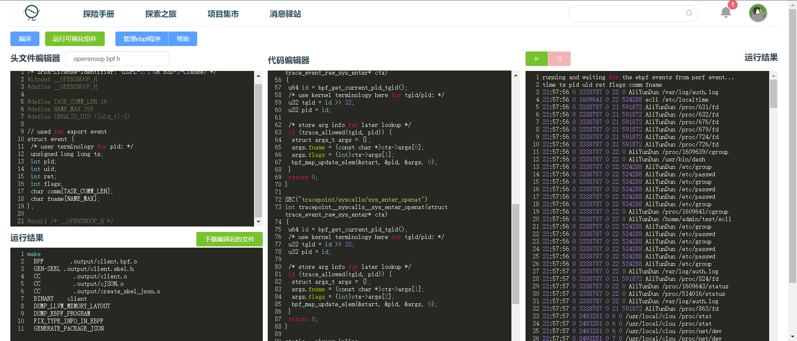
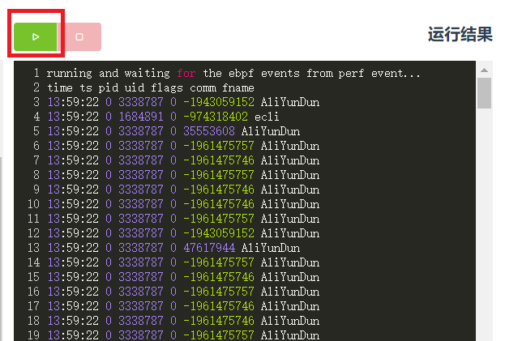
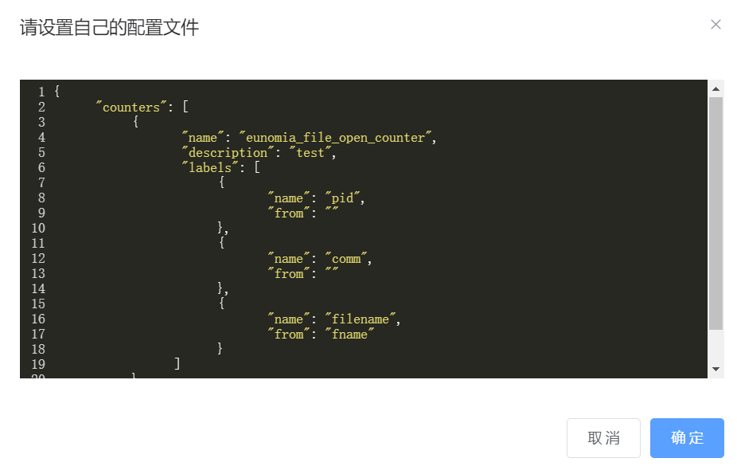

eunomia-bpf: simplify and enhance eBPF with CO-RE1 and WebAssembly2


A compiler and runtime framework to help you build and distribute eBPF program easier.
Introduction
eunomia-bpf is a dynamic loading library/runtime and a compile toolchain framework, aim at helping you build and distribute eBPF programs easier.
With eunnomia-bpf, you can:
- A library to simplify
writingeBPF programs:- simplify building CO-RE1
libbpfeBPF applications: write eBPF kernel code only and automatically exposing your data withperf eventorring bufferfrom kernel. - Automatically sample the data from hash maps and print
histsin userspace. - Automatically generate and config
command line argumentsfor eBPF programs. - You can writing the kernel part in both
BCCandlibbpfstyles.
- simplify building CO-RE1
- Build eBPF programs with
Wasm2: seeWasm-bpfproject- Runtime, libraries and toolchains to write eBPF with Wasm in C/C++, Rust, Go...covering the use cases from
tracing,networking,security.
- Runtime, libraries and toolchains to write eBPF with Wasm in C/C++, Rust, Go...covering the use cases from
- simplify
distributingeBPF programs:- A tool for push, pull and run pre-compiled eBPF programs as
OCIimages in Wasm module - Run eBPF programs from
cloudorURLwithin1line of bash without recompiling, kernel version and architecture independent. - Dynamically load eBPF programs with
JSONconfig file orWasmmodule.
- A tool for push, pull and run pre-compiled eBPF programs as
For more information, see next.
CO-RE: Compile Once – Run Everywhere 2: WebAssembly or Wasm: https://webassembly.org/
introduction
eunomia-bpf is a dynamic loading library/runtime and a compile toolchain framework, aim at helping you build and distribute eBPF programs easier.
Simplify building CO-RE libbpf eBPF applications
Just Write libbpf eBPF kernel code only, auto config the userspace part!
Automatically exposing your data from kernel
-
Get data automatically from
perf eventorring bufferto userspace:struct { __uint(type, BPF_MAP_TYPE_RINGBUF); __uint(max_entries, 256 * 1024); } rb SEC(".maps"); SEC("tp/sched/sched_process_exec") int handle_exec(struct trace_event_raw_sched_process_exec *ctx) { .... e = bpf_ringbuf_reserve(&rb, sizeof(*e), 0); .... bpf_ringbuf_submit(e, 0); return 0; }Compile and Run the program:
$ ecc bootstrap.bpf.c bootstrap.h Compiling bpf object... Generating export types... Packing ebpf object and config into package.json... $ sudo ./ecli examples/bpftools/bootstrap/package.json TIME PID PPID EXIT_CODE DURATION_NS COMM FILENAME EXIT_EVENT 22:01:04 46310 2915 0 0 sh /bin/sh 0 22:01:04 46311 46310 0 0 which /usr/bin/which 0 22:01:04 46311 46310 0 2823776 which 1 22:01:04 46310 2915 0 6288891 sh 1 22:01:04 46312 2915 0 0 sh /bin/sh 0 22:01:04 46313 46312 0 0 ps /usr/bin/ps 0see bootstrap for example. This is exactly the same as bootstrap.bpf.c in libbpf-bootstrap project, but only kernel code is needed.
Automatically sample the data and print hists in userspace
-
Sample the data from hash maps and print them in human readable format with comments:
/// @sample {"interval": 1000, "type" : "log2_hist"} struct { __uint(type, BPF_MAP_TYPE_HASH); __uint(max_entries, MAX_ENTRIES); __type(key, u32); __type(value, struct hist); } hists SEC(".maps");and Get
histdata fromhistsmap and print them in human readable format:$ sudo ecli examples/bpftools/runqlat/package.json --targ_per_process key = 8326 comm = containerd usec : count distribution 0 -> 1 : 0 | | 2 -> 3 : 0 | | 4 -> 7 : 0 | | 8 -> 15 : 0 | | 16 -> 31 : 2 |************* | 32 -> 63 : 2 |************* | 64 -> 127 : 6 |****************************************| 128 -> 255 : 0 | | 256 -> 511 : 2 |************* |see examples/bpftools/mdflush.bpf.c for example.
Automatically generate and config command line arguments
-
Automatically generate and config command line arguments for your eBPF program from the comments in your kernel code:
/// Process ID to trace const volatile pid_t pid_target = 0; /// Thread ID to trace const volatile pid_t tgid_target = 0; /// @description User ID to trace const volatile uid_t uid_target = 0; /// @cmdarg {"default": false, "short": "f", "long": "failed"} /// @description target pid to trace const volatile bool targ_failed = false;and Get:
$ sudo ecli examples/bpftools/opensnoop/package.json -h Usage: opensnoop_bpf [--help] [--version] [--verbose] [--pid_target VAR] [--tgid_target VAR] [--uid_target VAR] [--failed] Trace open family syscalls. Optional arguments: -h, --help shows help message and exits -v, --version prints version information and exits --verbose prints libbpf debug information --pid_target Process ID to trace --tgid_target Thread ID to tracesee examples/bpftools/opensnoop/opensnoop.bpf.c for example.
-
100%compatible withlibbpf, libbpf-bootstrap andlibbpf-rs, etc: you can compile libbpf-tools kernel code witheunomia-bpfand run them without many modification! -
Not limited to tracing: support
tracepoints,kprobe,uprobe,lsm,xdp,tcetc...
Compile and pack CO-RE eBPF kernel code to a config file
-
Compile and pack CO-RE eBPF kernel code to a
JSONorYAMLconfig file:$ ecc cmd/test/opensnoop.bpf.c opensnoop.h Compiling bpf object... Generating export types... Packing ebpf object and config into package.json... $ docker run -it -v `pwd`/:/src/ ghcr.io/eunomia-bpf/ecc-`uname -m`:latest # build with docker for x86_64 and aarch64 Packing ebpf object and config into package.json...You can modify the config file and config the eBPF program behavior to your need.
Dynamic load and run CO-RE eBPF kernel code from the cloud with URL or OCI image
-
you can dynamically load it on different kernel version without recompile, and without clang/llvm dependency:
$ sudo ecli opensnoop.json TIME PID TPID SIG RET COMM 22:58:28 77121 3168 0 0 cpptools-srv 22:58:29 69044 3168 0 0 cpptools-srv 22:58:29 3014 2906 0 0 code 22:58:29 6952 4061 0 0 node 22:58:29 4061 3937 0 0 node 22:58:29 75263 3168 0 0 cpptools-srv 22:58:29 2906 2488 0 0 code 22:58:29 69149 3168 0 0 cpptools-srv 22:58:29 73541 3168 0 0 cpptools-srv 22:58:29 73468 3168 0 0 cpptools-srv 22:58:29 2906 2488 0 0 code 22:58:29 69094 3168 0 0 cpptools-srv -
Get pre-compiled eBPF programs running from the cloud to the kernel in
1line of bash, kernel version and architecture independent:# download the release from https://github.com/eunomia-bpf/eunomia-bpf/releases/latest/download/ecli $ wget https://aka.pw/bpf-ecli -O ecli && chmod +x ./ecli $ sudo ./ecli https://eunomia-bpf.github.io/eunomia-bpf/sigsnoop/package.json # simply run a pre-compiled ebpf code from a url $ sudo ./ecli sigsnoop:latest # run with a name and download the latest version bpf tool from our repo -
very small and simple! The library itself
<1MBand noLLVM/Clangdependence, can be embedded easily in you project -
as fast as
<100msand little resource need to dynamically load and run eBPF program
Base on eunomia-bpf, we have an eBPF pacakge manager in LMP project, with OCI images and ORAS for distribution.
wasm-bpf: Write user space code for your eBPF program in WebAssembly
see wasm-bpf project:
A WebAssembly eBPF library, toolchain and runtime powered by CO-RE(Compile Once – Run Everywhere) libbpf and WAMR.
General purpose: provide most abilities from eBPF to Wasm,pollingfrom the ring buffer or perf buffer, bidirectional communications betweenkerneleBPF anduserspaceWasm usingmaps, dynamicallyloading,attachingordetaching, etc. Supports a large number of eBPF program types and map types, covering the use cases fromtracing,networking,security.High performance: Noserializationoverhead for complex data types, usingshared memoryto avoid copy overhead between host and Wasm.Easy to use: provide a similar developing experience as the libbpf-bootstrap,auto generatethe Wasm-eBPF skeleton headers and type definitions for bindings.Ultralightweight: the sample runtime has only300+lines of code, binary only1.5 MBin size. Compiled Wasm module would be only~90K. With the same toolchain, you can easily build your own Wasm-eBPF runtime in any languages and platforms!
Project Architecture
we have a loader library, a compile toolchain, and some additional tools like cli and a custom metrics exporter.

An bpf-loader library
A wrapper of main functions of libbpf, provide the ability to dynamically load eBPF code to the kernel and run it with a simple JSON and a few API.
see bpf-loader for details.
A simple cli interface is provided for bpf-loader library, which you can use it to start any eBPF program from a url in a command. You can download it from release.
see examples for more examples.
A library to load and operate eBPF program from a WASM module
Use the eunomia-bpf library to load eBPF program from a WASM module, you can write a WASM module to operate the eBPF program or process the data in user space WASM runtime. The idea is simple:
- compile the kernel eBPF code skeleton to the
JSONformat witheunomia-cctoolchain - embed the
JSONdata in theWASMmodule, and provide some API for operating the eBPF program skeleton - load the
JSONdata from theWASMmodule and run the eBPF program skeleton witheunomia-bpflibrary
You can have multiple eBPF program in a single WASM module.
See wasm-runtime for details. In fact, wasm-bpf library only exports a few functions from bpf-loader library to the VM, so you can replace the WASM runtime with your own easily.
For example, you can run an eBPF program with a WASM module for an URL:
sudo ./ecli run https://eunomia-bpf.github.io/eunomia-bpf/sigsnoop/app.wasm
You can also generate a WASM program template for eBPF or build WASM module with compiler container:
# for x86_64 and aarch64
docker run -it -v `pwd`/:/src/ ghcr.io/eunomia-bpf/ecc-`uname -m`:latest gen-wasm-skel # generate WASM app template for eBPF
docker run -it -v `pwd`/:/src/ ghcr.io/eunomia-bpf/ecc-`uname -m`:latest build-wasm # Build WASM module
see sigsnoop example for more detail.
A compile toolchain to help you generate pre compiled eBPF data
The toolchain can be used as a docker to generate pre-compiled eBPF data in one command:
see the compile toolchains compiler for details.
you can also simply use the ebpm-template repo as a template in github, just push to it and github action can help you compile CO-RE ebpf code!
other related projects
-
LMP eBPF Hub: github.com/linuxkerneltravel/lmp
a package manager for eBPF based on wasm modules
-
bolipi online compiler & runner: https://bolipi.com/ebpf/home/online
an online compiler and runner for eBPF program newbies
-
An Observability tool
An prometheus and OpenTelemetry exporter for custom eBPF metrics, written in async rust: eunomia-exporter. You can compile it or download from release
build the project
see build for details.
📦 Wasm-bpf: Wasm library and toolchain for eBPF


Wasm-bpf is a WebAssembly eBPF library, toolchain and runtime powered by CO-RE(Compile Once – Run Everywhere) libbpf. It can help you build almost every eBPF programs or usecases to Wasm with nearly zero modification, and run them cross platforms with Wasm sandbox.
Introduction
WebAssembly (Wasm) is a portable binary format for executable code. The code is executed at a nearly-native speed in a memory-safe (for host) sandbox, with clearly defined resource constraints, and APIs for communicating with the embedding host environment (eg. proxy).The wasm-bpf project combines Wasm and eBPF technologies to enhance the performance and programmability of eBPF applications.
With wasm-bpf, users can dynamically load and securely execute user-defined or community-contributed Wasm-eBPF codes as plug-ins in their software products, such as observability platforms or service proxy. This enables efficient and scalable data collection, while also allowing for advanced processing and analysis of that data.
It also enables developers to write eBPF programs in familiar languages like C/C++, Rust, Go, and more than 30 other programming languages, and deploy them easily across different Linux distributions. Additionally, cloud providers can leverage wasm-bpf to offer a secure and high-performance environment for their customers to develop and deploy eBPF applications in their cloud environments.
Features
General purpose: provide most abilities from eBPF to Wasm,pollingfrom the ring buffer or perf buffer, bidirectional communications betweenkerneleBPF anduserspaceWasm usingmaps, dynamicallyloading,attachingordetaching, etc. Supports a large number of eBPF program types and map types.High performance: Noserializationoverhead for complex data types, usingshared memoryto avoid copy overhead between host and Wasm.Easy to use: provide a similar developing experience as the libbpf-bootstrap,auto generatethe Wasm-eBPF skeleton headers and type definitions for bindings. Write your eBPF programs inC/C++,Rust,Goand compile to Wasm.Ultralightweight: the miminal runtime has only1.5 MBin binary size. Compiled Wasm module would be only~90K. With the same toolchain, you can easily build your own Wasm-eBPF runtime in any languages and platforms!
See the examples directory for examples of eBPF programs written in C, Rust, Go and compiled to Wasm, covering the use cases from tracing, networking to security.
For tools to distribute Wasm-eBPF programs in OCI images, please refer to eunomia-bpf repo.
Install
-
Install the
eclitool for running eBPF program from the cloud:$ wget https://aka.pw/bpf-ecli -O ecli && chmod +x ./ecli $ ./ecli -h Usage: ecli [--help] [--version] [--json] [--no-cache] url-and-args .... -
Install the
ecccompiler-toolchain for compiling eBPF kernel code to aconfigfile orWasmmodule(clang,llvm, andlibclangshould be installed for compiling):$ wget https://github.com/eunomia-bpf/eunomia-bpf/releases/latest/download/ecc && chmod +x ./ecc $ ./ecc -h eunomia-bpf compiler Usage: ecc [OPTIONS] <SOURCE_PATH> [EXPORT_EVENT_HEADER] ....or use the docker image for compile:
# for x86_64 and aarch64 docker run -it -v `pwd`/:/src/ ghcr.io/eunomia-bpf/ecc-`uname -m`:latest # compile with docker. `pwd` should contains *.bpf.c files and *.h files. -
build the compiler, runtime library and tools:
see build for building details.
build
If you want to run the cli, in most cases, you don't need to build your own.
Building
libbpf-bootstrap supports multiple build systems that do the same thing. This serves as a cross reference for folks coming from different backgrounds.
Install Dependencies
You will need clang, libelf and zlib to build the examples, package names may vary across distros.
On Ubuntu/Debian, you need:
$ apt install clang libelf1 libelf-dev zlib1g-dev
On CentOS/Fedora, you need:
$ dnf install clang elfutils-libelf elfutils-libelf-devel zlib-devel
install rust toolchain
curl https://sh.rustup.rs -sSf | sh -s
build bpf-loader
bpf-loader is our core library written in C++17. It has no other dependencies except libbpf.
$ git submodule update --init --recursive --remote # check out libbpf
$ make bpf-loader # build ebpf-loader
The recommended compiler is gcc9 or later.
build ecli:
After compile the bpf-loader, you can build the cli tool in C++:
$ make ecli
reference: https://github.com/libbpf/libbpf-bootstrap
build wasm lib
$ make wasm-runtime
Please install WASI SDK, download the wasi-sdk release and extract the archive to default path /opt/wasi-sdk if you want to compile c code to wasm.
build compiler
$ make ecc
more details
- You can check the Makefile at project root for more details: Makefile
- You may want to refer to our CI for more build info: ecc.yml
Build on Android
Android上build需要先Installing Debian on Android in Termux
在Android上构建时，需要先Installing Debian on Android in Termux
- install termux
https://github.com/termux/termux-app/releases/tag/v0.118.0
- install proot-distro
select debian distro
pkg install proot-distro
proot-distro install debian
proot-distro login debian
- install packages
remember proot-distro login debian first
apk update
apt install clang cmake libelf1 libelf-dev zlib1g-dev
之后的步骤和在ARM上build上相同
Build on ARM
- 同步 eunomia-bpf 到本地
git clone https://github.com/eunomia-bpf/eunomia-bpf.git
cd eunomia-bpf
git submodule update --init --recursive --remote
2.配置环境变量
export PKG_CONFIG_PATH=/usr/lib/aarch64-linux-gnu/pkgconfig
3.安装依赖
apt update
apt install clang cmake libelf1 libelf-dev zlib1g-dev
4.修改wasm-runtime/CMakeLists.txt中的WAMR_BUILD_TARGET（may not required)
change set (WAMR_BUILD_TARGET "X86_64") to set (WAMR_BUILD_TARGET "AARCH64")
5.编译
make bpf-loader
make ecli
6.检查输出
root@localhost:~/eunomia-bpf# file ecli/build/bin/Release/ecli
ecli: ELF 64-bit LSB pie executable, ARM aarch64, version 1 (SYSV), dynamically linked, interpreter /lib/ld-linux-aarch64.so.1, BuildID[sha1]=eab42b79be75951e3a573aa7c61136239d35c868, for GNU/Linux 3.7.0, with debug_info, not stripped
Quick Start
- Github Template：eunomia-bpf/ebpm-template
- example bpf programs: examples/bpftools
- tutorial: eunomia-bpf/bpf-developer-tutorial
You can get pre-compiled eBPF programs running from the cloud to the kernel in 1 line of bash:
# download the release from https://github.com/eunomia-bpf/eunomia-bpf/releases/latest/download/ecli
$ wget https://aka.pw/bpf-ecli -O ecli && chmod +x ./ecli
$ sudo ./ecli https://eunomia-bpf.github.io/eunomia-bpf/sigsnoop/package.json # simply run a pre-compiled ebpf code from a url
$ sudo ./ecli sigsnoop:latest # run with a name and download the latest version bpf tool from our repo
ecli
bpf 运行时需要有Linux内核相关支持，docker 中的内核共享的宿主机的内核，因此使用docker运行bpf程序时需要使用以下命令为容器赋予权限和相关内核支持。
此处参考https://github.com/iovisor/bpftrace/blob/master/INSTALL.md#kernel-headers-install
$ docker run -ti -v /usr/src:/usr/src:ro \
-v /lib/modules/:/lib/modules:ro \
-v /sys/kernel/debug/:/sys/kernel/debug:rw \
-v /home/admin/my:/root/my \ //挂载本机目录到容器的/root/my路径下
--net=host --pid=host --privileged \
ecli:1.0.1
dockerfile ubuntu
dockerfile的基础镜像是Ubuntu，国内使用时因为有墙的存在，所以需要对Linux进行换源。sources.list如下：
deb http://mirrors.aliyun.com/ubuntu/ jammy main restricted universe multiverse
#deb-src http://mirrors.aliyun.com/ubuntu/ jammy main restricted universe multiverse
deb http://mirrors.aliyun.com/ubuntu/ jammy-security main restricted universe multiverse
#deb-src http://mirrors.aliyun.com/ubuntu/ jammy-security main restricted universe multiverse
deb http://mirrors.aliyun.com/ubuntu/ jammy-updates main restricted universe multiverse
#deb-src http://mirrors.aliyun.com/ubuntu/ jammy-updates main restricted universe multiverse
deb http://mirrors.aliyun.com/ubuntu/ jammy-proposed main restricted universe multiverse
#deb-src http://mirrors.aliyun.com/ubuntu/ jammy-proposed main restricted universe multiverse
deb http://mirrors.aliyun.com/ubuntu/ jammy-backports main restricted universe multiverse
#deb-src http://mirrors.aliyun.com/ubuntu/ jammy-backports main restricted universe multiverse
dockerfile中的具体内容如下
FROM ubuntu:latest
ENV UBUNTU_SOURCE /etc/apt
COPY ./ /root
WORKDIR /root
ADD sources.list $UBUNTU_SOURCE/
RUN apt-get update && \
apt-get -y install gcc libelf-dev
#CMD ./ecli run /root/my/package.json
CMD ["/bin/bash"]
ubuntu.dockerfile构建时，同一级目录下的文件如下

ecli可执行文件 sources.list Dockerfile这三个文件缺一不可，other文件可忽略。docker容器中wget无法连接外部网络，因此需要在docker构建时将ecli放入镜像中。使用镜像时只要挂载的本机目录中有package.json文件即可。
docker alpine
FROM alpine:latest
COPY ./ /root
WORKDIR /root
RUN sed -i 's/dl-cdn.alpinelinux.org/mirrors.aliyun.com/g' /etc/apk/repositories && \
apk update && \
apk install gcc libelf gcompat
#CMD ./ecli run /root/my/package.json
alpine.dockerfile构建镜像时，同一级目录下必须有ecli可执行文件。 目前alpine.dockerfile仍存在以下问题

docker build
dockerfile构建时使用如下命令
sudo docker build -t ecli:1.0.1 .
参考文档
bpftrace 官方说明（如何让bpf程序在docker中运行）
https://github.com/iovisor/bpftrace/blob/master/INSTALL.md#kernel-headers-install
如何在mac中运行带有bpf运行环境的docker
https://petermalmgren.com/docker-mac-bpf-perf/
eunomia-bpf 用户手册: 让 eBPF 程序的开发和部署尽可能简单
- eunomia-bpf 用户手册: 让 eBPF 程序的开发和部署尽可能简单
传统来说， eBPF 的开发方式主要有 BCC、libbpf 等方式。要完成一个 BPF 二进制程序的开发，需要搭建开发编译环境，要关注目标系统的内核版本情况，需要掌握从 BPF 内核态到用户态程序的编写，以及如何加载、绑定至对应的 HOOK 点等待事件触发，最后再对输出的日志及数据进行处理。
我们希望有这样一种 eBPF 的编译和运行工具链，就像其他很多语言一样：
-
大多数用户只需要关注
bpf.c程序本身的编写，不需要写任何其他的什么 Python, Clang 之类的用户态辅助代码框架； 这样我们可以很方便地分发、重用 eBPF 程序本身，而不需要和某种或几种语言的生态绑定； -
最大程度上和主流的 libbpf 框架实现兼容，原先使用 libbpf 框架编写的代码几乎不需要改动即可移植；eunomia-bpf 编写的 eBPF 程序也可以使用 libbpf 框架来直接编译运行；
-
本地只需要下载一个很小的二进制运行时，没有任何的 Clang LLVM 之类的大型依赖，可以支持热插拔、热更新； 也可以作为 Lua 虚拟机那样的小模块直接编译嵌入其他的大型软件中，提供 eBPF 程序本身的服务；运行和启动时资源占用率都很低；
-
让 eBPF 程序的分发和使用像网页和 Web 服务一样自然（Make eBPF as a service）： 支持在集群环境中直接通过一次请求进行分发和热更新，仅需数十 kB 的 payload， <100ms 的更新时间，和少量的 CPU 内存占用即可完成 eBPF 程序的分发、部署和更新； 不需要执行额外的编译过程，就能得到 CO-RE 的运行效率；
从 C 语言 的 Hello World 开始
还记得您第一次写 C 语言 的 Hello World 程序 吗？首先，我们需要一个 .c 文件，它包含一个 main 函数：
int main(void)
{
printf("Hello, World!\n");
return 0;
}
我们叫它 hello.c，接下来就只需要这几个步骤就好：
# if you are using Ubuntu without a c compiler
sudo apt insalll build-essentials
# compile the program
gcc -o hello hello.c
# run the program
./hello
只需要写一个 c 文件，执行两行命令就可以运行；大多数情况下你也可以把编译好的可执行文件直接移动到其他同样架构的机器或不同版本的操作系统上，然后运行它，也会得到一样的结果:
Hello World!
eunomia-bpf 的 Hello World
首先，我们需要一个 bpf.c 文件，它就是正常的、合法的 C 语言代码，和 libbpf 所使用的完全相同：
#include <linux/bpf.h>
#include <bpf/bpf_helpers.h>
#include <bpf/bpf_tracing.h>
typedef int pid_t;
char LICENSE[] SEC("license") = "Dual BSD/GPL";
SEC("tp/syscalls/sys_enter_write")
int handle_tp(void *ctx)
{
pid_t pid = bpf_get_current_pid_tgid() >> 32;
bpf_printk("BPF triggered from PID %d.\n", pid);
return 0;
}
假设它叫 hello.bpf.c，新建一个 /path/to/repo 的文件夹并且把它放进去，接下来的步骤：
# 下载安装 ecli 二进制
wget https://aka.pw/bpf-ecli -O /usr/local/ecli && chmod +x /usr/local/ecli
# 使用容器进行编译，生成一个 package.json 文件，里面是已经编译好的代码和一些辅助信息
docker run -it -v /path/to/repo:/src yunwei37/ebpm:latest
# 运行 eBPF 程序（root shell）
sudo ecli run package.json
使用 docker 的时候需要把包含 .bpf.c 文件的目录挂载到容器的 /src 目录下，目录中只有一个 .bpf.c 文件；
它会追踪所有进行 write 系统调用的进程的 pid：
$ sudo cat /sys/kernel/debug/tracing/trace_pipe
cat-42755 [003] d...1 48755.529860: bpf_trace_printk: BPF triggered from PID 42755.
cat-42755 [003] d...1 48755.529874: bpf_trace_printk: BPF triggered from PID 42755.
我们编译好的 eBPF 代码同样可以适配多种内核版本，可以直接把 package.json 复制到另外一个机器上，然后不需要重新编译就可以直接运行（CO-RE：Compile Once Run Every Where）；也可以通过网络传输和分发 package.json，通常情况下，压缩后的版本只有几 kb 到几十 kb。
添加 map 记录数据
参考：https://github.com/eunomia-bpf/eunomia-bpf/tree/master/examples/bpftools/bootstrap
struct {
__uint(type, BPF_MAP_TYPE_HASH);
__uint(max_entries, 8192);
__type(key, pid_t);
__type(value, u64);
} exec_start SEC(".maps");
添加 map 的功能和 libbpf 没有任何区别，只需要在 .bpf.c 中定义即可。
使用 ring buffer 往用户态发送数据
参考：https://github.com/eunomia-bpf/eunomia-bpf/tree/master/examples/bpftools/bootstrap
只需要定义一个头文件，包含你想要发送给用户态的数据格式，以 .h 作为后缀名：
/* SPDX-License-Identifier: (LGPL-2.1 OR BSD-2-Clause) */
/* Copyright (c) 2020 Facebook */
#ifndef __BOOTSTRAP_H
#define __BOOTSTRAP_H
#define TASK_COMM_LEN 16
#define MAX_FILENAME_LEN 127
struct event {
int pid;
int ppid;
unsigned exit_code;
unsigned long long duration_ns;
char comm[TASK_COMM_LEN];
char filename[MAX_FILENAME_LEN];
unsigned char exit_event;
};
#endif /* __BOOTSTRAP_H */
在代码中定义环形缓冲区之后，就可以直接使用它：
struct {
__uint(type, BPF_MAP_TYPE_RINGBUF);
__uint(max_entries, 256 * 1024);
} rb SEC(".maps");
SEC("tp/sched/sched_process_exec")
int handle_exec(struct trace_event_raw_sched_process_exec *ctx)
{
......
e->exit_event = false;
e->pid = pid;
e->ppid = BPF_CORE_READ(task, real_parent, tgid);
bpf_get_current_comm(&e->comm, sizeof(e->comm));
/* successfully submit it to user-space for post-processing */
bpf_ringbuf_submit(e, 0);
return 0;
}
eunomia-bpf 会自动去源代码中找到对应的 ring buffer map，并且把 ring buffer 和类型信息记录在编译好的信息中，并在运行的时候自动完成对于 ring buffer 的加载、导出事件等工作。所有的 eBPF 代码和原生的 libbpf 程序没有任何区别，使用 eunomia-bpf 开发的代码也可以在 libbpf 中无需任何改动即可编译运行。
使用 perf event array 往用户态发送数据
使用 perf event 的原理和使用 ring buffer 非常类似，使用我们的框架时，也只需要在头文件中定义好所需导出的事件，然后定义一下 perf event map：
struct {
__uint(type, BPF_MAP_TYPE_PERF_EVENT_ARRAY);
__uint(key_size, sizeof(u32));
__uint(value_size, sizeof(u32));
} events SEC(".maps");
可以参考：https://github.com/eunomia-bpf/eunomia-bpf/tree/master/examples/bpftools/opensnoop 它是直接从 libbpf-tools 中移植的实现；
使用 github-template 实现远程编译
由于 eunomia-bpf 的编译和运行阶段完全分离，可以实现在 github 网页上编辑之后，通过 github actions 来完成编译，之后在本地一行命令即可启动：
- 将此 github.com/eunomia-bpf/ebpm-template 用作 github 模板：请参阅 creating-a-repository-from-a-template
- 修改 bootstrap.bpf.c， commit 并等待工作流停止
- 我们配置了 github pages 来完成编译好的 json 的导出，之后就可以实现 ecli 使用远程 url 一行命令即可运行：
sudo ./ecli run https://eunomia-bpf.github.io/ebpm-template/package.json
通过 API 进行热插拔和分发
由于 eunomia-cc 编译出来的 ebpf 程序代码和附加信息很小（约数十 kb），且不需要同时传递任何的额外依赖，因此我们可以非常方便地通过网络 API 直接进行分发，也可以在很短的时间（大约 100ms）内实现热插拔和热更新。我们提供了一个简单的 client 和 server，请参考;
之前也有一篇比赛项目的可行性验证的文章：
https://zhuanlan.zhihu.com/p/555362934
使用 Prometheus 或 OpenTelemetry 进行可观测性数据收集
基于 async Rust 的 Prometheus 或 OpenTelemetry 自定义可观测性数据收集器: eunomia-exporter
可以自行编译或通过 release 下载
example
这是一个 opensnoop 程序，追踪所有的打开文件，源代码来自 bcc/libbpf-tools, 我们修改过后的源代码在这里: examples/bpftools/opensnoop
在编译之后，可以定义一个这样的配置文件:
programs:
- name: opensnoop
metrics:
counters:
- name: eunomia_file_open_counter
description: test
labels:
- name: pid
- name: comm
- name: filename
from: fname
compiled_ebpf_filename: examples/bpftools/opensnoop/package.json
然后，您可以在任何地方使用 config.yaml 和预编译的 eBPF 数据 package.json 启动 Prometheus 导出器，您可以看到如下指标：
您可以在任何内核版本上部署导出器，而无需依赖 LLVM/Clang。 有关详细信息，请参阅 eunomia-exporter。
使用 Wasm 模块分发、动态加载 eBPF 程序
借助 Wasm-bpf 编译工具链和运行时，我们可以使用 Wasm 将 eBPF 程序编写为跨平台的模块，同时使用 C/C++ 或 Rust 来编写 Wasm 程序。通过在 WebAssembly 中使用 eBPF 程序，我们不仅能让 Wasm 应用享受到 eBPF 的高性能和对系统接口的访问能力，还可以让 eBPF 程序使用到 Wasm 的沙箱、灵活性、跨平台性、和动态加载，并且使用 Wasm 的 OCI 镜像来方便、快捷地分发和管理 eBPF 程序。结合这两种技术，我们将会给 eBPF 和 Wasm 生态来一个全新的开发体验！
Wasm-bpf 是一个新的开源项目：https://github.com/eunomia-bpf/wasm-bpf。它定义了一套 eBPF 相关系统接口的抽象，并提供了一套对应的开发工具链、库以及通用的 Wasm + eBPF 运行时实例。它可以提供和 libbpf-bootstrap 相似的开发体验，自动生成对应的 skeleton 头文件，以及用于在 Wasm 和 eBPF 之间无序列化通信的数据结构定义。你可以非常容易地使用任何语言，在任何平台上建立你自己的 Wasm-eBPF 运行时，使用相同的工具链来构建应用。更详细的介绍，请参考我们的上一篇博客：Wasm-bpf: 架起 Webassembly 和 eBPF 内核可编程的桥梁。
基于 Wasm，我们可以使用多种语言构建 eBPF 应用，并以统一、轻量级的方式管理和发布。以我们构建的示例应用 bootstrap.wasm 为例，大小仅为 ~90K，很容易通过网络分发，并可以在不到 100ms 的时间内在另一台机器上动态部署、加载和运行，并且保留轻量级容器的隔离特性。运行时不需要内核头文件、LLVM、clang 等依赖，也不需要做任何消耗资源的重量级的编译工作。
本文将以 C/C++ 语言为例，讨论 C/C++ 编写 eBPF 程序并编译为 Wasm 模块。使用 Rust 语言编写 eBPF 程序并编译为 Wasm 模块的具体示例，将在下一篇文章中描述。
我们在仓库中提供了几个示例程序，分别对应于可观测、网络、安全等多种场景。
使用 Wasm 开发和打包 eBPF 程序
libbpf 是一个 C/C++ 的 eBPF 用户态加载和控制库，随着内核一起分发，几乎已经成为 eBPF 用户态事实上的 API 标准，libbpf 也支持 CO-RE(Compile Once – Run Everywhere) 的解决方案，即预编译的 bpf 代码可以在不同内核版本上正常工作，而无需为每个特定内核重新编译。我们希望尽可能的保持与 libbpf 的用户态 API 以及行为一致，尽可能减少应用迁移到 Wasm （如果需要的话）的成本。
libbpf-bootstrap 为生成基于 libbpf 的 bpf 程序提供了模板,开发者可以很方便的使用该模板生成自定义的 bpf 程序。一般说来，在非 Wasm 沙箱的用户态空间，使用 libbpf-bootstrap 脚手架，可以快速、轻松地使用 C/C++构建 BPF 应用程序。
编译、构建和运行 eBPF 程序（无论是采用什么语言），通常包含以下几个步骤：
- 编写内核态 eBPF 程序的代码，一般使用 C/C++ 或 Rust 语言
- 使用 clang 编译器或者相关工具链编译 eBPF 程序（要实现跨内核版本移植的话，需要包含 BTF 信息）。
- 在用户态的开发程序中，编写对应的加载、控制、挂载、数据处理逻辑；
- 在实际运行的阶段，从用户态将 eBPF 程序加载进入内核，并实际执行。
bootstrap
bootstrap是一个简单（但实用）的BPF应用程序的例子。它跟踪进程的启动（准确地说，是 exec() 系列的系统调用）和退出，并发送关于文件名、PID 和 父 PID 的数据，以及退出状态和进程的持续时间。用-d <min-duration-ms> 你可以指定要记录的进程的最小持续时间。
bootstrap 是在 libbpf-bootstrap 中，根据 BCC 软件包中的libbpf-tools的类似思想创建的，但它被设计成更独立的，并且有更简单的 Makefile 以简化用户的特殊需求。它演示了典型的BPF特性，包含使用多个 BPF 程序段进行合作，使用 BPF map 来维护状态，使用 BPF ring buffer 来发送数据到用户空间，以及使用全局变量来参数化应用程序行为。
以下是我们使用 Wasm 编译运行 bootstrap 的一个输出示例：
$ sudo sudo ./wasm-bpf bootstrap.wasm -h
BPF bootstrap demo application.
It traces process start and exits and shows associated
information (filename, process duration, PID and PPID, etc).
USAGE: ./bootstrap [-d <min-duration-ms>] -v
$ sudo ./wasm-bpf bootstrap.wasm
TIME EVENT COMM PID PPID FILENAME/EXIT CODE
18:57:58 EXEC sed 74911 74910 /usr/bin/sed
18:57:58 EXIT sed 74911 74910 [0] (2ms)
18:57:58 EXIT cat 74912 74910 [0] (0ms)
18:57:58 EXEC cat 74913 74910 /usr/bin/cat
18:57:59 EXIT cat 74913 74910 [0] (0ms)
18:57:59 EXEC cat 74914 74910 /usr/bin/cat
18:57:59 EXIT cat 74914 74910 [0] (0ms)
18:57:59 EXEC cat 74915 74910 /usr/bin/cat
18:57:59 EXIT cat 74915 74910 [0] (1ms)
18:57:59 EXEC sleep 74916 74910 /usr/bin/sleep
我们可以提供与 libbpf-bootstrap 开发相似的开发体验。只需运行 make 即可构建 wasm 二进制文件：
git clone https://github.com/eunomia-bpf/wasm-bpf --recursive
cd examples/bootstrap
make
编写内核态的 eBPF 程序
要构建一个完整的 eBPF 程序，首先要编写内核态的 bpf 代码。通常使用 C 语言编写，并使用 clang 完成编译：
char LICENSE[] SEC("license") = "Dual BSD/GPL";
struct {
__uint(type, BPF_MAP_TYPE_HASH);
__uint(max_entries, 8192);
__type(key, pid_t);
__type(value, u64);
} exec_start SEC(".maps");
struct {
__uint(type, BPF_MAP_TYPE_RINGBUF);
__uint(max_entries, 256 * 1024);
} rb SEC(".maps");
const volatile unsigned long long min_duration_ns = 0;
const volatile int *name_ptr;
SEC("tp/sched/sched_process_exec")
int handle_exec(struct trace_event_raw_sched_process_exec *ctx)
{
struct task_struct *task;
unsigned fname_off;
struct event *e;
pid_t pid;
u64 ts;
....
受篇幅所限，这里没有贴出完整的代码。内核态代码的编写方式和其他基于 libbpf 的程序完全相同，一般来说会包含一些全局变量，通过 SEC 声明挂载点的 eBPF 函数，以及用于保存状态，或者在用户态和内核态之间相互通信的 map 对象（我们还在进行另外一项工作：bcc to libbpf converter，等它完成后就可以以这种方式编译 BCC 风格的 eBPF 内核态程序）。在编写完 eBPF 程序之后，运行 make 会在 Makefile 调用 clang 和 llvm-strip 构建BPF程序，以剥离调试信息：
clang -g -O2 -target bpf -D__TARGET_ARCH_x86 -I../../third_party/vmlinux/x86/ -idirafter /usr/local/include -idirafter /usr/include -c bootstrap.bpf.c -o bootstrap.bpf.o
llvm-strip -g bootstrap.bpf.o # strip useless DWARF info
之后，我们会提供一个为了 Wasm 专门实现的 bpftool，用于从 BPF 程序生成C头文件：
../../third_party/bpftool/src/bpftool gen skeleton -j bootstrap.bpf.o > bootstrap.skel.h
由于 eBPF 本身的所有 C 内存布局是和当前所在机器的指令集一样的，但是 wasm 是有一套确定的内存布局（比如当前所在机器是 64 位的，Wasm 虚拟机里面是 32 位的，C struct layout 、指针宽度、大小端等等都可能不一样），为了确保 eBPF 程序能正确和 Wasm 之间进行相互通信，我们需要定制一个专门的 bpftool 等工具，实现正确生成可以在 Wasm 中工作的用户态开发框架。
skel 包含一个 BPF 程序的skeleton，用于操作 BPF 对象，并控制 BPF 程序的生命周期，例如：
struct bootstrap_bpf {
struct bpf_object_skeleton *skeleton;
struct bpf_object *obj;
struct {
struct bpf_map *exec_start;
struct bpf_map *rb;
struct bpf_map *rodata;
} maps;
struct {
struct bpf_program *handle_exec;
struct bpf_program *handle_exit;
} progs;
struct bootstrap_bpf__rodata {
unsigned long long min_duration_ns;
} *rodata;
struct bootstrap_bpf__bss {
uint64_t /* pointer */ name_ptr;
} *bss;
};
我们会将所有指针都将根据 eBPF 程序目标所在的指令集的指针大小转换为整数，例如，name_ptr。此外，填充字节将明确添加到结构体中以确保结构体布局与目标端相同，例如使用 char __pad0[4];。我们还会使用 static_assert 来确保结构体的内存长度和原先 BTF 信息中的类型长度相同。
构建用户态的 Wasm 代码，并获取内核态数据
libbpf 是一个 C/C++ 的 eBPF 用户态加载和控制库，随着内核一起分发，几乎已经成为 eBPF 用户态事实上的 API 标准，libbpf 也支持 CO-RE(Compile Once – Run Everywhere) 的解决方案，即预编译的 bpf 代码可以在不同内核版本上正常工作，而无需为每个特定内核重新编译。我们希望尽可能的保持与 libbpf 的用户态 API 以及行为一致，尽可能减少应用迁移到 Wasm （如果需要的话）的成本。
libbpf-bootstrap 为生成基于 libbpf 的 bpf 程序提供了模板,开发者可以很方便的使用该模板生成自定义的 bpf 程序。一般说来，在非 Wasm 沙箱的用户态空间，使用 libbpf-bootstrap 脚手架，可以快速、轻松地使用 C/C++构建 BPF 应用程序。
编译、构建和运行 eBPF 程序（无论是采用什么语言），通常包含以下几个步骤：
- 编写内核态 eBPF 程序的代码，一般使用 C/C++ 或 Rust 语言
- 使用 clang 编译器或者相关工具链编译 eBPF 程序（要实现跨内核版本移植的话，需要包含 BTF 信息）。
- 在用户态的开发程序中，编写对应的加载、控制、挂载、数据处理逻辑；
- 在实际运行的阶段，从用户态将 eBPF 程序加载进入内核，并实际执行。
bootstrap
bootstrap是一个简单（但实用）的BPF应用程序的例子。它跟踪进程的启动（准确地说，是 exec() 系列的系统调用）和退出，并发送关于文件名、PID 和 父 PID 的数据，以及退出状态和进程的持续时间。用-d <min-duration-ms> 你可以指定要记录的进程的最小持续时间。
bootstrap 是在 libbpf-bootstrap 中，根据 BCC 软件包中的libbpf-tools的类似思想创建的，但它被设计成更独立的，并且有更简单的 Makefile 以简化用户的特殊需求。它演示了典型的BPF特性，包含使用多个 BPF 程序段进行合作，使用 BPF map 来维护状态，使用 BPF ring buffer 来发送数据到用户空间，以及使用全局变量来参数化应用程序行为。
以下是我们使用 Wasm 编译运行 bootstrap 的一个输出示例：
$ sudo sudo ./wasm-bpf bootstrap.wasm -h
BPF bootstrap demo application.
It traces process start and exits and shows associated
information (filename, process duration, PID and PPID, etc).
USAGE: ./bootstrap [-d <min-duration-ms>] -v
$ sudo ./wasm-bpf bootstrap.wasm
TIME EVENT COMM PID PPID FILENAME/EXIT CODE
18:57:58 EXEC sed 74911 74910 /usr/bin/sed
18:57:58 EXIT sed 74911 74910 [0] (2ms)
18:57:58 EXIT cat 74912 74910 [0] (0ms)
18:57:58 EXEC cat 74913 74910 /usr/bin/cat
18:57:59 EXIT cat 74913 74910 [0] (0ms)
18:57:59 EXEC cat 74914 74910 /usr/bin/cat
18:57:59 EXIT cat 74914 74910 [0] (0ms)
18:57:59 EXEC cat 74915 74910 /usr/bin/cat
18:57:59 EXIT cat 74915 74910 [0] (1ms)
18:57:59 EXEC sleep 74916 74910 /usr/bin/sleep
我们可以提供与 libbpf-bootstrap 开发相似的开发体验。只需运行 make 即可构建 wasm 二进制文件：
git clone https://github.com/eunomia-bpf/wasm-bpf --recursive
cd examples/bootstrap
make
编写内核态的 eBPF 程序
要构建一个完整的 eBPF 程序，首先要编写内核态的 bpf 代码。通常使用 C 语言编写，并使用 clang 完成编译：
char LICENSE[] SEC("license") = "Dual BSD/GPL";
struct {
__uint(type, BPF_MAP_TYPE_HASH);
__uint(max_entries, 8192);
__type(key, pid_t);
__type(value, u64);
} exec_start SEC(".maps");
struct {
__uint(type, BPF_MAP_TYPE_RINGBUF);
__uint(max_entries, 256 * 1024);
} rb SEC(".maps");
const volatile unsigned long long min_duration_ns = 0;
const volatile int *name_ptr;
SEC("tp/sched/sched_process_exec")
int handle_exec(struct trace_event_raw_sched_process_exec *ctx)
{
struct task_struct *task;
unsigned fname_off;
struct event *e;
pid_t pid;
u64 ts;
....
受篇幅所限，这里没有贴出完整的代码。内核态代码的编写方式和其他基于 libbpf 的程序完全相同，一般来说会包含一些全局变量，通过 SEC 声明挂载点的 eBPF 函数，以及用于保存状态，或者在用户态和内核态之间相互通信的 map 对象（我们还在进行另外一项工作：bcc to libbpf converter，等它完成后就可以以这种方式编译 BCC 风格的 eBPF 内核态程序）。在编写完 eBPF 程序之后，运行 make 会在 Makefile 调用 clang 和 llvm-strip 构建BPF程序，以剥离调试信息：
clang -g -O2 -target bpf -D__TARGET_ARCH_x86 -I../../third_party/vmlinux/x86/ -idirafter /usr/local/include -idirafter /usr/include -c bootstrap.bpf.c -o bootstrap.bpf.o
llvm-strip -g bootstrap.bpf.o # strip useless DWARF info
之后，我们会提供一个为了 Wasm 专门实现的 bpftool，用于从 BPF 程序生成C头文件：
../../third_party/bpftool/src/bpftool gen skeleton -j bootstrap.bpf.o > bootstrap.skel.h
由于 eBPF 本身的所有 C 内存布局是和当前所在机器的指令集一样的，但是 wasm 是有一套确定的内存布局（比如当前所在机器是 64 位的，Wasm 虚拟机里面是 32 位的，C struct layout 、指针宽度、大小端等等都可能不一样），为了确保 eBPF 程序能正确和 Wasm 之间进行相互通信，我们需要定制一个专门的 bpftool 等工具，实现正确生成可以在 Wasm 中工作的用户态开发框架。
skel 包含一个 BPF 程序的skeleton，用于操作 BPF 对象，并控制 BPF 程序的生命周期，例如：
struct bootstrap_bpf {
struct bpf_object_skeleton *skeleton;
struct bpf_object *obj;
struct {
struct bpf_map *exec_start;
struct bpf_map *rb;
struct bpf_map *rodata;
} maps;
struct {
struct bpf_program *handle_exec;
struct bpf_program *handle_exit;
} progs;
struct bootstrap_bpf__rodata {
unsigned long long min_duration_ns;
} *rodata;
struct bootstrap_bpf__bss {
uint64_t /* pointer */ name_ptr;
} *bss;
};
我们会将所有指针都将根据 eBPF 程序目标所在的指令集的指针大小转换为整数，例如，name_ptr。此外，填充字节将明确添加到结构体中以确保结构体布局与目标端相同，例如使用 char __pad0[4];。我们还会使用 static_assert 来确保结构体的内存长度和原先 BTF 信息中的类型长度相同。
构建用户态的 Wasm 代码，并获取内核态数据
我们默认使用 wasi-sdk 从 C/C++ 代码构建 wasm 二进制文件。您也可以使用 emcc 工具链来构建 wasm 二进制文件，命令应该是相似的。您可以运行以下命令来安装 wasi-sdk：
wget https://github.com/WebAssembly/wasi-sdk/releases/download/wasi-sdk-17/wasi-sdk-17.0-linux.tar.gz
tar -zxf wasi-sdk-17.0-linux.tar.gz
sudo mkdir -p /opt/wasi-sdk/ && sudo mv wasi-sdk-17.0/* /opt/wasi-sdk/
然后运行 make 会在 Makefile 中使用 wasi-clang 编译 C 代码，生成 Wasm 字节码：
/opt/wasi-sdk/bin/clang -O2 --sysroot=/opt/wasi-sdk/share/wasi-sysroot -Wl,--allow-undefined -o bootstrap.wasm bootstrap.c
由于宿主机（或 eBPF 端）的 C 结构布局可能与目标（Wasm 端）的结构布局不同，因此您可以使用 ecc 和我们的 wasm-bpftool 生成用户空间代码的 C 头文件：
ecc bootstrap.h --header-only
../../third_party/bpftool/src/bpftool btf dump file bootstrap.bpf.o format c -j > bootstrap.wasm.h
例如，原先内核态的头文件中结构体定义如下：
struct event {
int pid;
int ppid;
unsigned exit_code;
unsigned long long duration_ns;
char comm[TASK_COMM_LEN];
char filename[MAX_FILENAME_LEN];
char exit_event;
};
我们的工具会将其转换为：
struct event {
int pid;
int ppid;
unsigned int exit_code;
char __pad0[4];
unsigned long long duration_ns;
char comm[16];
char filename[127];
char exit_event;
} __attribute__((packed));
static_assert(sizeof(struct event) == 168, "Size of event is not 168");
**注意：此过程和工具并不总是必需的，对于简单的应用，你可以手动完成。**对于内核态和 Wasm 应用都使用 C/C++ 语言的情况下，你可以手动编写所有事件结构体定义，使用 __attribute__((packed)) 避免填充字节，并在主机和 wasm 端之间转换所有指针为正确的整数。所有类型必须在 wasm 中定义与主机端相同的大小和布局。
对于复杂的程序，手动确认内存布局的正确是分困难，因此我们创建了 wasm 特定的 bpftool，用于从 BTF 信息中生成包含所有类型定义和正确结构体布局的 C 头文件，以便用户空间代码使用。可以通过类似的方案，一次性将 eBPF 程序中所有的结构体定义转换为 Wasm 端的内存布局，并确保大小端一致，即可正确访问。
对于 Wasm 中不是由 C 语言进行开发的情况下，借助 Wasm 的组件模型，我们还可以将这些 BTF 信息结构体定义作为 wit 类型声明输出，然后在用户空间代码中使用 wit-bindgen 工具一次性生成多种语言（如 C/C++/Rust/Go）的类型定义。这部分会在关于如何使用 Rust 在 Wasm 中编写 eBPF 程序的部分详细描述，我们也会将这些步骤和工具链继续完善，以改进 Wasm-bpf 程序的编程体验。
我们为 wasm 程序提供了一个仅包含头文件的 libbpf API 库，您可以在 libbpf-wasm.h（wasm-include/libbpf-wasm.h）中找到它，它包含了一部分 libbpf 常用的用户态 API 和类型定义。Wasm 程序可以使用 libbpf API 操作 BPF 对象，例如：
/* Load and verify BPF application */
skel = bootstrap_bpf__open();
/* Parameterize BPF code with minimum duration parameter */
skel->rodata->min_duration_ns = env.min_duration_ms * 1000000ULL;
/* Load & verify BPF programs */
err = bootstrap_bpf__load(skel);
/* Attach tracepoints */
err = bootstrap_bpf__attach(skel);
rodata 部分用于存储 BPF 程序中的常量，这些值将在 bpftool gen skeleton 的时候由代码生成映射到 object 中正确的偏移量,然后在 open 之后通过内存映射修改对应的值，因此不需要在 Wasm 中编译 libelf 库，运行时仍可动态加载和操作 BPF 对象。
Wasm 端的 C 代码与本地 libbpf 代码略有不同，但它可以从 eBPF 端提供大部分功能，例如，从环形缓冲区或 perf 缓冲区轮询，从 Wasm 端和 eBPF 端访问映射，加载、附加和分离 BPF 程序等。它可以支持大量的 eBPF 程序类型和映射，涵盖从跟踪、网络、安全等方面的大多数 eBPF 程序的使用场景。
由于 Wasm 端缺少一些功能，例如 signal handler 还不支持（2023年2月），原始的C代码有可能无法直接编译为 wasm，您需要稍微修改代码以使其工作。我们将尽最大努力使 wasm 端的 libbpf API 与通常在用户空间运行的 libbpf API尽可能相似，以便用户空间代码可以在未来直接编译为 wasm。我们还将尽快提供更多语言绑定（Go等）的 wasm 侧 eBPF 程序开发库。
可以在用户态程序中使用 polling API 获取内核态上传的数据。它将是 ring buffer 和 perf buffer 的一个封装，用户空间代码可以使用相同的 API 从环形缓冲区或性能缓冲区中轮询事件，具体取决于BPF程序中指定的类型。例如，环形缓冲区轮询定义为BPF_MAP_TYPE_RINGBUF：
struct {
__uint(type, BPF_MAP_TYPE_RINGBUF);
__uint(max_entries, 256 * 1024);
} rb SEC(".maps");
你可以在用户态使用以下代码从 ring buffer 中轮询事件：
rb = bpf_buffer__open(skel->maps.rb, handle_event, NULL);
/* Process events */
printf("%-8s %-5s %-16s %-7s %-7s %s\n", "TIME", "EVENT", "COMM", "PID",
"PPID", "FILENAME/EXIT CODE");
while (!exiting) {
// poll buffer
err = bpf_buffer__poll(rb, 100 /* timeout, ms */);
ring buffer polling 不需要序列化开销。bpf_buffer__poll API 将调用 handle_event 回调函数来处理环形缓冲区中的事件数据：
static int
handle_event(void *ctx, void *data, size_t data_sz)
{
const struct event *e = data;
...
if (e->exit_event) {
printf("%-8s %-5s %-16s %-7d %-7d [%u]", ts, "EXIT", e->comm, e->pid,
e->ppid, e->exit_code);
if (e->duration_ns)
printf(" (%llums)", e->duration_ns / 1000000);
printf("\n");
}
...
return 0;
}
运行时基于 libbpf CO-RE（Compile Once, Run Everywhere）API，用于将 bpf 对象加载到内核中，因此 wasm-bpf 程序不受它编译的内核版本的影响，可以在任何支持 BPF CO-RE 的内核版本上运行。
从用户态程序中访问和更新 eBPF 程序的 map 数据
runqlat 是一个更复杂的示例，这个程序通过直方图展示调度器运行队列延迟，给我们展现了任务等了多久才能运行。
$ sudo ./wasm-bpf runqlat.wasm -h
Summarize run queue (scheduler) latency as a histogram.
USAGE: runqlat [--help] [interval] [count]
EXAMPLES:
runqlat # summarize run queue latency as a histogram
runqlat 1 10 # print 1 second summaries, 10 times
$ sudo ./wasm-bpf runqlat.wasm 1
Tracing run queue latency... Hit Ctrl-C to end.
usecs : count distribution
0 -> 1 : 72 |***************************** |
2 -> 3 : 93 |************************************* |
4 -> 7 : 98 |****************************************|
8 -> 15 : 96 |*************************************** |
16 -> 31 : 38 |*************** |
32 -> 63 : 4 |* |
64 -> 127 : 5 |** |
128 -> 255 : 6 |** |
256 -> 511 : 0 | |
512 -> 1023 : 0 | |
1024 -> 2047 : 0 | |
2048 -> 4095 : 1 | |
runqlat 中使用 map API 来从用户态访问内核里的 map 并直接读取数据，例如：
while (!bpf_map_get_next_key(fd, &lookup_key, &next_key)) {
err = bpf_map_lookup_elem(fd, &next_key, &hist);
...
lookup_key = next_key;
}
lookup_key = -2;
while (!bpf_map_get_next_key(fd, &lookup_key, &next_key)) {
err = bpf_map_delete_elem(fd, &next_key);
...
lookup_key = next_key;
}
运行时 wasm 代码将会使用共享内存来访问内核 map，内核态可以直接把数据拷贝到用户态 Wasm 虚拟机的堆栈中，而不需要面对用户态主机侧程序和 Wasm 运行时之间的额外拷贝开销。同样，对于 Wasm 虚拟机和内核态之间共享的类型定义，需要经过仔细检查以确保它们在 Wasm 和内核态中的类型是一致的。
可以使用 bpf_map_update_elem 在用户态程序内更新内核的 eBPF map，比如:
cg_map_fd = bpf_map__fd(obj->maps.cgroup_map);
cgfd = open(env.cgroupspath, O_RDONLY);
if (cgfd < 0) {
...
}
if (bpf_map_update_elem(cg_map_fd, &idx, &cgfd, BPF_ANY)) {
...
}
因此内核的 eBPF 程序可以从 Wasm 侧的程序获取配置，或者在运行的时候接收消息。
从用户态程序中访问和更新 eBPF 程序的 map 数据
runqlat 是一个更复杂的示例，这个程序通过直方图展示调度器运行队列延迟，给我们展现了任务等了多久才能运行。
$ sudo ./wasm-bpf runqlat.wasm -h
Summarize run queue (scheduler) latency as a histogram.
USAGE: runqlat [--help] [interval] [count]
EXAMPLES:
runqlat # summarize run queue latency as a histogram
runqlat 1 10 # print 1 second summaries, 10 times
$ sudo ./wasm-bpf runqlat.wasm 1
Tracing run queue latency... Hit Ctrl-C to end.
usecs : count distribution
0 -> 1 : 72 |***************************** |
2 -> 3 : 93 |************************************* |
4 -> 7 : 98 |****************************************|
8 -> 15 : 96 |*************************************** |
16 -> 31 : 38 |*************** |
32 -> 63 : 4 |* |
64 -> 127 : 5 |** |
128 -> 255 : 6 |** |
256 -> 511 : 0 | |
512 -> 1023 : 0 | |
1024 -> 2047 : 0 | |
2048 -> 4095 : 1 | |
runqlat 中使用 map API 来从用户态访问内核里的 map 并直接读取数据，例如：
while (!bpf_map_get_next_key(fd, &lookup_key, &next_key)) {
err = bpf_map_lookup_elem(fd, &next_key, &hist);
...
lookup_key = next_key;
}
lookup_key = -2;
while (!bpf_map_get_next_key(fd, &lookup_key, &next_key)) {
err = bpf_map_delete_elem(fd, &next_key);
...
lookup_key = next_key;
}
运行时 wasm 代码将会使用共享内存来访问内核 map，内核态可以直接把数据拷贝到用户态 Wasm 虚拟机的堆栈中，而不需要面对用户态主机侧程序和 Wasm 运行时之间的额外拷贝开销。同样，对于 Wasm 虚拟机和内核态之间共享的类型定义，需要经过仔细检查以确保它们在 Wasm 和内核态中的类型是一致的。
可以使用 bpf_map_update_elem 在用户态程序内更新内核的 eBPF map，比如:
cg_map_fd = bpf_map__fd(obj->maps.cgroup_map);
cgfd = open(env.cgroupspath, O_RDONLY);
if (cgfd < 0) {
...
}
if (bpf_map_update_elem(cg_map_fd, &idx, &cgfd, BPF_ANY)) {
...
}
因此内核的 eBPF 程序可以从 Wasm 侧的程序获取配置，或者在运行的时候接收消息。
更多的例子：socket filter 和 lsm
在仓库中，我们还提供了更多的示例，例如使用 socket filter 监控和过滤数据包：
SEC("socket")
int socket_handler(struct __sk_buff *skb)
{
struct so_event *e;
__u8 verlen;
__u16 proto;
__u32 nhoff = ETH_HLEN;
bpf_skb_load_bytes(skb, 12, &proto, 2);
...
bpf_skb_load_bytes(skb, nhoff + 0, &verlen, 1);
bpf_skb_load_bytes(skb, nhoff + ((verlen & 0xF) << 2), &(e->ports), 4);
e->pkt_type = skb->pkt_type;
e->ifindex = skb->ifindex;
bpf_ringbuf_submit(e, 0);
return skb->len;
}
Linux Security Modules（LSM）是一个基于钩子的框架，用于在Linux内核中实现安全策略和强制访问控制。直到现在，能够实现实施安全策略目标的方式只有两种选择，配置现有的LSM模块（如AppArmor、SELinux），或编写自定义内核模块。
Linux Kernel 5.7 引入了第三种方式：LSM eBPF。LSM BPF 允许开发人员编写自定义策略，而无需配置或加载内核模块。LSM BPF 程序在加载时被验证，然后在调用路径中，到达LSM钩子时被执行。例如，我们可以在 Wasm 轻量级容器中，使用 lsm 限制文件系统操作：
// all lsm the hook point refer https://www.kernel.org/doc/html/v5.2/security/LSM.html
SEC("lsm/path_rmdir")
int path_rmdir(const struct path *dir, struct dentry *dentry) {
char comm[16];
bpf_get_current_comm(comm, sizeof(comm));
unsigned char dir_name[] = "can_not_rm";
unsigned char d_iname[32];
bpf_probe_read_kernel(&d_iname[0], sizeof(d_iname),
&(dir->dentry->d_iname[0]));
bpf_printk("comm %s try to rmdir %s", comm, d_iname);
for (int i = 0;i<sizeof(dir_name);i++){
if (d_iname[i]!=dir_name[i]){
return 0;
}
}
return -1;
}
演示视频
我们也有一个在 B 站上的演示视频，演示了如何从 bcc/libbpf-tools 中移植一个 eBPF 工具程序到 eunomia-bpf 中，并且使用 Wasm 或 JSON 文件来分发、加载 eBPF 程序：https://www.bilibili.com/video/BV1JN4y1A76k
ecli 是基于我们底层的 eunomia-bpf 库和运行时实现的一个简单的命令行工具。我们的项目架构如下图所示：

ecli 工具基于 ewasm 库实现，ewasm 库包含一个 WAMR(wasm-micro-runtime) 运行时，以及基于 libbpf 库构建的 eBPF 动态装载模块。大致来说，我们在 Wasm 运行时和用户态的 libbpf 中间多加了一层抽象层（eunomia-bpf 库），使得一次编译、到处运行的 eBPF 代码可以从 JSON 对象中动态加载。JSON 对象会在编译时被包含在 Wasm 模块中，因此在运行时，我们可以通过解析 JSON 对象来获取 eBPF 程序的信息，然后动态加载 eBPF 程序。
使用 Wasm 或 JSON 编译分发 eBPF 程序的流程图大致如下：

大致来说，整个 eBPF 程序的编写和加载分为三个部分：
- 用 eunomia-cc 工具链将内核的 eBPF 代码骨架和字节码编译为 JSON 格式
- 在用户态开发的高级语言（例如 C 语言）中嵌入 JSON 数据，并提供一些 API 用于操作 JSON 形态的 eBPF 程序骨架
- 将用户态程序和 JSON 数据一起编译为 Wasm 字节码并打包为 Wasm 模块，然后在目标机器上加载并运行 Wasm 程序
- 从 Wasm 模块中加载内嵌的 JSON 数据，用 eunomia-bpf 库动态装载和配置 eBPF 程序骨架。
我们需要完成的仅仅是少量的 native API 和 Wasm 运行时的绑定，并且在 Wasm 代码中处理 JSON 数据。你可以在一个单一的 Wasm 模块中拥有多个 eBPF 程序。如果不使用我们提供的 Wasm 运行时，或者想要使用其他语言进行用户态的 eBPF 辅助代码的开发，在我们提供的 eunomia-bpf 库基础上完成一些 WebaAssembly 的绑定即可。
另外，对于 eunomia-bpf 库而言，不需要 Wasm 模块和运行时同样可以启动和动态加载 eBPF 程序，不过此时动态加载运行的就只是内核态的 eBPF 程序字节码。你可以手动或使用任意语言修改 JSON 对象来控制 eBPF 程序的加载和参数，并且通过 eunomia-bpf 自动获取内核态上报的返回数据。对于初学者而言，这可能比使用 WebAssembly 更加简单方便：只需要编写内核态的 eBPF 程序，然后使用 eunomia-cc 工具链将其编译为 JSON 格式，最后使用 eunomia-bpf 库加载和运行即可。完全不用考虑任何用户态的辅助程序，包括 Wasm 在内。具体可以参考我们的使用手册[7]或示例代码[8]。
原理
ecli 是基于我们底层的 eunomia-bpf 库和运行时实现的一个简单的命令行工具。我们的项目架构如下图所示：
ecli 工具基于 ewasm 库实现，ewasm 库包含一个 WAMR(wasm-micro-runtime) 运行时，以及基于 libbpf 库构建的 eBPF 动态装载模块。大致来说，我们在 Wasm 运行时和用户态的 libbpf 中间多加了一层抽象层（eunomia-bpf 库），使得一次编译、到处运行的 eBPF 代码可以从 JSON 对象中动态加载。JSON 对象会在编译时被包含在 Wasm 模块中，因此在运行时，我们可以通过解析 JSON 对象来获取 eBPF 程序的信息，然后动态加载 eBPF 程序。
使用 Wasm 或 JSON 编译分发 eBPF 程序的流程图大致如下：
graph TD
b3-->package
b4-->a3
package-->a1
package(可通过网络或其他任意方式进行分发: CO-RE)
subgraph 运行时加载器库
a3(运行 Wasm 模块配置 eBPF 程序或和 eBPF 程序交互)
a1(根据 JSON 配置信息动态装载 eBPF 程序)
a2(根据类型信息和内存布局信息对内核态导出事件进行动态处理)
a1-->a2
a3-->a1
a2-->a3
end
subgraph eBPF编译工具链
b1(使用 Clang 编译 eBPF 程序获得包含重定位信息的 bpf.o)
b2(添加从 eBPF 源代码获取的内核态导出数据的内存布局, 类型信息等)
b3(打包生成 JSON 数据)
b4(打包成 Wasm 模块进行分发)
b5(可选的用户态数据处理程序编译为 Wasm)
b2-->b3
b3-->b5
b5-->b4
b1-->b2
end
大致来说，整个 eBPF 程序的编写和加载分为三个部分：
- 用 eunomia-cc 工具链将内核的 eBPF 代码骨架和字节码编译为 JSON 格式
- 在用户态开发的高级语言（例如 C 语言）中嵌入 JSON 数据，并提供一些 API 用于操作 JSON 形态的 eBPF 程序骨架
- 将用户态程序和 JSON 数据一起编译为 Wasm 字节码并打包为 Wasm 模块，然后在目标机器上加载并运行 Wasm 程序
- 从 Wasm 模块中加载内嵌的 JSON 数据，用 eunomia-bpf 库动态装载和配置 eBPF 程序骨架。
我们需要完成的仅仅是少量的 native API 和 Wasm 运行时的绑定，并且在 Wasm 代码中处理 JSON 数据。你可以在一个单一的 Wasm 模块中拥有多个 eBPF 程序。如果不使用我们提供的 Wasm 运行时，或者想要使用其他语言进行用户态的 eBPF 辅助代码的开发，在我们提供的 eunomia-bpf 库基础上完成一些 WebaAssembly 的绑定即可。
另外，对于 eunomia-bpf 库而言，不需要 Wasm 模块和运行时同样可以启动和动态加载 eBPF 程序，不过此时动态加载运行的就只是内核态的 eBPF 程序字节码。你可以手动或使用任意语言修改 JSON 对象来控制 eBPF 程序的加载和参数，并且通过 eunomia-bpf 自动获取内核态上报的返回数据。对于初学者而言，这可能比使用 WebAssembly 更加简单方便：只需要编写内核态的 eBPF 程序，然后使用 eunomia-cc 工具链将其编译为 JSON 格式，最后使用 eunomia-bpf 库加载和运行即可。完全不用考虑任何用户态的辅助程序，包括 Wasm 在内。具体可以参考我们的使用手册[7]或示例代码[8]。
为我们的项目贡献代码
我们的项目还在早期阶段，因此非常希望有您的帮助：
- 运行时库地址： https://github.com/eunomia-bpf/eunomia-bpf
- 编译器地址： https://github.com/eunomia-bpf/eunomia-cc
- 文档：https://github.com/eunomia-bpf/eunomia-bpf.github.io
eunomia-bpf 也已经加入了龙蜥社区：
- gitee 镜像：https://gitee.com/anolis/eunomia
您可以帮助我们添加测试或者示例，可以参考：
由于现在 API 还不稳定，如果您在试用中遇到任何问题或者任何流程/文档不完善的地方，请在 gitee 或 github issue 留言， 我们会尽快修复；也非常欢迎进一步的 PR 提交和贡献！也非常希望您能提出一些宝贵的意见或者建议！
在线体验网站
可使用 bolipi 提供的在线体验服务，在线编译，在线运行、在线获取可视化结果：https://bolipi.com/ebpf/home/online

通过在线编译运行快速体验 eBPF 和可视化
本在线编译平台由 eunomia-bpf 工具链提供支持，详细文档请参考 eunomia-bpf.github.io/
在线编译
在代码编辑器中编写 eBPF 的内核态程序，应当遵循 libbpf-tools 的内核态代码编写约定，即：
代码编辑器(*.bpf.c) 包含 BPF C 代码，它被编译成 package.json头文件编辑器(*.h) 可以选择包含通过 perf event 或环形缓冲区导出到用户空间的类型
我们目前只支持使用基于 libbpf 的内核态代码，BCC 代码支持由于存在一些语法上的差异，还在开发中。
编写完成代码后，点击 编译 按钮即可编译成 eBPF 的内核态程序，在 编译输出 中查看编译输出：

更多信息请参考：eunomia-bpf.github.io/mannual.html
更多例子请参考：https://github.com/eunomia-bpf/eunomia-bpf/tree/master/examples/bpftools
在线运行
点击右侧的绿色运行按钮运行：

也可以通过 下载编译后的文件 查看编译好的程序，并在本地使用 ecli 直接运行：
$ # 下载安装 ecli 二进制
$ wget https://aka.pw/bpf-ecli -O ./ecli && chmod +x ./ecli
$ # 运行 eBPF 程序（root shell）
$ sudo ./ecli run package.json
使用 Prometheus 在线获取可视化结果
点击 运行可视化组件 按钮，在弹出的窗口中配置 prometheus metrics 信息:

点击 确定 即可跳转到 Prometheus 界面，可通过选择 graph 查看可视化结果：

关于 eunomia-bpf
eunomia-bpf 是一套编译工具链和运行时，以及一些附加项目，我们希望做到让 eBPF 程序：
- 让 eBPF 程序的编译和运行过程大大简化，抛去繁琐的用户态模板编写、繁琐的 BCC 安装流程，只需要编写内核态 eBPF 程序，编译后即可在不同机器上任意内核版本下运行，并且轻松获取可视化结果。
- 真正像 JavaScript 或者 Wasm 那样易于分发和运行，或者说内核态或可观测性层面的 FaaS：eBPF 即服务，通过 API 请求快速分发和运行，无需管理基础设施和用户态加载程序；
common problem
if you get a error like /usr/lib/x86_64-linux-gnu/libstdc++.so.6: version GLIBCXX_3.4.29 not found on old version kernels,
try:
sudo apt-get upgrade libstdc++6
see https://stackoverflow.com/questions/65349875/where-can-i-find-glibcxx-3-4-29
supporting external BTF
1.确认内核BTF选项已经打开
CONFIG_DEBUG_INFO=y
CONFIG_DEBUG_INFO_BTF=y
如果内核选项未开启，就需要重新编译内核
- 确认当前内核BTF信息是否可用，如不可用需添加外源BTF信息
若/sys/kernel/btf/vmlinux存在，则BTF可用，可通过bpftool生成vmlinux.h
apt install linux-tools-(uname -r)-generic
apt install linux-tools-generic
bpftool btf dump file /sys/kernel/btf/vmlinux format c > vmlinux.h
若/sys/kernel/btf/vmlinux不存在，则BTF不可用，可通过btfhub添加外源BTF信息或生成当前内核的定制化BTF信息
（1）添加外源BTF信息
参考 BTFgen tool to create smaller BTF files
$ git clone git@github.com:aquasecurity/btfhub.git
$ git clone git@github.com:aquasecurity/btfhub-archive.git
$ cd btfhub ; ls
//将克隆的归档文件放入 btfhub 目录
$ rsync -avz ../btfhub-archive/ --exclude=.git* --exclude=README.md ./archive/
整个btfhub-archive目录相当庞大，可以单独下载某个BTF归档文件放入btfhub 目录
$ rsync -avz ../5.11.0-1027-azure.btf.tar.xz --exclude=.git* --exclude=README.md ./archive/
sending incremental file list
sent 77 bytes received 12 bytes 178.00 bytes/sec
total size is 144,419 speedup is 1,622.69
之后就可以根据某个对应的eBPF 对象生成定制的BTF 文件
#生成定制的 eBPF 对象的 BTF 文件:
$ ./tools/btfgen.sh -a AARCH64 -o $HOME/****.bpf.core.o
检查定制的新生成的 BTF 文件及其尺寸
$ find custom-archive | grep ubuntu | tail -10
$ls -lah custom-archive/ubuntu/20.04/x86_64/5.8.0-1041-azure.btf
（2）生成当前内核的定制化BTF信息
$ sudo ./example-static
$ sudo ./example-c-static
$ sudo EXAMPLE_BTF_FILE=5.8.0-63-generic.btf ./example-static
$ sudo EXAMPLE_BTF_FILE=5.8.0-63-generic.btf ./example-c-static
benchmark
Most of the time, bpf-loader work as a library to load eBPF program. It will not affect eBPF program after the program has been loaded and attached.
TODO: add more benchmark results
benchmark for loading with exporter
Take opensnoop from bcc/libbpf-tools as an example. starting with BCC, you will need about 0.8s to start the exporter and attach to the probe. With out implement, you only need about 50-70ms which is significantly faster.
$ ps -aux | grep eunomia
root 171562 0.0 0.0 15176 4576 pts/6 S+ 01:08 0:00 sudo ./eunomia-exporter
root 171605 0.1 0.0 350540 7740 pts/6 Sl+ 01:08 0:00 ./eunomia-exporter
The memory usage and CPU usage is also low. see eunomia-exporter for more details.
videos
- eunomia-bpf: 一个开源的 ebpf 动态加载运行时和开发工具链
- eunomia-bpf：eBPF轻量级开发框架
- wasm-bpf：eBPF 程序的 WebAssembly 编译工具链与运行时
- 使用 WASM 开发和分发 eBPF 应用
- 【达坦科技DatenLord】eunomia-bpf: 结合 wasm 的 ebpf 轻量级开发框架
- eunomia-bpf：超简洁的云端eBPF部署方式
Blog
Blogs about eunomia-bpf:
- Wasm-bpf: 架起 Webassembly 和 eBPF 内核可编程的桥梁
- 在 WebAssembly 中使用 C/C++ 和 libbpf 编写 eBPF 程序
- 在 WebAssembly 中使用 Rust 编写 eBPF 程序并发布 OCI 镜像
- 使用 ChatGPT ，通过自然语言编写 eBPF 程序和追踪 Linux 系统
- 当 Wasm 遇见 eBPF ：使用 WebAssembly 编写、分发、加载运行 eBPF 程序
- 如何在 Linux 显微镜（LMP）项目中开启 eBPF 之旅
- eunomia-bpf 0.3.0 发布：只需编写内核态代码，轻松构建、打包、发布完整的 eBPF 应用
- eunomia-bpf：展望 2023，让 eBPF 插上 Wasm 的翅膀
- eBPF 进阶: 内核新特性进展一览
Wasm-bpf: 架起 Webassembly 和 eBPF 内核可编程的桥梁
作者：郑昱笙，陈茂林
Wasm 最初是以浏览器安全沙盒为目的开发的，发展到目前为止，WebAssembly 已经成为一个用于云原生软件组件的高性能、跨平台和多语言软件沙箱环境，Wasm 轻量级容器也非常适合作为下一代无服务器平台运行时。另一个令人兴奋的趋势是 eBPF 的兴起，它使云原生开发人员能够构建安全的网络、服务网格和多种可观测性组件，并且它也在逐步渗透和深入到内核的各个组件，提供更强大的内核态可编程交互能力。
Wasm-bpf 是一个全新的开源项目[1]，它定义了一套 eBPF 相关系统接口的抽象，并提供了一套对应的开发工具链、库以及通用的 Wasm + eBPF 运行时平台实例，让任意 Wasm 虚拟机或者 Wasm 轻量级容器中的应用，有能力将使用场景下沉和拓展到内核态，获取内核态和用户态的几乎所有数据，在网络、安全等多个方面实现对整个操作系统层面的可编程控制，从而极大的拓展 WebAssembly 生态在非浏览器端的应用场景。
基于 eBPF 的系统接口，为云原生 WebAssembly 带来更多可能
Wasm & WASI
也许你也已经看过 Solomon Hykes (Docker的创始人之一)这句话：
如果在2008年已经有了 Wasm + WASI，我们根本不需要创建 Docker。 Wasm 就有这么重要。 服务端的 WebAssembly 是计算的未来。
2022 年，WebAssembly（通常缩写为 Wasm）成为了焦点：新的 Wasm 初创企业出现，老牌公司宣布支持 Wasm，Bytecode Alliance 发布了许多 Wasm 标准，Cloud Native Computing Foundation 举办了两次 WasmDay 活动，而其中最大的 Wasm 用户之一 Figma 被 Adobe 以惊人的 200 亿美元的价格收购[2]。
Wasm 是一种二进制格式。许多不同的语言都可以编译为相同的格式，并且该二进制格式可以在大量操作系统和体系结构上运行。Java 和 .NET 在这方面也很相似，但是 Wasm 有一个重要的区别：Wasm 运行时不信任执行的二进制文件。Wasm 应用程序被隔离在沙盒中，只能访问用户明确允许的资源（如文件或环境变量）。Wasm 还有许多其他理想的特性（例如非常出色的性能），但正是它的安全模型使 Wasm 在广泛的环境中使用，从浏览器到边缘和 IoT，甚至到云端[3]。
因为无法依赖浏览器中现有可用的 JavaScript 引擎接口，所以目前大多数在浏览器外运行的 Wasm 轻量级容器需要使用 WASI（WebAssembly 系统接口）。这些运行时允许 Wasm 应用程序以与 POSIX 类似（但不完全相同）的方式与其 host 操作系统交互。
但是，相对于传统的容器中可以使用几乎所有的系统调用，目前 WASI 所能提供的系统资源非常有限，目前仅仅在文件系统、socket 网络连接等方面提供了一些基本的支持，对于操作系统底层资源的访问、控制和管理能力仍然存在大量空白，例如对 Wasm 模块或者外部其他进程的执行资源限制与行为观测，对网络包的快速转发和处理，甚至和 wasm 沙箱外的其他进程进行通信，访问外设等，都没有一个比较成熟的解决方案。这也使得大多数的 Wasm 轻量级容器在实际应用中还是主要集中于纯粹的计算密集型应用，而在网络、安全等方面，还是需要依赖于传统的容器技术。
这也是我们希望建立 Wasm-bpf 项目的初衷：借助当前内核态 eBPF 提供的系统接口以及和用户态交互的能力，拓展整个 WASI 的生态蓝图，为 Wasm 应用带来更多可能的使用场景，同时也能在用户态增强 eBPF 程序的能力。
或者换句话说，类似于浏览器中运行的 Wasm 程序，可以通过 JavaScript 引擎接口访问浏览器提供的各种系统资源，Wasm-bpf 的方案就是借助 eBPF 虚拟机接口访问操作系统的各类资源；得益于 eBPF 目前在 Linux 内核甚至 Windows 等其他操作系统中的广泛支持，以及不同内核版本和架构之间的可移植性，和内核 BPF 验证引擎的可靠性，我们仍然可以在一定程度上保证应用的可移植性和安全边界。
Wasm-bpf：超轻量级 Wasm + eBPF 通用运行时平台
Wasm-bpf 项目已经实现了内核态 eBPF 虚拟机和用户态之间系统接口完整的抽象机制，并提供了对应的工具链以将 eBPF 应用编译为 Wasm 模块，帮助进行内核态 eBPF 和用户态 Wasm 之间无序列化，共享内存的高效双向通信，并通过代码生成技术，提供和其他用户态 eBPF 开发框架几乎一致的、简单便捷的开发体验。借助 Wasm 组件模型不断完善的生态支持，我们也可以为 eBPF 社区带来更多用户态开发语言，不同语言实现的可观测性、网络等 eBPF 应用和数据处理插件也可以被轻松集成、复用、统一管理。
在几乎已经成为 eBPF 用户态事实上的 API 标准的 libbpf 库，和 WAMR(wasm-micro-runtime) 之上，只需要 300+ 行代码即可构建完整的通用 Wasm-eBPF 运行组件，并支持大多数的 eBPF 使用场景 -- 任何人用任何主流 Wasm 运行时，或者任何 eBPF 用户态库，以及任何编程语言，都可以轻松添加对应的虚拟机支持，并复用我们的工具链轻松实现 Wasm-eBPF 程序的编写和开发。
之前在 eunomia-bpf 项目中，已经有一些将 eBPF 和 Wasm 结合的探索[4]，但它并不是为了 Wasm 原生应用和轻量级容器的场景设计的，不符合 Wasm-eBPF 的通用编程模型，只是将 Wasm 作为数据处理插件，性能也较为低下。因此我们创建了一个新的开源仓库，让 Wasm-bpf 项目专注于利用 eBPF 增强和扩展 WebAssembly 使用场景，并进一步完善对应的工具链和开发库支持：https://github.com/eunomia-bpf/wasm-bpf 。反过来，一个通用的 Wasm-eBPF 开发框架，借助 Wasm 相关的生态也可以为 eBPF 相关社区在用户态的进一步深入拓展，提供更多的可能性。
eBPF：安全和有效地扩展内核
eBPF 是一项革命性的技术，起源于 Linux 内核，可以在操作系统的内核中运行沙盒程序。它被用来安全和有效地扩展内核的功能，而不需要改变内核的源代码或加载内核模块。eBPF 通过允许在操作系统内运行沙盒程序，应用程序开发人员可以在运行时，可编程地向操作系统动态添加额外的功能。然后，操作系统保证安全和执行效率，就像在即时编译（JIT）编译器和验证引擎的帮助下进行本地编译一样。eBPF 程序在内核版本之间是可移植的，并且可以自动更新，从而避免了工作负载中断和节点重启。
今天，eBPF被广泛用于各类场景：在现代数据中心和云原生环境中，可以提供高性能的网络包处理和负载均衡；以非常低的资源开销，做到对多种细粒度指标的可观测性，帮助应用程序开发人员跟踪应用程序，为性能故障排除提供洞察力；保障应用程序和容器运行时的安全执行，等等。可能性是无穷的，而 eBPF 在操作系统内核中所释放的创新才刚刚开始[3]。
eBPF 的未来：内核的 JavaScript 可编程接口
对于浏览器而言，JavaScript 的引入带来的可编程性开启了一场巨大的革命，使浏览器发展成为几乎独立的操作系统。现在让我们回到 eBPF：为了理解 eBPF 对 Linux 内核的可编程性影响，对 Linux 内核的结构以及它如何与应用程序和硬件进行交互有一个高层次的理解是有帮助的[4]。

Linux 内核的主要目的是抽象出硬件或虚拟硬件，并提供一个一致的API（系统调用），允许应用程序运行和共享资源。为了实现这个目的，我们维护了一系列子系统和层，以分配这些责任[5]。每个子系统通常允许某种程度的配置，以考虑到用户的不同需求。如果不能配置所需的行为，就需要改变内核，从历史上看，改变内核的行为，或者让用户编写的程序能够在内核中运行，就有两种选择:
| 本地支持内核模块 | 写一个内核模块 |
|---|---|
| 改变内核源代码，并说服Linux内核社区相信这种改变是必要的。等待几年，让新的内核版本成为一种商品。 | 定期修复它，因为每个内核版本都可能破坏它。由于缺乏安全边界，冒着破坏你的Linux内核的风险 |
实际上，两种方案都不常用，前者成本太高，后者则几乎没有可移植性。
有了 eBPF，就有了一个新的选择，可以重新编程 Linux 内核的行为，而不需要改变内核的源代码或加载内核模块，同时保证在不同内核版本之间一定程度上的行为一致性和兼容性、以及安全性[6]。为了实现这个目的，eBPF 程序也需要有一套对应的 API，允许用户定义的应用程序运行和共享资源 --- 换句话说，某种意义上讲 eBPF 虚拟机也提供了一套类似于系统调用的机制，借助 eBPF 和用户态通信的机制，Wasm 虚拟机和用户态应用也可以获得这套“系统调用”的完整使用权，一方面能可编程地扩展传统的系统调用的能力，另一方面能在网络、文件系统等许多层次实现更高效的可编程 IO 处理。

正如上图所示，当今的 Linux 内核正在向一个新的内核模型演化：用户定义的应用程序可以在内核态和用户态同时执行，用户态通过传统的系统调用访问系统资源，内核态则通过 BPF Helper Calls 和系统的各个部分完成交互。截止 2023 年初，内核中的 eBPF 虚拟机中已经有 220 多个Helper 系统接口，涵盖了非常多的应用场景。
值得注意的是，BPF Helper Call 和系统调用二者并不是竞争关系，它们的编程模型和有性能优势的场景完全不同，也不会完全替代对方。对 Wasm 和 Wasi 相关生态来说，情况也类似，专门设计的 wasi 接口需要经历一个漫长的标准化过程，但可能在特定场景能为用户态应用获取更佳的性能和可移植性保证，而 eBPF 在保证沙箱本质和可移植性的前提下，可以提供一个快速灵活的扩展系统接口的方案。
目前的 eBPF 仍然处于早期阶段，但是借助当前 eBPF 提供的内核接口和用户态交互的能力，经由 Wasm-bpf 的系统接口转换，Wasm 虚拟机中的应用已经几乎有能力获取内核以及用户态任意一个函数调用的数据和返回值（kprobe，uprobe...）；以很低的代价收集和理解所有系统调用，并获取所有网络操作的数据包和套接字级别的数据（tracepoint，socket...）；在网络包处理解决方案中添加额外的协议分析器，并轻松地编程任何转发逻辑（XDP，TC...），以满足不断变化的需求，而无需离开Linux内核的数据包处理环境。
不仅如此，eBPF 还有能力往用户空间任意进程的任意地址写入数据（bpf_probe_write_user[7]），有限度地修改内核函数的返回值（bpf_override_return[8]），甚至在内核态直接执行某些系统调用[9]；所幸的是，eBPF 在加载进内核之前对字节码会进行严格的安全检查，确保没有内存越界等操作，同时，许多可能会扩大攻击面、带来安全风险的功能都是需要在编译内核时明确选择启用才能使用的；在 Wasm 虚拟机将字节码加载进内核之前，也可以明确选择启用或者禁用某些 eBPF 功能，以确保沙箱的安全性。
所有的这些场景都不需要离开 Wasm 轻量级容器：不像传统的使用 Wasm 作为数据处理或者控制插件的应用中，这些步骤由 Wasm 虚拟机外的逻辑实现，现在可以在 Wasm 轻量级容器中实现对 eBPF 以及 eBPF 能访问的几乎所有系统资源，完整的控制和交互，甚至实时生成 eBPF 代码改变内核的行为逻辑，实现整个系统从用户态扩展到内核态的可编程性。
Wasm 对 eBPF 的用户态增强：组件模型
标准很少是一个生态系统中最令人兴奋的部分。而且，随着 “组件模型” 这样的名字，激起兴奋感确实是一项艰巨的任务。但是，在这个乏味的名字背后是 Wasm 为软件世界带来的最重要的创新。
组件模型描述了 Wasm 二进制文件之间如何交互的方式。更具体地说，两个组件可以告诉对方它们提供的服务以及需要履行的期望。然后，Wasm 模块可以利用彼此的能力。这为软件开发人员提供了一种新的建立应用程序的方式。开发人员可以声明应用程序所需的组件（或者更抽象地说，应用程序所需的功能），然后 Wasm 运行时可以代表用户组装正确的组件集合。组件模型正在迅速成熟，已经出现了参考实现。2023 年将是组件模型开始重新定义我们如何编写软件的一年[10]。
借助 Wasm 的相关生态，尤其是基于 Wasm 的轻量级容器技术、组件模型，我们同样也可以给 eBPF 的应用赋予如下特性：
可移植：让 eBPF 工具和应用完全平台无关、可移植，不需要进行重新编译即可以跨平台分发；隔离性：借助 Wasm 的可靠性和隔离性，让 eBPF 程序的加载和执行、以及用户态的数据处理流程更加安全可靠；事实上一个 eBPF 应用的用户态控制代码、数据处理代码的部分通常远远多于内核态；包管理：借助 Wasm 的生态和工具链，完成 eBPF 程序或工具的分发、管理、加载等工作，目前 eBPF 程序或工具生态也缺乏一个通用的包管理或插件管理系统；跨语言：目前 eBPF 程序由多种用户态语言开发（如 Go\Rust\C\C++\Python 等），超过 30 种编程语言可以被编译成 WebAssembly 模块，可以允许各种背景的开发人员（C、Go、Rust、Java、TypeScript 等）用他们选择的语言编写 eBPF 的用户态程序，而不需要学习新的语言，甚至我们可以将 Wasm 动态翻译为 eBPF 程序，加载进入内核，或者在 Wasm 轻量级容器中直接生成 eBPF 字节码；敏捷性：对于大型的 eBPF 应用程序，可以使用 Wasm 作为插件扩展平台：扩展程序可以在运行时直接从控制平面交付和重新加载。这不仅意味着每个人都可以使用官方和未经修改的应用程序来加载自定义扩展，而且任何 eBPF 程序的错误修复和/或更新都可以在运行时推送和/或测试，而不需要更新和/或重新部署一个新的二进制；对于可观测性应用来说，需要更新数据处理插件，也无需经历重新编译部署整个应用程序的过程；轻量级：WebAssembly 微服务消耗 1% 的资源，与 Linux 容器应用相比，冷启动的时间是 1%；对于大量的小型 eBPF 程序需要快速部署和停止的场景，Wasm 的轻量级特性可以大大降低系统的资源开销。
我们已经在 LMP 项目的 eBPF Hub 中，有一些创建符合 OCI 标准的 Wasm-eBPF 应用程序，并利用 ORAS 简化扩展 eBPF 应用开发，分发、加载、运行能力的尝试[11]，以及基于 Wasm 同时使用多种不同语言开发 eBPF 的用户态数据处理插件的实践，基于最新的 Wasm-bpf 框架，有更多的探索性工作可以继续展开。
用户空间和 eBPF 程序的交互流程
eBPF 程序是以函数为单位的、事件驱动的，当内核或用户空间应用程序通过某个 hook 点时就会运行特定的 eBPF 程序。要使用一个 eBPF 程序，首先我们需要使用 clang/LLVM 工具链将对应的源代码编译为 bpf 字节码，其中包含对应的数据结构定义、maps 和 progs 定义，progs 即程序段，maps 可以用来存储数据或者和用户空间实现双向通信。之后，我们可以借助用户态的开发框架和加载框架，实现完整的 eBPF 应用。
通常的用户态 eBPF 开发框架
对于一个完整的 eBPF 应用，通常需要包含用户态和内核态两部分：
- 用户态程序需要通过一系列系统调用跟内核进行交互（主要是 bpf 系统调用），创建对应的 map 以在内核态保存数据或和用户态通信，根据配置动态选择加载不同的程序段，动态修改字节码或配置 eBPF 程序的参数，将对应的字节码信息加载进内核，通过验证器确保安全性，并通过 maps 和内核之间实现双向通信，通过 ring buffer / perf buffer 之类的机制从内核态向用户态传递数据（或者反之）。
- 内核态主要负责具体的计算逻辑与数据收集。

在用户态 Wasm-eBPF 系统接口之上定义的全新 eBPF 开发框架
这个项目本质上可以说是希望把 Wasm 沙箱当做在操作系统之上建立的另一个用户态运行空间，让 Wasm 应用在沙箱中实现和通常用户态中运行的 eBPF 应用一样的编程模型和执行逻辑。Wasm-bpf 会需要一个在 host（沙箱外部）构建的运行时扩展，以及一些在沙箱内部被编译为 Wasm 字节码的运行时库来提供完整的支持。

要实现完备的开发模型，我们需要：
- 一个 Wasm 模块可以对应多个 eBPF 程序；
- 一个 eBPF 程序实例也可以被多个 Wasm 模块所共用；
- 可以将 eBPF 程序从 Wasm 沙箱中动态加载进内核、选择所需的挂载点挂载、卸载，控制多个 eBPF 字节码对象的完整生命周期，并支持大多数的 eBPF 程序类型；
- 可以通过多种类型的 Maps 和内核双向通信，支持大多数的 Maps 类型；
- 通过 ring buffer 和 perf event polling 从内核态向用户态高效发送信息（对于 ring buffer 来说，也可以反之）；
- 几乎可以适配于所有的使用 eBPF 程序的应用场景，并可以随着内核功能的添加不断演化和扩展，同时不需要变动 Wasm 虚拟机的系统接口。
这就是目前 Wasm-bpf 项目所做的工作。我们也提出了一个新的 WASI 的 Proposal: WASI-eBPF[12].
在 Wasm-bpf 项目中，所有 Wasm 和 eBPF 虚拟机之间的通信都无需经过序列化、反序列化机制，通过工具链中代码生成技术和 BTF（BPF 类型格式[13]）信息的支持，我们可以实现在 eBPF 和 Wasm 之间可能不同的结构体内存布局、不同的大小端机制、不同的指针宽度之间的正确通信，在运行时几乎不会引入任何额外的开销；通过 eBPF Maps 通信的时候数据可以直接由内核态复制到 Wasm 虚拟机的内存中，避免多次拷贝带来的额外损耗。同时，通过自动生成 skeleton （bpf 代码框架）和类型定义的方式，用户态程序的 eBPF-Wasm 开发体验也得到了非常大的改善。
得益于 libbpf 提供的 CO-RE（Compile-Once, Run Everywhere）技术，在不同内核版本之间移植 eBPF 字节码对象，也不需要引入额外的重新编译流程，运行时也没有任何的 LLVM/Clang 依赖[14]。
通常，一个编译好的 eBPF-Wasm 模块只有大约 90Kb，在不到 100ms 内即可以完成动态加载进内核并执行的过程。我们也在仓库中提供了几个例子，分别对应于可观测、网络、安全等多种场景，使用 C/C++ 语言或 Rust 语言编写。
感谢华南理工大学赖晓铮副教授、西安邮电大学陈莉君教授团队和达坦科技王璞、施继成老师对 Wasm 和 eBPF 相结合的指导与帮助，在接下来的工作中，我们会和参加 2023 开源毕设之旅的同学们一同针对一些 Wasm-bpf 具体的应用场景，进行更深入的研究与探讨，并在下一篇 blog 中给出更详细的原理解析与性能分析，以及对应的一些代码示例。
Wasm-bpf 编译工具链与运行时模块等目前由龙蜥社区 eBPF 技术探索 SIG[15] 中孵化的 eunomia-bpf 开源社区[16]开发与维护，感谢中科院软件所 PLCT 实验室对社区的大力支持和资助，感谢社区同伴们的贡献。接下来，我们也会在对应的 eBPF 和 Wasm 相关的工具链和运行时方面，进行更多的完善和探索，并积极向上游社区反馈和贡献。
参考资料
- [1] wasm-bpf Github 开源地址：https://github.com/eunomia-bpf/wasm-bpf
- [2] WebAssembly：无需容器的 Docker：https://zhuanlan.zhihu.com/p/595257541
- [3] 云原生项目可扩展性的利器 WebAssembly 简介 https://mp.weixin.qq.com/s/fap0bl6GFGi8zN5BFLpkCw
- [4] 当 Wasm 遇见 eBPF ：使用 WebAssembly 编写、分发、加载运行 eBPF 程序：https://zhuanlan.zhihu.com/p/573941739
- [5] https://ebpf.io/
- [6] 什么是 eBPF：https://ebpf.io/what-is-ebpf
- [7] Offensive BPF: Understanding and using bpf_probe_write_user https://embracethered.com/blog/posts/2021/offensive-bpf-libbpf-bpf_probe_write_user/
- [8] 云原生安全攻防｜使用eBPF逃逸容器技术分析与实践：https://security.tencent.com/index.php/blog/msg/206
- [9] kernel-versions.md: https://github.com/iovisor/bcc/blob/master/docs/kernel-versions.md
- [10] 2023 年 WebAssembly 技术五大趋势预测：https://zhuanlan.zhihu.com/p/597705400
- [11] LMP eBPF-Hub: https://github.com/linuxkerneltravel/lmp
- [12] WASI-eBPF: https://github.com/WebAssembly/WASI/issues/513
- [13] BPF BTF 详解：https://www.ebpf.top/post/kernel_btf/
- [14] BPF 可移植性和 CO-RE（一次编译，到处运行）：https://cloud.tencent.com/developer/article/1802154
- [15] 龙蜥社区 eBPF 技术探索 SIG https://openanolis.cn/sig/ebpfresearch
- [16] eunomia-bpf 项目：https://github.com/eunomia-bpf/eunomia-bpf
- [17] eunomia-bpf 项目龙蜥 Gitee 镜像：https://gitee.com/anolis/eunomia
在 WebAssembly 中使用 C/C++ 和 libbpf 编写 eBPF 程序
作者：于桐，郑昱笙
eBPF（extended Berkeley Packet Filter）是一种高性能的内核虚拟机，可以运行在内核空间中，用来收集系统和网络信息。随着计算机技术的不断发展，eBPF 的功能日益强大，进而被用来构建各种效率高效的在线诊断和跟踪系统，以及安全的网络和服务网格。
WebAssembly（Wasm）最初是以浏览器安全沙盒为目的开发的，发展到目前为止，WebAssembly 已经成为一个用于云原生软件组件的高性能、跨平台和多语言软件沙箱环境，Wasm 轻量级容器也非常适合作为下一代无服务器平台运行时，或在边缘计算等资源受限的场景高效执行。
现在，借助 Wasm-bpf 编译工具链和运行时，我们可以使用 Wasm 将 eBPF 程序编写为跨平台的模块，同时使用 C/C++ 或 Rust 来编写 Wasm 程序。通过在 WebAssembly 中使用 eBPF 程序，我们不仅能让 Wasm 应用享受到 eBPF 的高性能和对系统接口的访问能力，还可以让 eBPF 程序使用到 Wasm 的沙箱、灵活性、跨平台性、和动态加载，并且使用 Wasm 的 OCI 镜像来方便、快捷地分发和管理 eBPF 程序。结合这两种技术，我们将会给 eBPF 和 Wasm 生态来一个全新的开发体验！
使用 Wasm-bpf 工具链在 Wasm 中编写、动态加载、分发运行 eBPF 程序
Wasm-bpf 是一个全新的开源项目：https://github.com/eunomia-bpf/wasm-bpf。它定义了一套 eBPF 相关系统接口的抽象，并提供了一套对应的开发工具链、库以及通用的 Wasm + eBPF 运行时实例。它可以提供和 libbpf-bootstrap 相似的开发体验，自动生成对应的 skeleton 头文件，以及用于在 Wasm 和 eBPF 之间无序列化通信的数据结构定义。你可以非常容易地使用任何语言，在任何平台上建立你自己的 Wasm-eBPF 运行时，使用相同的工具链来构建应用。更详细的介绍，请参考我们的上一篇博客：Wasm-bpf: 架起 Webassembly 和 eBPF 内核可编程的桥梁。
基于 Wasm，我们可以使用多种语言构建 eBPF 应用，并以统一、轻量级的方式管理和发布。以我们构建的示例应用 bootstrap.wasm 为例，大小仅为 ~90K，很容易通过网络分发，并可以在不到 100ms 的时间内在另一台机器上动态部署、加载和运行，并且保留轻量级容器的隔离特性。运行时不需要内核头文件、LLVM、clang 等依赖，也不需要做任何消耗资源的重量级的编译工作。
本文将以 C/C++ 语言为例，讨论 C/C++ 编写 eBPF 程序并编译为 Wasm 模块。使用 Rust 语言编写 eBPF 程序并编译为 Wasm 模块的具体示例，将在下一篇文章中描述。
我们在仓库中提供了几个示例程序，分别对应于可观测、网络、安全等多种场景。
使用 C/C++ 编写 eBPF 程序并编译为 Wasm
libbpf 是一个 C/C++ 的 eBPF 用户态加载和控制库，随着内核一起分发，几乎已经成为 eBPF 用户态事实上的 API 标准，libbpf 也支持 CO-RE(Compile Once – Run Everywhere) 的解决方案，即预编译的 bpf 代码可以在不同内核版本上正常工作，而无需为每个特定内核重新编译。我们希望尽可能的保持与 libbpf 的用户态 API 以及行为一致，尽可能减少应用迁移到 Wasm （如果需要的话）的成本。
libbpf-bootstrap 为生成基于 libbpf 的 bpf 程序提供了模板,开发者可以很方便的使用该模板生成自定义的 bpf 程序。一般说来，在非 Wasm 沙箱的用户态空间，使用 libbpf-bootstrap 脚手架，可以快速、轻松地使用 C/C++构建 BPF 应用程序。
编译、构建和运行 eBPF 程序（无论是采用什么语言），通常包含以下几个步骤：
- 编写内核态 eBPF 程序的代码，一般使用 C/C++ 或 Rust 语言
- 使用 clang 编译器或者相关工具链编译 eBPF 程序（要实现跨内核版本移植的话，需要包含 BTF 信息）。
- 在用户态的开发程序中，编写对应的加载、控制、挂载、数据处理逻辑；
- 在实际运行的阶段，从用户态将 eBPF 程序加载进入内核，并实际执行。
bootstrap
bootstrap是一个简单（但实用）的BPF应用程序的例子。它跟踪进程的启动（准确地说，是 exec() 系列的系统调用）和退出，并发送关于文件名、PID 和 父 PID 的数据，以及退出状态和进程的持续时间。用-d <min-duration-ms> 你可以指定要记录的进程的最小持续时间。
bootstrap 是在 libbpf-bootstrap 中，根据 BCC 软件包中的libbpf-tools的类似思想创建的，但它被设计成更独立的，并且有更简单的 Makefile 以简化用户的特殊需求。它演示了典型的BPF特性，包含使用多个 BPF 程序段进行合作，使用 BPF map 来维护状态，使用 BPF ring buffer 来发送数据到用户空间，以及使用全局变量来参数化应用程序行为。
以下是我们使用 Wasm 编译运行 bootstrap 的一个输出示例：
$ sudo sudo ./wasm-bpf bootstrap.wasm -h
BPF bootstrap demo application.
It traces process start and exits and shows associated
information (filename, process duration, PID and PPID, etc).
USAGE: ./bootstrap [-d <min-duration-ms>] -v
$ sudo ./wasm-bpf bootstrap.wasm
TIME EVENT COMM PID PPID FILENAME/EXIT CODE
18:57:58 EXEC sed 74911 74910 /usr/bin/sed
18:57:58 EXIT sed 74911 74910 [0] (2ms)
18:57:58 EXIT cat 74912 74910 [0] (0ms)
18:57:58 EXEC cat 74913 74910 /usr/bin/cat
18:57:59 EXIT cat 74913 74910 [0] (0ms)
18:57:59 EXEC cat 74914 74910 /usr/bin/cat
18:57:59 EXIT cat 74914 74910 [0] (0ms)
18:57:59 EXEC cat 74915 74910 /usr/bin/cat
18:57:59 EXIT cat 74915 74910 [0] (1ms)
18:57:59 EXEC sleep 74916 74910 /usr/bin/sleep
我们可以提供与 libbpf-bootstrap 开发相似的开发体验。只需运行 make 即可构建 wasm 二进制文件：
git clone https://github.com/eunomia-bpf/wasm-bpf --recursive
cd examples/bootstrap
make
编写内核态的 eBPF 程序
要构建一个完整的 eBPF 程序，首先要编写内核态的 bpf 代码。通常使用 C 语言编写，并使用 clang 完成编译：
char LICENSE[] SEC("license") = "Dual BSD/GPL";
struct {
__uint(type, BPF_MAP_TYPE_HASH);
__uint(max_entries, 8192);
__type(key, pid_t);
__type(value, u64);
} exec_start SEC(".maps");
struct {
__uint(type, BPF_MAP_TYPE_RINGBUF);
__uint(max_entries, 256 * 1024);
} rb SEC(".maps");
const volatile unsigned long long min_duration_ns = 0;
const volatile int *name_ptr;
SEC("tp/sched/sched_process_exec")
int handle_exec(struct trace_event_raw_sched_process_exec *ctx)
{
struct task_struct *task;
unsigned fname_off;
struct event *e;
pid_t pid;
u64 ts;
....
受篇幅所限，这里没有贴出完整的代码。内核态代码的编写方式和其他基于 libbpf 的程序完全相同，一般来说会包含一些全局变量，通过 SEC 声明挂载点的 eBPF 函数，以及用于保存状态，或者在用户态和内核态之间相互通信的 map 对象（我们还在进行另外一项工作：bcc to libbpf converter，等它完成后就可以以这种方式编译 BCC 风格的 eBPF 内核态程序）。在编写完 eBPF 程序之后，运行 make 会在 Makefile 调用 clang 和 llvm-strip 构建BPF程序，以剥离调试信息：
clang -g -O2 -target bpf -D__TARGET_ARCH_x86 -I../../third_party/vmlinux/x86/ -idirafter /usr/local/include -idirafter /usr/include -c bootstrap.bpf.c -o bootstrap.bpf.o
llvm-strip -g bootstrap.bpf.o # strip useless DWARF info
之后，我们会提供一个为了 Wasm 专门实现的 bpftool，用于从 BPF 程序生成C头文件：
../../third_party/bpftool/src/bpftool gen skeleton -j bootstrap.bpf.o > bootstrap.skel.h
由于 eBPF 本身的所有 C 内存布局是和当前所在机器的指令集一样的，但是 wasm 是有一套确定的内存布局（比如当前所在机器是 64 位的，Wasm 虚拟机里面是 32 位的，C struct layout 、指针宽度、大小端等等都可能不一样），为了确保 eBPF 程序能正确和 Wasm 之间进行相互通信，我们需要定制一个专门的 bpftool 等工具，实现正确生成可以在 Wasm 中工作的用户态开发框架。
skel 包含一个 BPF 程序的skeleton，用于操作 BPF 对象，并控制 BPF 程序的生命周期，例如：
struct bootstrap_bpf {
struct bpf_object_skeleton *skeleton;
struct bpf_object *obj;
struct {
struct bpf_map *exec_start;
struct bpf_map *rb;
struct bpf_map *rodata;
} maps;
struct {
struct bpf_program *handle_exec;
struct bpf_program *handle_exit;
} progs;
struct bootstrap_bpf__rodata {
unsigned long long min_duration_ns;
} *rodata;
struct bootstrap_bpf__bss {
uint64_t /* pointer */ name_ptr;
} *bss;
};
我们会将所有指针都将根据 eBPF 程序目标所在的指令集的指针大小转换为整数，例如，name_ptr。此外，填充字节将明确添加到结构体中以确保结构体布局与目标端相同，例如使用 char __pad0[4];。我们还会使用 static_assert 来确保结构体的内存长度和原先 BTF 信息中的类型长度相同。
构建用户态的 Wasm 代码，并获取内核态数据
我们默认使用 wasi-sdk 从 C/C++ 代码构建 wasm 二进制文件。您也可以使用 emcc 工具链来构建 wasm 二进制文件，命令应该是相似的。您可以运行以下命令来安装 wasi-sdk：
wget https://github.com/WebAssembly/wasi-sdk/releases/download/wasi-sdk-17/wasi-sdk-17.0-linux.tar.gz
tar -zxf wasi-sdk-17.0-linux.tar.gz
sudo mkdir -p /opt/wasi-sdk/ && sudo mv wasi-sdk-17.0/* /opt/wasi-sdk/
然后运行 make 会在 Makefile 中使用 wasi-clang 编译 C 代码，生成 Wasm 字节码：
/opt/wasi-sdk/bin/clang -O2 --sysroot=/opt/wasi-sdk/share/wasi-sysroot -Wl,--allow-undefined -o bootstrap.wasm bootstrap.c
由于宿主机（或 eBPF 端）的 C 结构布局可能与目标（Wasm 端）的结构布局不同，因此您可以使用 ecc 和我们的 wasm-bpftool 生成用户空间代码的 C 头文件：
ecc bootstrap.h --header-only
../../third_party/bpftool/src/bpftool btf dump file bootstrap.bpf.o format c -j > bootstrap.wasm.h
例如，原先内核态的头文件中结构体定义如下：
struct event {
int pid;
int ppid;
unsigned exit_code;
unsigned long long duration_ns;
char comm[TASK_COMM_LEN];
char filename[MAX_FILENAME_LEN];
char exit_event;
};
我们的工具会将其转换为：
struct event {
int pid;
int ppid;
unsigned int exit_code;
char __pad0[4];
unsigned long long duration_ns;
char comm[16];
char filename[127];
char exit_event;
} __attribute__((packed));
static_assert(sizeof(struct event) == 168, "Size of event is not 168");
**注意：此过程和工具并不总是必需的，对于简单的应用，你可以手动完成。**对于内核态和 Wasm 应用都使用 C/C++ 语言的情况下，你可以手动编写所有事件结构体定义，使用 __attribute__((packed)) 避免填充字节，并在主机和 wasm 端之间转换所有指针为正确的整数。所有类型必须在 wasm 中定义与主机端相同的大小和布局。
对于复杂的程序，手动确认内存布局的正确是分困难，因此我们创建了 wasm 特定的 bpftool，用于从 BTF 信息中生成包含所有类型定义和正确结构体布局的 C 头文件，以便用户空间代码使用。可以通过类似的方案，一次性将 eBPF 程序中所有的结构体定义转换为 Wasm 端的内存布局，并确保大小端一致，即可正确访问。
对于 Wasm 中不是由 C 语言进行开发的情况下，借助 Wasm 的组件模型，我们还可以将这些 BTF 信息结构体定义作为 wit 类型声明输出，然后在用户空间代码中使用 wit-bindgen 工具一次性生成多种语言（如 C/C++/Rust/Go）的类型定义。这部分会在关于如何使用 Rust 在 Wasm 中编写 eBPF 程序的部分详细描述，我们也会将这些步骤和工具链继续完善，以改进 Wasm-bpf 程序的编程体验。
我们为 wasm 程序提供了一个仅包含头文件的 libbpf API 库，您可以在 libbpf-wasm.h（wasm-include/libbpf-wasm.h）中找到它，它包含了一部分 libbpf 常用的用户态 API 和类型定义。Wasm 程序可以使用 libbpf API 操作 BPF 对象，例如：
/* Load and verify BPF application */
skel = bootstrap_bpf__open();
/* Parameterize BPF code with minimum duration parameter */
skel->rodata->min_duration_ns = env.min_duration_ms * 1000000ULL;
/* Load & verify BPF programs */
err = bootstrap_bpf__load(skel);
/* Attach tracepoints */
err = bootstrap_bpf__attach(skel);
rodata 部分用于存储 BPF 程序中的常量，这些值将在 bpftool gen skeleton 的时候由代码生成映射到 object 中正确的偏移量,然后在 open 之后通过内存映射修改对应的值，因此不需要在 Wasm 中编译 libelf 库，运行时仍可动态加载和操作 BPF 对象。
Wasm 端的 C 代码与本地 libbpf 代码略有不同，但它可以从 eBPF 端提供大部分功能，例如，从环形缓冲区或 perf 缓冲区轮询，从 Wasm 端和 eBPF 端访问映射，加载、附加和分离 BPF 程序等。它可以支持大量的 eBPF 程序类型和映射，涵盖从跟踪、网络、安全等方面的大多数 eBPF 程序的使用场景。
由于 Wasm 端缺少一些功能，例如 signal handler 还不支持（2023年2月），原始的C代码有可能无法直接编译为 wasm，您需要稍微修改代码以使其工作。我们将尽最大努力使 wasm 端的 libbpf API 与通常在用户空间运行的 libbpf API尽可能相似，以便用户空间代码可以在未来直接编译为 wasm。我们还将尽快提供更多语言绑定（Go等）的 wasm 侧 eBPF 程序开发库。
可以在用户态程序中使用 polling API 获取内核态上传的数据。它将是 ring buffer 和 perf buffer 的一个封装，用户空间代码可以使用相同的 API 从环形缓冲区或性能缓冲区中轮询事件，具体取决于BPF程序中指定的类型。例如，环形缓冲区轮询定义为BPF_MAP_TYPE_RINGBUF：
struct {
__uint(type, BPF_MAP_TYPE_RINGBUF);
__uint(max_entries, 256 * 1024);
} rb SEC(".maps");
你可以在用户态使用以下代码从 ring buffer 中轮询事件：
rb = bpf_buffer__open(skel->maps.rb, handle_event, NULL);
/* Process events */
printf("%-8s %-5s %-16s %-7s %-7s %s\n", "TIME", "EVENT", "COMM", "PID",
"PPID", "FILENAME/EXIT CODE");
while (!exiting) {
// poll buffer
err = bpf_buffer__poll(rb, 100 /* timeout, ms */);
ring buffer polling 不需要序列化开销。bpf_buffer__poll API 将调用 handle_event 回调函数来处理环形缓冲区中的事件数据：
static int
handle_event(void *ctx, void *data, size_t data_sz)
{
const struct event *e = data;
...
if (e->exit_event) {
printf("%-8s %-5s %-16s %-7d %-7d [%u]", ts, "EXIT", e->comm, e->pid,
e->ppid, e->exit_code);
if (e->duration_ns)
printf(" (%llums)", e->duration_ns / 1000000);
printf("\n");
}
...
return 0;
}
运行时基于 libbpf CO-RE（Compile Once, Run Everywhere）API，用于将 bpf 对象加载到内核中，因此 wasm-bpf 程序不受它编译的内核版本的影响，可以在任何支持 BPF CO-RE 的内核版本上运行。
从用户态程序中访问和更新 eBPF 程序的 map 数据
runqlat 是一个更复杂的示例，这个程序通过直方图展示调度器运行队列延迟，给我们展现了任务等了多久才能运行。
$ sudo ./wasm-bpf runqlat.wasm -h
Summarize run queue (scheduler) latency as a histogram.
USAGE: runqlat [--help] [interval] [count]
EXAMPLES:
runqlat # summarize run queue latency as a histogram
runqlat 1 10 # print 1 second summaries, 10 times
$ sudo ./wasm-bpf runqlat.wasm 1
Tracing run queue latency... Hit Ctrl-C to end.
usecs : count distribution
0 -> 1 : 72 |***************************** |
2 -> 3 : 93 |************************************* |
4 -> 7 : 98 |****************************************|
8 -> 15 : 96 |*************************************** |
16 -> 31 : 38 |*************** |
32 -> 63 : 4 |* |
64 -> 127 : 5 |** |
128 -> 255 : 6 |** |
256 -> 511 : 0 | |
512 -> 1023 : 0 | |
1024 -> 2047 : 0 | |
2048 -> 4095 : 1 | |
runqlat 中使用 map API 来从用户态访问内核里的 map 并直接读取数据，例如：
while (!bpf_map_get_next_key(fd, &lookup_key, &next_key)) {
err = bpf_map_lookup_elem(fd, &next_key, &hist);
...
lookup_key = next_key;
}
lookup_key = -2;
while (!bpf_map_get_next_key(fd, &lookup_key, &next_key)) {
err = bpf_map_delete_elem(fd, &next_key);
...
lookup_key = next_key;
}
运行时 wasm 代码将会使用共享内存来访问内核 map，内核态可以直接把数据拷贝到用户态 Wasm 虚拟机的堆栈中，而不需要面对用户态主机侧程序和 Wasm 运行时之间的额外拷贝开销。同样，对于 Wasm 虚拟机和内核态之间共享的类型定义，需要经过仔细检查以确保它们在 Wasm 和内核态中的类型是一致的。
可以使用 bpf_map_update_elem 在用户态程序内更新内核的 eBPF map，比如:
cg_map_fd = bpf_map__fd(obj->maps.cgroup_map);
cgfd = open(env.cgroupspath, O_RDONLY);
if (cgfd < 0) {
...
}
if (bpf_map_update_elem(cg_map_fd, &idx, &cgfd, BPF_ANY)) {
...
}
因此内核的 eBPF 程序可以从 Wasm 侧的程序获取配置，或者在运行的时候接收消息。
更多的例子：socket filter 和 lsm
在仓库中，我们还提供了更多的示例，例如使用 socket filter 监控和过滤数据包：
SEC("socket")
int socket_handler(struct __sk_buff *skb)
{
struct so_event *e;
__u8 verlen;
__u16 proto;
__u32 nhoff = ETH_HLEN;
bpf_skb_load_bytes(skb, 12, &proto, 2);
...
bpf_skb_load_bytes(skb, nhoff + 0, &verlen, 1);
bpf_skb_load_bytes(skb, nhoff + ((verlen & 0xF) << 2), &(e->ports), 4);
e->pkt_type = skb->pkt_type;
e->ifindex = skb->ifindex;
bpf_ringbuf_submit(e, 0);
return skb->len;
}
Linux Security Modules（LSM）是一个基于钩子的框架，用于在Linux内核中实现安全策略和强制访问控制。直到现在，能够实现实施安全策略目标的方式只有两种选择，配置现有的LSM模块（如AppArmor、SELinux），或编写自定义内核模块。
Linux Kernel 5.7 引入了第三种方式：LSM eBPF。LSM BPF 允许开发人员编写自定义策略，而无需配置或加载内核模块。LSM BPF 程序在加载时被验证，然后在调用路径中，到达LSM钩子时被执行。例如，我们可以在 Wasm 轻量级容器中，使用 lsm 限制文件系统操作：
// all lsm the hook point refer https://www.kernel.org/doc/html/v5.2/security/LSM.html
SEC("lsm/path_rmdir")
int path_rmdir(const struct path *dir, struct dentry *dentry) {
char comm[16];
bpf_get_current_comm(comm, sizeof(comm));
unsigned char dir_name[] = "can_not_rm";
unsigned char d_iname[32];
bpf_probe_read_kernel(&d_iname[0], sizeof(d_iname),
&(dir->dentry->d_iname[0]));
bpf_printk("comm %s try to rmdir %s", comm, d_iname);
for (int i = 0;i<sizeof(dir_name);i++){
if (d_iname[i]!=dir_name[i]){
return 0;
}
}
return -1;
}
总结
本以 C/C++ 语言为例，讨论了如何使用 C/C++ 编写 eBPF 程序并编译为 Wasm 模块。更完整的代码，请参考我们的 Github 仓库：https://github.com/eunomia-bpf/wasm-bpf.
在下一篇文章中，我们会讨论使用 Rust 编写 eBPF 程序并编译为 Wasm 模块，并使用 OCI 镜像发布、部署、管理 eBPF 程序，获得类似 Docker 的体验。
接下来，我们也会继续完善在 Wasm 中使用多种语言开发和运行 eBPF 程序的体验，提供更完善的示例和用户态开发库/工具链，以及更具体的应用场景。
参考资料
- wasm-bpf Github 开源地址：https://github.com/eunomia-bpf/wasm-bpf
- 什么是 eBPF：https://ebpf.io/what-is-ebpf
- WASI-eBPF: https://github.com/WebAssembly/WASI/issues/513
- 龙蜥社区 eBPF 技术探索 SIG https://openanolis.cn/sig/ebpfresearch
- eunomia-bpf 项目：https://github.com/eunomia-bpf/eunomia-bpf
- eunomia-bpf 项目龙蜥 Gitee 镜像：https://gitee.com/anolis/eunomia
- Wasm-bpf: 架起 Webassembly 和 eBPF 内核可编程的桥梁：https://mp.weixin.qq.com/s/2InV7z1wcWic5ifmAXSiew
- 当 WASM 遇见 eBPF ：使用 WebAssembly 编写、分发、加载运行 eBPF 程序：https://zhuanlan.zhihu.com/p/573941739
- 教你使用eBPF LSM热修复Linux内核漏洞：https://www.bilibili.com/read/cv19597563
在 WebAssembly 中使用 Rust 编写 eBPF 程序并发布 OCI 镜像
作者：于桐，郑昱笙
eBPF（extended Berkeley Packet Filter）是一种高性能的内核虚拟机，可以运行在内核空间中，以收集系统和网络信息。随着计算机技术的不断发展，eBPF 的功能日益强大，并且已经成为各种效率高效的在线诊断和跟踪系统，以及构建安全的网络、服务网格的重要组成部分。
WebAssembly（Wasm）最初是以浏览器安全沙盒为目的开发的，发展到目前为止，WebAssembly 已经成为一个用于云原生软件组件的高性能、跨平台和多语言软件沙箱环境，Wasm 轻量级容器也非常适合作为下一代无服务器平台运行时，或在边缘计算等资源受限的场景高效执行。
现在，借助 Wasm-bpf 编译工具链和运行时，我们可以使用 Wasm 将 eBPF 程序编写为跨平台的模块，使用 C/C++ 和 Rust 编写程序。通过在 WebAssembly 中使用 eBPF 程序，我们不仅让 Wasm 应用获得 eBPF 的高性能、对系统接口的访问能力，还可以让 eBPF 程序享受到 Wasm 的沙箱、灵活性、跨平台性、和动态加载的能力，并且使用 Wasm 的 OCI 镜像来方便、快捷地分发和管理 eBPF 程序。例如，可以类似 docker 一样，从云端一行命令获取 Wasm 轻量级容器镜像，并运行任意 eBPF 程序。通过结合这两种技术，我们将会给 eBPF 和 Wasm 生态来一个全新的开发体验！
使用 Wasm-bpf 工具链在 Wasm 中编写、动态加载、分发运行 eBPF 程序
在前两篇短文中，我们已经介绍了 Wasm-bpf 的设计思路，以及如何使用 C/C++ 在 Wasm 中编写 eBPF 程序:
- Wasm-bpf: 架起 Webassembly 和 eBPF 内核可编程的桥梁: https://mp.weixin.qq.com/s/2InV7z1wcWic5ifmAXSiew
- 在 WebAssembly 中使用 C/C++ 和 libbpf 编写 eBPF 程序: https://zhuanlan.zhihu.com/p/605542090
基于 Wasm，我们可以使用多种语言构建 eBPF 应用，并以统一、轻量级的方式管理和发布。以我们构建的示例应用 bootstrap.wasm 为例，使用 C/C++ 构建的镜像大小最小仅为 ~90K，很容易通过网络分发，并可以在不到 100ms 的时间内在另一台机器上动态部署、加载和运行，并且保留轻量级容器的隔离特性。运行时不需要内核特定版本头文件、LLVM、clang 等依赖，也不需要做任何消耗资源的重量级的编译工作。对于 Rust 而言，编译产物会稍大一点，大约在 2M 左右。
本文将以 Rust 语言为例，讨论：
- 使用 Rust 编写 eBPF 程序并编译为 Wasm 模块
- 使用 OCI 镜像发布、部署、管理 eBPF 程序，获得类似 Docker 的体验
我们在仓库中提供了几个示例程序，分别对应于可观测、网络、安全等多种场景。
编写 eBPF 程序并编译为 Wasm 的大致流程
一般说来，在非 Wasm 沙箱的用户态空间，使用 libbpf-bootstrap 脚手架，可以快速、轻松地使用 C/C++构建 BPF 应用程序。编译、构建和运行 eBPF 程序（无论是采用什么语言），通常包含以下几个步骤：
- 编写内核态 eBPF 程序的代码，一般使用 C/C++ 或 Rust 语言
- 使用 clang 编译器或者相关工具链编译 eBPF 程序（要实现跨内核版本移植的话，需要包含 BTF 信息）。
- 在用户态的开发程序中，编写对应的加载、控制、挂载、数据处理逻辑；
- 在实际运行的阶段，从用户态将 eBPF 程序加载进入内核，并实际执行。
使用 Rust 编写 eBPF 程序并编译为 Wasm
Rust 可能是 WebAssembly 生态系统中支持最好的语言。Rust 不仅支持几个 WebAssembly 编译目标，而且 wasmtime、Spin、Wagi 和其他许多 WebAssembly 工具都是用 Rust 编写的。因此，我们也提供了 Rust 的开发示例：
- Wasm 和 WASI 的 Rust 生态系统非常棒
- 许多 Wasm 工具都是用 Rust 编写的，这意味着有大量的代码可以复用。
- Spin 通常在对其他语言的支持之前就有Rust的功能支持
- Wasmtime 是用 Rust编写的，通常在其他运行时之前就有最先进的功能。
- 可以在 WebAssembly 中使用许多现成的 Rust 库。
- 由于 Cargo 的灵活构建系统，一些 Crates 甚至有特殊的功能标志来启用Wasm的功能（例如Chrono）。
- 由于 Rust 的内存管理技术，与同类语言相比，Rust 的二进制大小很小。
我们同样提供了一个 Rust 的 eBPF SDK，可以使用 Rust 编写 eBPF 的用户态程序并编译为 Wasm。借助 aya-rs 提供的相关工具链支持，内核态的 eBPF 程序也可以用 Rust 进行编写，不过在这里，我们还是复用之前使用 C 语言编写的内核态程序。
首先，我们需要使用 rust 提供的 wasi 工具链，创建一个新的项目：
rustup target add wasm32-wasi
cargo new rust-helloworld
之后，可以使用 Makefile 运行 make 完成整个编译流程，并生成 bootstrap.bpf.o eBPF 字节码文件。
使用 wit-bindgen 生成类型信息，用于内核态和 Wasm 模块之间通信
wit-bindgen 项目是一套着眼于 WebAssembly，并使用组件模型的语言的绑定生成器。绑定是用 *.wit 文件描述的，文件中描述了 Wasm 模块导入、导出的函数和接口。我们可以 wit-bindgen 它来生成多种语言的类型定义，以便在内核态的 eBPF 和用户态的 Wasm 模块之间传递数据。
我们首先需要在 Cargo.toml 配置文件中加入 wasm-bpf-binding 和 wit-bindgen-guest-rust 依赖：
wasm-bpf-binding = { path = "wasm-bpf-binding" }
这个包提供了 wasm-bpf 由运行时提供给 Wasm 模块，用于加载和控制 eBPF 程序的函数的绑定。
wasm-bpf-binding在 wasm-bpf 仓库中有提供。
[dependencies]
wit-bindgen-guest-rust = { git = "https://github.com/bytecodealliance/wit-bindgen", version = "0.3.0" }
[patch.crates-io]
wit-component = {git = "https://github.com/bytecodealliance/wasm-tools", version = "0.5.0", rev = "9640d187a73a516c42b532cf2a10ba5403df5946"}
wit-parser = {git = "https://github.com/bytecodealliance/wasm-tools", version = "0.5.0", rev = "9640d187a73a516c42b532cf2a10ba5403df5946"}
这个包支持用 wit 文件为 rust 客户程序生成绑定。使用这个包的情况下，我们不需要再手动运行 wit-bindgen。
接下来，我们使用 btf2wit 工具，从 BTF 信息生成 wit 文件。可以使用 cargo install btf2wit 安装我们提供的 btf2wit 工具，并编译生成 wit 信息：
cd btf
clang -target bpf -g event-def.c -c -o event.def.o
btf2wit event.def.o -o event-def.wit
cp *.wit ../wit/
- 其中
event-def.c是包含了我们需要的结构体信息的的 C 程序文件。只有在导出符号中用到的结构体才会被记录在 BTF 中。
对于 C 结构体生成的 wit 信息，大致如下：
default world host {
record event {
pid: s32,
ppid: s32,
exit-code: u32,
--pad0: list<s8>,
duration-ns: u64,
comm: list<s8>,
filename: list<s8>,
exit-event: s8,
}
}
wit-bindgen-guest-rust 会为 wit 文件夹中的所有类型信息，自动生成 rust 的类型，例如：
#![allow(unused)] fn main() { #[repr(C, packed)] #[derive(Debug, Copy, Clone)] struct Event { pid: i32, ppid: i32, exit_code: u32, __pad0: [u8; 4], duration_ns: u64, comm: [u8; 16], filename: [u8; 127], exit_event: u8, } }
编写用户态加载和处理代码
为了在 WASI 上运行，需要为 main.rs 添加 #![no_main] 属性，并且 main 函数需要采用类似如下的形态：
#![allow(unused)] fn main() { #[export_name = "__main_argc_argv"] fn exam_main(_env_json: u32, _str_len: i32) -> i32 { return 0; } }
用户态加载和挂载代码，和 C/C++ 中类似：
let obj_ptr =
binding::wasm_load_bpf_object(bpf_object.as_ptr() as u32, bpf_object.len() as i32);
if obj_ptr == 0 {
println!("Failed to load bpf object");
return 1;
}
let attach_result = binding::wasm_attach_bpf_program(
obj_ptr,
"handle_exec\0".as_ptr() as u32,
"\0".as_ptr() as u32,
);
..polling ring buffer：
let map_fd = binding::wasm_bpf_map_fd_by_name(obj_ptr, "rb\0".as_ptr() as u32);
if map_fd < 0 {
println!("Failed to get map fd: {}", map_fd);
return 1;
}
// binding::wasm
let buffer = [0u8; 256];
loop {
// polling the buffer
binding::wasm_bpf_buffer_poll(
obj_ptr,
map_fd,
handle_event as i32,
0,
buffer.as_ptr() as u32,
buffer.len() as i32,
100,
);
}使用 handler 接收返回值：
extern "C" fn handle_event(_ctx: u32, data: u32, _data_sz: u32) {
let event_slice = unsafe { slice::from_raw_parts(data as *const Event, 1) };
let event = &event_slice[0];
let pid = event.pid;
let ppid = event.ppid;
let exit_code = event.exit_code;
if event.exit_event == 1 {
print!(
"{:<8} {:<5} {:<16} {:<7} {:<7} [{}]",
"TIME",
"EXIT",
unsafe { CStr::from_ptr(event.comm.as_ptr() as *const i8) }
.to_str()
.unwrap(),
pid,
ppid,
exit_code
);
..
}接下来即可使用 cargo 编译运行：
$ cargo build --target wasi32-wasm
$ sudo wasm-bpf ./target/wasm32-wasi/debug/rust-helloworld.wasm
TIME EXEC sh 180245 33666 /bin/sh
TIME EXEC which 180246 180245 /usr/bin/which
TIME EXIT which 180246 180245 [0] (1ms)
TIME EXIT sh 180245 33666 [0] (3ms)
TIME EXEC sh 180247 33666 /bin/sh
TIME EXEC ps 180248 180247 /usr/bin/ps
TIME EXIT ps 180248 180247 [0] (23ms)
TIME EXIT sh 180247 33666 [0] (25ms)
TIME EXEC sh 180249 33666 /bin/sh
TIME EXEC cpuUsage.sh 180250 180249 /root/.vscode-server-insiders/bin/a7d49b0f35f50e460835a55d20a00a735d1665a3/out/vs/base/node/cpuUsage.sh
使用 OCI 镜像发布和管理 eBPF 程序
开放容器协议 (OCI) 是一个轻量级，开放的治理结构，为容器技术定义了规范和标准。在 Linux 基金会的支持下成立，由各大软件企业构成，致力于围绕容器格式和运行时创建开放的行业标准。其中包括了使用 Container Registries 进行工作的 API，正式名称为 OCI 分发规范 (又名“distribution-spec”)。
Docker 也宣布推出与 WebAssembly 集成 (Docker+Wasm) 的首个技术预览版，并表示公司已加入字节码联盟 (Bytecode Alliance)，成为投票成员。Docker+Wasm 让开发者能够更容易地快速构建面向 Wasm 运行时的应用程序。
借助于 Wasm 的相关生态，可以非常方便地发布、下载和管理 eBPF 程序，例如，使用 wasm-to-oci 工具，可以将 Wasm 程序打包为 OCI 镜像，获取类似 docker 的体验：
wasm-to-oci push testdata/hello.wasm <oci-registry>.azurecr.io/wasm-to-oci:v1
wasm-to-oci pull <oci-registry>.azurecr.io/wasm-to-oci:v1 --out test.wasm
我们也将其集成到了 eunomia-bpf 的 ecli 工具中，可以一行命令从云端的 Github Packages 中下载并运行 eBPF 程序，或通过 Github Packages 发布：
# push to Github Packages
ecli push https://ghcr.io/eunomia-bpf/sigsnoop:latest
# pull from Github Packages
ecli pull https://ghcr.io/eunomia-bpf/sigsnoop:latest
# run eBPF program
ecli run https://ghcr.io/eunomia-bpf/sigsnoop:latest
我们已经在 LMP 项目的 eBPF Hub 中，有一些创建符合 OCI 标准的 Wasm-eBPF 应用程序，并利用 ORAS 简化扩展 eBPF 应用开发，分发、加载、运行能力的尝试[11]，以及基于 Wasm 同时使用多种不同语言开发 eBPF 的用户态数据处理插件的实践。基于最新的 Wasm-bpf 框架，有更多的探索性工作可以继续展开，我们希望尝试构建一个完整的针对 eBPF 和 Wasm 程序的包管理系统，以及更多的可以探索的应用场景。
总结
本文以 Rust 语言为例，讨论了使用 Rust 编写 eBPF 程序并编译为 Wasm 模块以及使用 OCI 镜像发布、部署、管理 eBPF 程序，获得类似 Docker 的体验。更完整的代码，请参考我们的 Github 仓库：https://github.com/eunomia-bpf/wasm-bpf.
接下来，我们会继续完善在 Wasm 中使用多种语言开发和运行 eBPF 程序的体验，提供更完善的示例和用户态开发库/工具链，以及更具体的应用场景。
参考资料
- wasm-bpf Github 开源地址：https://github.com/eunomia-bpf/wasm-bpf
- 什么是 eBPF：https://ebpf.io/what-is-ebpf
- WASI-eBPF: https://github.com/WebAssembly/WASI/issues/513
- 龙蜥社区 eBPF 技术探索 SIG https://openanolis.cn/sig/ebpfresearch
- eunomia-bpf 项目：https://github.com/eunomia-bpf/eunomia-bpf
- eunomia-bpf 项目龙蜥 Gitee 镜像：https://gitee.com/anolis/eunomia
- Wasm-bpf: 架起 Webassembly 和 eBPF 内核可编程的桥梁：https://mp.weixin.qq.com/s/2InV7z1wcWic5ifmAXSiew
- 当 Wasm 遇见 eBPF ：使用 WebAssembly 编写、分发、加载运行 eBPF 程序：https://zhuanlan.zhihu.com/p/573941739
- Docker+Wasm技术预览：https://zhuanlan.zhihu.com/p/583614628
- LMP eBPF-Hub: https://github.com/linuxkerneltravel/lmp
- wasm-to-oci: https://github.com/engineerd/wasm-to-oci
- btf2wit: https://github.com/eunomia-bpf/btf2wit
使用 ChatGPT ，通过自然语言编写 eBPF 程序和追踪 Linux 系统
eBPF 是一项革命性的技术，起源于 Linux 内核，可以在操作系统的内核中运行沙盒程序。它被用来安全和有效地扩展内核的功能，而不需要改变内核的源代码或加载内核模块。今天，eBPF被广泛用于各类场景：在现代数据中心和云原生环境中，可以提供高性能的网络包处理和负载均衡；以非常低的资源开销，做到对多种细粒度指标的可观测性，帮助应用程序开发人员跟踪应用程序，为性能故障排除提供洞察力；保障应用程序和容器运行时的安全执行，等等。eBPF 已经成为了一个越来越受欢迎的技术，它可以帮助我们更加高效地对内核和用户态的几乎所有应用进行追踪和分析。
但是，eBPF 的开发，或者追踪内核产生的各类事件，需要一定的专业知识，对于一些不熟悉该技术的开发人员来说，可能会有一定的困难。这时，我们的 demo 工具 GPTtrace 所带来的一些新的思路，也许就可以帮助你解决这个问题。它使用 ChatGPT ，通过自然语言编写 eBPF 程序和追踪 Linux 内核：https://github.com/eunomia-bpf/GPTtrace
如果你是一名开发人员，想要更加高效地进行追踪和分析，那么类似的方案绝对值得尝试：这种 ChatGPT 和 eBPF 技术的结合将在未来的软件开发、调试、以及可观测性场景中发挥更加重要的作用，同时它可能也会带来一种全新的、交互式地学习范式。
我们做了哪些尝试？
GPTtrace 使用 ChatGPT 技术，允许开发人员通过自然语言编写 eBPF 程序和追踪 Linux 内核，无需事先了解该技术的专业知识。它使得开发人员可以更快、更准确地定位和解决软件中的问题。例如，根据进程名称统计 Page Faults 次数：

我们还有一个视频演示与讲解，可以在这里观看：https://www.bilibili.com/video/BV1oM411J7gp/
我们是怎样做到的？
我们目前的思路是通过预训练 eBPF 程序，让 ChatGPT 学会如何编写各种 eBPF 程序或 bpftrace 的 DSL。大概分为这几步：
- 预训练 ebpf 程序，利用一些 ebpf 的开发资料，先和 ChatGPT 对话多次，让 ChatGPT 通过对话上下文如何写各种 eBPF 程序或者 bpftrace 的 DSL（其实我们在十二月份就做过一些类似的实践，产出了一份教程文档，但没有把它变成一份工具：https://github.com/eunomia-bpf/bpf-developer-tutorial）；
- 调用 ChatGPT api，并把返回的结果解析之后作为命令输入 shell 执行，或者将 eBPF 程序写到文件里面编译运行
- 如果编译和加载报错，把对应的报错信息返回给 ChatGPT，让它再生成一个新的 eBPF 程序或者命令
我们使用了 ChatGPT 的 Python API，花了一个下午简单实现了这个小玩具，它可以使用中文或者英文等多种语言输入任意自然语言的描述，例如 “追踪进程打开的文件” "Show per-second syscall rates" 等等，正确率不是 100%，不过十次里面大概已经可以有七八次可以正确进行追踪了，遇到报错还会自行进行修正和调整。
进一步的优化？
这个玩具项目本身只是想展示一下可能性，很快应该会有更好的类似 ChatGPT 这样的的 api，和更通用的训练/执行框架出来的，希望它能起到抛砖引玉的效果。目前看起来还有很多可以优化的空间:
- 能联网搜索之后，让这个工具去获取 bcc/bpftrace 仓库里面的示例程序学习，效果应该还会好很多;
- 或者让这个应用自己能联网搜索 Stack Overflow 之类的结果，查询如何编写 eBPF 程序，类似新 Bing 的搜索方式；
- 提供更多高质量的文档和教程，看起来输出的准确度和教程、代码示例的质量密切相关；
- 其实还可以多次调用其他工具执行命令返回结果，比如说 ChatGPT 输出命令，用 bpftrace 查询一下当前内核版本和支持的 tracepoint，然后返回输出（这也是一次对话），再给出程序，效果应该还要好不少
短期来看，我们希望尝试基于这个工具构建一个交互式的、带有提示的内核追踪工具和学习 eBPF 程序的教程，帮助用户在编写 eBPF 程序时更快地了解语法和调试错误，并且可以根据用户的反馈调整提示和建议的质量；以及提供一个结构化的学习 eBPF 程序的教程，从基础的语法和 API 开始，结合通过用户最终想编写的 eBPF 程序的需求，逐步向用户介绍常用的 eBPF 应用场景和编写技巧。
某种意义上来说，它甚至可以不仅仅是一种语言模型，借助简单的对话的交互模式，以及能操控各类工具、访问网络的手段，它也许可以起到一个巨大的、前无古人的知识库的作用：连接各行各业，根据自然语言输入而非关键词，给出综合概括的、无法被搜索引擎简单获取到的思考和答案。
在当今信息爆炸的时代，我们可以轻易地获得各种海量的信息，但这也带来了另一个问题，就是信息的分散和碎片化，很难将这些信息整合起来，形成有价值的知识。而 ChatGPT 可以通过自然语言交互的方式，将各种信息和知识整合起来，乃至主动去获取知识和接收反馈（就像我们在 GPTtrace 中做的一样），形成一个巨大的知识库，为人们提供综合的思考和答案。
这种方式可以连接各行各业，不受特定领域或行业的限制，根据自然语言输入而非关键词，给出更加准确、综合的概括。此外，由于 ChatGPT 可以操控各类工具和访问网络，它可以更加深入地了解各种知识和信息，并为用户提供更加全面和深入的解答。
这种革命性的变化可能已经站在人类文明变革的前夜，我们获取知识和思考的方式将被颠覆，类似的大模型的出现将成为这个变革的重要推手。
未来在何方？
其实这个模型本身的效果，并不算惊艳，甚至可以说还有非常多的成长空间。对于我这样的非 AI 专业研究人员（AI工具和模型的消费者）来说，和传统的训练深度学习模型的方式比起来：
- 训练模型不需要整理数据集和清洗数据集，仅仅需要几篇高质量的文档和教程，数量非常少，使用自然语言描述即可；极大地减少了非专业人士的准备工作；
- 只需要对话上下文即可直观和方便地进行训练，任何人都可以轻松理解（或者尝试类比）AI 是怎么进行学习的；
- 可以适应非常多种不同领域的任务，只要任何任务能被转换成一段文本或指令；
正如哈尔滨工业大学车万翔先生在青源Workshop中提及的，ChatGPT 时代，NLPer 的危与机中所说的那样：
ChatGPT时代，为了应对当前的挑战，自然语言领域的研究者可以借鉴信息检索研究者的经验。首先，学术界可能不再进行系统级别的研究，主要集中在相对边缘的研究方向上；其次，使用工业界巨头提供的数据进行实验，并不一定能得出可靠的结论，由于存在隐私问题，数据的真实性存疑；通过调用公司提供的 API 进行研究，一旦模型被调整，其结论有可能也会改变。
当使用 AI 解决特定问题的门槛变得足够的低廉，反而是 AI 更进一步普及、更进一步解决更多细分场景下的问题的巨大机会。另一方面可能是支撑 AI 的基础设施：当生成的内容（例如代码，文本，算法，音频视频）的成本变得更廉价，也许可编程、低代码的平台也会变得相对原先巨大的单体应用来说，变得更加具有可扩展性和可复用性。例如，从一段描述或交互式地对话中直接生成一个 FaaS 的接口发布，直接生成一个网页前端并部署，或使用 ChatGPT 生成的代码直接作为可观测的采集和数据处理程序，部署到大型的可观测性平台中。
我们现在也在探索一些 eBPF 和 Wasm 结合的编译工具链和运行时，希望实现从内核态到用户态的可编程扩展效果：https://github.com/eunomia-bpf/wasm-bpf
一些参考链接
- ChatGPT：https://chat.openai.com/chat
- GPTtrace：https://github.com/eunomia-bpf/GPTtrace
- ChatGPT Python API: https://github.com/mmabrouk/chatgpt-wrapper
- 基于 CO-RE (一次编写，到处运行） libbpf 的 eBPF 开发者教程：通过 20 个小工具一步步学习 eBPF（尝试教会 ChatGPT 编写 eBPF 程序）：https://github.com/eunomia-bpf/bpf-developer-tutorial
- ChatGPT类工具如何实现「降维打击」| 聊天机器人闭门研讨观点总结：https://mp.weixin.qq.com/s/fB9rguy26ej-alm7l_i8iQ
- eunomia-bpf 开源社区：https://github.com/eunomia-bpf
注：本文使用 ChatGPT 进行辅助写作完成。
#!https://zhuanlan.zhihu.com/p/573941739
当 Wasm 遇见 eBPF ：使用 WebAssembly 编写、分发、加载运行 eBPF 程序
当今云原生世界中两个最热门的轻量级代码执行沙箱/虚拟机是 eBPF 和 WebAssembly。它们都运行从 C、C++ 和 Rust 等语言编译的高性能字节码程序，并且都是跨平台、可移植的。二者最大的区别在于： eBPF 在 Linux 内核中运行，而 WebAssembly 在用户空间中运行。我们希望能做一些将二者相互融合的尝试：使用 Wasm 来编写通用的 eBPF 程序，然后可以将其分发到任意不同版本、不同架构的 Linux 内核中，无需重新编译即可运行。
WebAssembly vs. eBPF
WebAssembly(缩写 Wasm)是基于堆栈虚拟机的二进制指令格式。Wasm 是为了一个可移植的目标而设计的，可作为 C/C+/RUST 等高级语言的编译目标，使客户端和服务器应用程序能够在 Web 上部署。Wasm 的运行时有多种实现，包括浏览器和独立的系统，它可以用于视频和音频编解码器、图形和 3D、多媒体和游戏、密码计算或便携式语言实现等应用。
尽管 Wasm 是为了提高网页中性能敏感模块表现而提出的字节码标准, 但是 Wasm 却不仅能用在浏览器(broswer)中, 也可以用在其他环境中。Wasm 已经发展成为一个轻量级、高性能、跨平台和多语种的软件沙盒环境，被运用于云原生软件组件。与 Linux 容器相比，WebAssembly 的启动速度可以提高 100 倍，内存和磁盘占用空间要小得多，并且具有更好定义的安全沙箱。然而，权衡是 WebAssembly 需要自己的语言 SDK 和编译器工具链，使其成为比 Linux 容器更受限制的开发环境。WebAssembly 越来越多地用于难以部署 Linux 容器或应用程序性能至关重要的边缘计算场景。
Wasm 的编译和部署流程如下：

通常可以将 C/C+/RUST 等高级语言编译为 Wasm 字节码，在 Wasm 虚拟机中进行加载运行。Wasm 虚拟机会通过解释执行或 JIT 的方式，将 Wasm 字节码翻译为对应平台（ x86/arm 等）的机器码运行。
eBPF 源于 BPF，本质上是处于内核中的一个高效与灵活的虚拟机组件，以一种安全的方式在许多内核 hook 点执行字节码。BPF 最初的目的是用于高效网络报文过滤，经过重新设计，eBPF 不再局限于网络协议栈，已经成为内核顶级的子系统，演进为一个通用执行引擎。开发者可基于 eBPF 开发性能分析工具、软件定义网络、安全等诸多场景。eBPF 有一些编程限制，需要经过验证器确保其在内核应用场景中是安全的（例如，没有无限循环、内存越界等），但这也意味着 eBPF 的编程模型不是图灵完备的。相比之下，WebAssembly 是一种图灵完备的语言，具有能够打破沙盒和访问原生 OS 库的扩展 WASI (WebAssembly System Interface, Wasm 系统接口) ，同时 Wasm 运行时可以安全地隔离并以接近原生的性能执行用户空间代码。二者的领域主体上有不少差异，但也有不少相互重叠的地方。
有一些在 Linux 内核中运行 WebAssembly 的尝试，然而基本上不太成功。 eBPF 是这个应用场景下更好的选择。但是 WebAssembly 程序可以处理许多类内核的任务，可以被 AOT 编译成原生应用程序。来自 CNCF 的 WasmEdge Runtime 是一个很好的基于 LLVM 的云原生 WebAssembly 编译器。原生应用程序将所有沙箱检查合并到原生库中，这允许 WebAssembly 程序表现得像一个独立的 unikernel “库操作系统”。此外，这种 AOT 编译的沙盒 WebAssembly 应用程序可以在微内核操作系统（如 seL4）上运行，并且可以接管许多“内核级”任务[1]。
虽然 WebAssembly 可以下降到内核级别，但 eBPF 也可以上升到应用程序级别。在 sidecar 代理中，Envoy Proxy 开创了使用 Wasm 作为扩展机制对数据平面进行编程的方法。开发人员可以用 C、C++、Rust、AssemblyScript、Swift 和 TinyGo 等语言编写特定应用的代理逻辑，并将该模块编译到 Wasm 中。通过 proxy-Wasm 标准，代理可以在 Wasmtime 和 WasmEdge 等高性能运行机制中执行那些 Wasm 插件[2]。
尽管目前有不少应用程序同时使用了二者，但大多数时候这两个虚拟机是相互独立并且没有交集的：例如在可观测性应用中，通过 eBPF 探针获取数据，获取数据之后在用户态引入 Wasm 插件模块，进行可配置的数据处理。Wasm 模块和 eBPF 程序的分发、运行、加载、控制相互独立，仅仅存在数据流的关联。
我们的一次尝试
一般来说，一个完整的 eBPF 应用程序分为用户空间程序和内核程序两部分：
- 用户空间程序负责加载 BPF 字节码至内核，或负责读取内核回传的统计信息或者事件详情，进行相关的数据处理和控制；
- 内核中的 BPF 字节码负责在内核中执行特定事件，如需要也会将执行的结果通过 maps 或者 perf-event 事件发送至用户空间
用户态程序可以在加载 eBPF 程序前控制一些 eBPF 程序的参数和变量，以及挂载点；也可以通过 map 等等方式进行用户态和内核态之间的双向通信。通常来说用户态的 eBPF 程序可以基于 libbpf 库进行开发，来控制内核态 eBPF 程序的装载和运行。那么，如果将用户态的所有控制和数据处理逻辑全部移到 Wasm 虚拟机中，通过 Wasm module 打包和分发 eBPF 字节码，同时在 Wasm 虚拟机内部控制整个 eBPF 程序的加载和执行，也许我们就可以将二者的优势结合起来，让任意 eBPF 程序能有如下特性：
可移植：让 eBPF 工具和应用完全平台无关、可移植，不需要进行重新编译即可以跨平台分发；隔离性：借助 Wasm 的可靠性和隔离性，让 eBPF 程序的加载和执行、以及用户态的数据处理流程更加安全可靠；事实上一个 eBPF 应用的用户态控制代码通常远远多于内核态；包管理：借助 Wasm 的生态和工具链，完成 eBPF 程序或工具的分发、管理、加载等工作，目前 eBPF 程序或工具生态可能缺乏一个通用的包管理或插件管理系统；跨语言：目前 eBPF 程序由多种用户态语言开发（如 Go\Rust\C\C++\Python 等），超过 30 种编程语言可以被编译成 WebAssembly 模块，允许各种背景的开发人员（C、Go、Rust、Java、TypeScript 等）用他们选择的语言编写 eBPF 的用户态程序，而不需要学习新的语言；敏捷性：对于大型的 eBPF 应用程序，可以使用 Wasm 作为插件扩展平台：扩展程序可以在运行时直接从控制平面交付和重新加载。这不仅意味着每个人都可以使用官方和未经修改的应用程序来加载自定义扩展，而且任何 eBPF 程序的错误修复和/或更新都可以在运行时推送和/或测试，而不需要更新和/或重新部署一个新的二进制；轻量级：WebAssembly 微服务消耗 1% 的资源，与 Linux 容器应用相比，冷启动的时间是 1%：我们也许可以借此实现 eBPF as a service，让 eBPF 程序的加载和执行变得更加轻量级、快速、简便易行；
eunomia-bpf 是 eBPF 技术探索 SIG [3] [5] 中发起并孵化的项目，目前也已经在 github [4] 上开源。eunomia-bpf 是一个 eBPF 程序的轻量级开发加载框架，包含了一个用户态动态加载框架/运行时库，以及一个简单的编译 Wasm 和 eBPF 字节码的工具链容器。事实上，在 Wasm 模块中编写 eBPF 代码和通常熟悉的使用 libbpf 框架或 Coolbpf 开发 eBPF 程序的方式是基本一样的，Wasm 的复杂性会被隐藏在 eunomia-bpf 的编译工具链和运行时库中，开发者可以专注于 eBPF 程序的开发和调试，不需要了解 Wasm 的背景知识，也不需要担心 Wasm 的编译环境配置。
使用 Wasm 模块分发、动态加载 eBPF 程序
eunomia-bpf 库包含一个简单的命令行工具（ecli），包含了一个小型的 Wasm 运行时模块和 eBPF 动态装载的功能，可以直接下载下来后进行使用：
# download the release from https://github.com/eunomia-bpf/eunomia-bpf/releases/latest/download/ecli
$ wget https://aka.pw/bpf-ecli -O ecli && chmod +x ./ecli
$ sudo ./ecli run https://eunomia-bpf.github.io/eunomia-bpf/sigsnoop/app.wasm
2022-10-11 14:05:50 URL:https://eunomia-bpf.github.io/eunomia-bpf/sigsnoop/app.wasm [70076/70076] -> "/tmp/ebpm/app.wasm" [1]
running and waiting for the ebpf events from perf event...
{"pid":1709490,"tpid":1709077,"sig":0,"ret":0,"comm":"node","sig_name":"N/A"}
{"pid":1712603,"tpid":1717412,"sig":2,"ret":0,"comm":"kworker/u4:3","sig_name":"SIGINT"}
{"pid":1712603,"tpid":1717411,"sig":2,"ret":0,"comm":"kworker/u4:3","sig_name":"SIGINT"}
{"pid":0,"tpid":847,"sig":14,"ret":0,"comm":"swapper/1","sig_name":"SIGALRM"}
{"pid":1709490,"tpid":1709077,"sig":0,"ret":0,"comm":"node","sig_name":"N/A"}
{"pid":1709139,"tpid":1709077,"sig":0,"ret":0,"comm":"node","sig_name":"N/A"}
{"pid":1717420,"tpid":1717419,"sig":17,"ret":0,"comm":"cat","sig_name":"SIGCHLD"}
ecli 会自动从网页上下载并加载 sigsnoop/app.wasm 这个 wasm 模块，它包含了一个 eBPF 程序，用于跟踪内核中进程的信号发送和接收。这里我们可以看到一个简单的 JSON 格式的输出，包含了进程的 PID、信号的类型、发送者和接收者，以及信号名称等信息。它也可以附带一些命令行参数，例如：
$ wget https://eunomia-bpf.github.io/eunomia-bpf/sigsnoop/app.wasm
2022-10-11 14:08:07 (40.5 MB/s) - ‘app.wasm.1’ saved [70076/70076]
$ sudo ./ecli run app.wasm -h
Usage: sigsnoop [-h] [-x] [-k] [-n] [-p PID] [-s SIGNAL]
Trace standard and real-time signals.
-h, --help show this help message and exit
-x, --failed failed signals only
-k, --killed kill only
-p, --pid=<int> target pid
-s, --signal=<int> target signal
$ sudo ./ecli run app.wasm -p 1641
running and waiting for the ebpf events from perf event...
{"pid":1641,"tpid":14900,"sig":23,"ret":0,"comm":"YDLive","sig_name":"SIGURG"}
{"pid":1641,"tpid":14900,"sig":23,"ret":0,"comm":"YDLive","sig_name":"SIGURG"}
我们可以通过 -p 控制它追踪哪个进程，在内核态 eBPF 程序中进行一些过滤和处理。同样也可以使用 ecli 来动态加载使用其他的工具，例如 opensnoop：
$ sudo ./ecli run https://eunomia-bpf.github.io/eunomia-bpf/opensnoop/app.wasm
2022-10-11 14:11:56 URL:https://eunomia-bpf.github.io/eunomia-bpf/opensnoop/app.wasm [61274/61274] -> "/tmp/ebpm/app.wasm" [1]
running and waiting for the ebpf events from perf event...
{"ts":0,"pid":2344,"uid":0,"ret":26,"flags":0,"comm":"YDService","fname":"/proc/1718823/cmdline"}
{"ts":0,"pid":2344,"uid":0,"ret":26,"flags":0,"comm":"YDService","fname":"/proc/1718824/cmdline"}
{"ts":0,"pid":2344,"uid":0,"ret":26,"flags":0,"comm":"YDService","fname":"/proc/self/stat"}
opensnoop 会追踪进程的 open() 调用，即内核中所有的打开文件操作，这里我们可以看到进程的 PID、UID、返回值、调用标志、进程名和文件名等信息。内核态的 eBPF 程序会被包含在 Wasm 模块中进行分发，在加载的时候通过 BTF 信息和 libbpf 进行重定位操作，以适应不同的内核版本。同时，由于用户态的相关处理代码完全由 Wasm 编写，内核态由 eBPF 指令编写，因此不受具体指令集（x86、ARM 等）的限制，可以在不同的平台上运行。
使用 Wasm 开发和打包 eBPF 程序
同样，以上文所述的 sigsnoop 为例，要跟踪进程的信号发送和接收，我们首先需要在 sigsnoop.bpf.c 中编写内核态的 eBPF 代码：
#include <vmlinux.h>
#include <bpf/bpf_helpers.h>
#include "sigsnoop.h"
const volatile pid_t filtered_pid = 0;
.....
struct {
__uint(type, BPF_MAP_TYPE_PERF_EVENT_ARRAY);
__uint(key_size, sizeof(__u32));
__uint(value_size, sizeof(__u32));
} events SEC(".maps");
SEC("tracepoint/signal/signal_generate")
int sig_trace(struct trace_event_raw_signal_generate *ctx)
{
struct event event = {};
pid_t tpid = ctx->pid;
int ret = ctx->errno;
int sig = ctx->sig;
__u64 pid_tgid;
__u32 pid;
...
pid_tgid = bpf_get_current_pid_tgid();
pid = pid_tgid >> 32;
if (filtered_pid && pid != filtered_pid)
return 0;
event.pid = pid;
event.tpid = tpid;
event.sig = sig;
event.ret = ret;
bpf_get_current_comm(event.comm, sizeof(event.comm));
bpf_perf_event_output(ctx, &events, BPF_F_CURRENT_CPU, &event, sizeof(event));
return 0;
}
char LICENSE[] SEC("license") = "Dual BSD/GPL";
这里我们使用 tracepoint/signal/signal_generate 这个 tracepoint 来在内核中追踪信号的产生事件。内核态代码通过 BPF_MAP_TYPE_PERF_EVENT_ARRAY 往用户态导出信息，为此我们需要在 sigsnoop.h 头文件，中定义一个导出信息的结构体：
#ifndef __SIGSNOOP_H
#define __SIGSNOOP_H
#define TASK_COMM_LEN 16
struct event {
unsigned int pid;
unsigned int tpid;
int sig;
int ret;
char comm[TASK_COMM_LEN];
};
#endif /* __SIGSNOOP_H */
可以直接使用 eunomia-bpf 的编译工具链将其编译为 JSON 格式，生成一个 package.json 文件，并且可以直接使用 ecli 加载运行：
$ docker run -it -v `pwd`/:/src/ yunwei37/ebpm:latest
make
BPF .output/client.bpf.o
GEN-SKEL .output/client.skel.h
CC .output/client.o
CC .output/cJSON.o
CC .output/create_skel_json.o
BINARY client
DUMP_LLVM_MEMORY_LAYOUT
DUMP_EBPF_PROGRAM
FIX_TYPE_INFO_IN_EBPF
GENERATE_PACKAGE_JSON
$ sudo ./ecli run package.json
running and waiting for the ebpf events from perf event...
time pid tpid sig ret comm
14:39:39 1723835 1723834 17 0 dirname
14:39:39 1723836 1723834 17 0 chmod
14:39:39 1723838 1723837 17 0 ps
14:39:39 1723839 1723837 17 0 grep
14:39:39 1723840 1723837 17 0 grep
14:39:39 1723841 1723837 17 0 wc
我们所有的编译工具链都已经打包成了 docker 镜像的形式并发布到了 docker hub 上，可以直接开箱即用。此时动态加载运行的只有内核态的 eBPF 代码和一些辅助信息，帮助 eunomia-bpf 库自动获取内核态往用户态上报的事件。如果我们想要在用户态进行一些参数配置和调整，以及数据处理流程，我们需要在用户态编写代码，将内核态的 eBPF 代码和用户态的代码打包成一个完整的 eBPF 程序。
可以直接一行命令，生成 eBPF 程序的用户态 WebAssembly 开发框架：
$ docker run -it -v `pwd`/:/src/ yunwei37/ebpm:latest gen-wasm-skel
make
GENERATE_PACKAGE_JSON
GEN-Wasm-SKEL
$ ls
app.c eunomia-include ewasm-skel.h package.json README.md sigsnoop.bpf.c sigsnoop.h
我们提供的是 C 语言版本的 Wasm 开发框架，它包含如下这些文件：
- ewasm-skel.h：用户态 WebAssembly 开发框架的头文件，包含了预编译的 eBPF 程序字节码，和 eBPF 程序框架辅助信息，用来动态加载；
- eunomia-include：一些 header-only 的库函数和辅助文件，用来辅助开发；
- app.c：用户态 WebAssembly 程序的主要代码，包含了 eBPF 程序的主要逻辑，以及 eBPF 程序的数据处理流程。
以 sigsnoop 为例，用户态包含一些命令行解析、配置 eBPF 程序和数据处理的代码，会将根据 signal number 将信号事件的英文名称添加到事件中：
....
int main(int argc, const char** argv)
{
struct argparse_option options[] = {
OPT_HELP(),
OPT_BOOLEAN('x', "failed", &failed_only, "failed signals only", NULL, 0, 0),
OPT_BOOLEAN('k', "killed", &kill_only, "kill only", NULL, 0, 0),
OPT_INTEGER('p', "pid", &target_pid, "target pid", NULL, 0, 0),
OPT_INTEGER('s', "signal", &target_signal, "target signal", NULL, 0, 0),
OPT_END(),
};
struct argparse argparse;
argparse_init(&argparse, options, usages, 0);
argparse_describe(&argparse, "Trace standard and real-time signals.\n", "");
argc = argparse_parse(&argparse, argc, argv);
cJSON *program = cJSON_Parse(program_data);
program = set_bpf_program_global_var(program, "filtered_pid", cJSON_CreateNumber(target_pid));
program = set_bpf_program_global_var(program, "target_signal", cJSON_CreateNumber(target_signal));
program = set_bpf_program_global_var(program, "failed_only", cJSON_CreateBool(failed_only));
return start_bpf_program(cJSON_PrintUnformatted(program));
}
int process_event(int ctx, char *e, int str_len)
{
cJSON *json = cJSON_Parse(e);
int sig = cJSON_GetObjectItem(json, "sig")->valueint;
const char *name = sig_name[sig];
cJSON_AddItemToObject(json, "sig_name", cJSON_CreateString(name));
char *out = cJSON_PrintUnformatted(json);
printf("%s\n", out);
return 0;
}
最后使用容器镜像即可一行命令完成 WebAssembly/eBPF 程序的编译和打包，使用 ecli 即可一键运行：
$ docker run -it -v `pwd`/:/src/ yunwei37/ebpm:latest build-wasm
make
GENERATE_PACKAGE_JSON
BUILD-Wasm
build app.wasm success
$ sudo ./ecli run app.wasm -h
Usage: sigsnoop [-h] [-x] [-k] [-n] [-p PID] [-s SIGNAL]
由于我们基于一次编译、到处运行的 libbpf 框架完成加载和启动 eBPF 程序的操作，因此编译和运行两个步骤是完全分离的，可以通过网络或任意方式直接进行 eBPF 程序的分发和部署，不依赖于特定内核版本。借助 WebAssembly 的轻量级特性，eBPF 程序的启动速度也比通常的使用镜像形式分发的 libbpf 程序快上不少，通常只需不到 100 ms 的时间即可完成，比起使用 BCC 部署启动时，使用 LLVM、Clang 编译运行消耗的时间和大量资源，更是有了质的飞跃。
上面提及的示例程序的完整代码，可以参考这里[6]。
演示视频
我们也有一个在 B 站上的演示视频，演示了如何从 bcc/libbpf-tools 中移植一个 eBPF 工具程序到 eunomia-bpf 中，并且使用 Wasm 或 JSON 文件来分发、加载 eBPF 程序：https://www.bilibili.com/video/BV1JN4y1A76k
我们是如何做到的
ecli 是基于我们底层的 eunomia-bpf 库和运行时实现的一个简单的命令行工具。我们的项目架构如下图所示：

ecli 工具基于 ewasm 库实现，ewasm 库包含一个 WAMR(wasm-micro-runtime) 运行时，以及基于 libbpf 库构建的 eBPF 动态装载模块。大致来说，我们在 Wasm 运行时和用户态的 libbpf 中间多加了一层抽象层（eunomia-bpf 库），使得一次编译、到处运行的 eBPF 代码可以从 JSON 对象中动态加载。JSON 对象会在编译时被包含在 Wasm 模块中，因此在运行时，我们可以通过解析 JSON 对象来获取 eBPF 程序的信息，然后动态加载 eBPF 程序。
使用 Wasm 或 JSON 编译分发 eBPF 程序的流程图大致如下：

大致来说，整个 eBPF 程序的编写和加载分为三个部分：
- 用 eunomia-cc 工具链将内核的 eBPF 代码骨架和字节码编译为 JSON 格式
- 在用户态开发的高级语言（例如 C 语言）中嵌入 JSON 数据，并提供一些 API 用于操作 JSON 形态的 eBPF 程序骨架
- 将用户态程序和 JSON 数据一起编译为 Wasm 字节码并打包为 Wasm 模块，然后在目标机器上加载并运行 Wasm 程序
- 从 Wasm 模块中加载内嵌的 JSON 数据，用 eunomia-bpf 库动态装载和配置 eBPF 程序骨架。
我们需要完成的仅仅是少量的 native API 和 Wasm 运行时的绑定，并且在 Wasm 代码中处理 JSON 数据。你可以在一个单一的 Wasm 模块中拥有多个 eBPF 程序。如果不使用我们提供的 Wasm 运行时，或者想要使用其他语言进行用户态的 eBPF 辅助代码的开发，在我们提供的 eunomia-bpf 库基础上完成一些 WebaAssembly 的绑定即可。
另外，对于 eunomia-bpf 库而言，不需要 Wasm 模块和运行时同样可以启动和动态加载 eBPF 程序，不过此时动态加载运行的就只是内核态的 eBPF 程序字节码。你可以手动或使用任意语言修改 JSON 对象来控制 eBPF 程序的加载和参数，并且通过 eunomia-bpf 自动获取内核态上报的返回数据。对于初学者而言，这可能比使用 WebAssembly 更加简单方便：只需要编写内核态的 eBPF 程序，然后使用 eunomia-cc 工具链将其编译为 JSON 格式，最后使用 eunomia-bpf 库加载和运行即可。完全不用考虑任何用户态的辅助程序，包括 Wasm 在内。具体可以参考我们的使用手册[7]或示例代码[8]。
未来的方向
目前 eunomia-bpf 的工具链的实现还远远谈不上完善，只是有一个可行性验证的版本。对于一个开发工具链来说，具体的 API 标准和相关的生态是非常重要的，我们希望如果有机会的话，也许可以和 SIG 社区的其他成员一起讨论并形成一个具体的 API 标准，能够基于 eBPF 和 Wasm 等技术，共同提供一个通用的、跨平台和内核版本的插件生态，为各自的应用增加 eBPF 和 Wasm 的超能力。
目前 eunomia-bpf 跨内核版本的动态加载特性还依赖于内核的 BTF 信息，SIG 社区的 Coolbpf 项目[9]本身能提供 BTF 的自动生成、低版本内核的适配功能，未来低版本内核的支持会基于 Coolbpf 的现有的部分完成。同时，我们也会给 Coolbpf 的 API 实现、远程编译后端提供类似于 eunomia-bpf 的内核态编译和运行完全分离的功能，让使用 Coolbpf API 开发 eBPF 的程序，在远程编译一次过后可以在任意内核版本和架构上直接使用，在部署时无需再次连接远程服务器；也可以将编译完成的 eBPF 程序作为 Go、Python、Rust 等语言的开发包直接使用，让开发者能轻松获得 eBPF 程序上报的信息，而完全不需要再次进行任何 eBPF 程序的编译过程。
SIG 社区孵化于高校的 Linux Microscope (LMP) 项目[10]中，也已经有一些基于 eunomia-bpf 提供通用的、规范化、可以随时下载运行的 eBPF 程序或工具库的计划，目前还在继续完善的阶段。
参考资料
- eBPF 和 WebAssembly：哪种 VM 会制霸云原生时代? https://juejin.cn/post/7043721713602789407
- eBPF 和 Wasm：探索服务网格数据平面的未来: https://cloudnative.to/blog/ebpf-wasm-service-mesh/
- eBPF 技术探索 SIG 主页： https://openanolis.cn/sig/ebpfresearch
- eunomia-bpf Github 仓库：https://github.com/eunomia-bpf/eunomia-bpf
- eunomia-bpf 龙蜥社区镜像仓库：https://gitee.com/anolis/eunomia
- sigsnoop 示例代码：https://gitee.com/anolis/eunomia/tree/master/examples/bpftools/sigsnoop
- eunomia-bpf 用户手册：https://openanolis.cn/sig/ebpfresearch/doc/646023027267993641
- 更多示例代码：https://gitee.com/anolis/eunomia/tree/master/examples/bpftools/sigsnoop
- Coolbpf 项目介绍：https://openanolis.cn/sig/ebpfresearch/doc/633529753894377555
- LMP 项目介绍：https://openanolis.cn/sig/ebpfresearch/doc/633661297090877527
#! https://zhuanlan.zhihu.com/p/589784489
如何在 Linux 显微镜（LMP）项目中开启 eBPF 之旅？
eBPF 为 Linux 内核提供了可扩展性，使开发人员能够对 Linux 内核进行编程，以便根据他们的业务需求快速构建智能的或丰富的功能。
我们的 LMP(Linux Microscope) 项目 是为了充分挖掘 ebpf 的可能性而建立的，项目以构建 eBPF 学习社区、成为 eBPF 工具集散地、孵化 eBPF 想法和项目为目标，正在大力建设中。之前我们在 LMP 其中的 eBPF Supermarket 中包含了大量由个人开发者编写的 eBPF 工具，覆盖了网络、性能分析、安全等多种功能，我们正在尝试把其中的一些程序迁移到 eBPF Hub，一些规范化的 eBPF 程序库，可以随时下载运行，或嵌入大型应用程序中作为插件使用。
我们尝试在 eBPF Hub 中，基于 eunomia-bpf 开发框架创建符合 OCI 标准的 Wasm 和 eBPF 程序，并利用 ORAS 简化扩展 LMP 的 eBPF 分发、加载、运行能力。
快速使用
如果您想快速开始 eBPF，可以使用我们开发的轻量级框架之上的命令行程序 lmp-cli。当使用脚本安装好我们的框架之后，您只需要一条命令，无需任何编译，即可体会到 eBPF 的强大之处：
$ lmp run sigsnoop
download with curl: https://linuxkerneltravel.github.io/lmp/sigsnoop/package.json
running and waiting for the eBPF events from perf event...
time pid tpid sig ret comm
00:21:41 109955 112863 28 0 gnome-terminal-
00:21:41 109955 112862 28 0 gnome-terminal-
...
如果您使用过 bcc 等 eBPF 开发工具，您一定会惊喜于 LMP 的便捷性。LMP 中包含了各种各样的 eBPF 程序，这种便捷的运行，离不开我们基于的底层框架 eunomia-bpf，它完全实现了“一次编译，处处运行”的 eBPF 跨平台目标。在 eunomia-bpf 框架下，LMP 开发的 eBPF 应用不仅可以适配任意架构和不同内核版本，而且还具有轻量级、良好的隔离性等优点，可以作为插件到嵌入大型应用之中。
eunomia-bpf：结合 eBPF 和 Wasm 的轻量级开发框架
作为一个 eBPF 程序的轻量级开发加载框架，eunomia-bpf 基于 Wasm 运行时和 BTF 技术，包含了一个用户态动态加载框架/运行时库，以及一个简单的编译 Wasm 和 eBPF 字节码的工具链容器。
Wasm 是为了一个可移植的目标而设计的，可作为 C/C+/RUST 等高级语言的编译目标，使客户端和服务器应用程序能够在 Web 上部署。目前已经发展成为一个轻量级、高性能、跨平台和多语种的软件沙盒环境，被运用于云原生软件组件。 eunomia-bpf 将 eBPF 用户态的所有控制和数据处理逻辑全部移到 Wasm 虚拟机中，通过 Wasm module 打包和分发 eBPF 字节码，同时在 Wasm 虚拟机内部控制整个 eBPF 程序的加载和执行，将二者的优势结合了起来。
在 Wasm 模块中编写 eBPF 代码和通常熟悉的使用 libbpf 框架或 Coolbpf 开发 eBPF 程序的方式是基本一样的，Wasm 的复杂性会被隐藏在 eunomia-bpf 的编译工具链和运行时库中，开发者可以专注于 eBPF 程序的开发和调试，不需要了解 Wasm 的背景知识，也不需要担心 Wasm 的编译环境配置。
大致来说，eunomia-bpf 在 Wasm 运行时和用户态的 libbpf 中间多加了一层抽象层，使得一次编译、到处运行的 eBPF 代码可以从 JSON 对象中动态加载。JSON 对象会在编译时被包含在 Wasm 模块中，因此在运行时，我们可以通过解析 JSON 对象来获取 eBPF 程序的信息，然后动态加载 eBPF 程序。通过 Wasm module 打包和分发 eBPF 字节码，同时在 Wasm 虚拟机内部控制整个 eBPF 程序的加载和执行，eunomia-bpf 就可以将二者的优势结合起来，让任意 eBPF 程序能有如下特性：
- 可移植：让 eBPF 工具和应用不需要进行重新编译即可以跨平台分发，省去了复杂的交叉编译流程；
- 隔离性：让 eBPF 程序的加载和执行、以及用户态的数据处理流程更加安全可靠。
- 包管理：完成 eBPF 程序或工具的分发、管理、加载等工作。
- 敏捷性：使每个人都可以使用官方和未经修改的应用程序来加载自定义扩展，任何 eBPF 程序的错误修复和/或更新都可以在运行时推送和/或测试，而不需要更新和/或重新部署一个新的二进制。
- 轻量级：与 Linux 容器应用相比，Wasm 微服务冷启动的时间是 1%，可以实现 eBPF as a service，让 eBPF 程序的加载和执行变得更加轻量级、快速、简便易行。
我们已经测试了在 x86、ARM 等不同架构不同内核版本的 Linux 系统上，eunomia-bpf 框架都可以使用同一个预编译 eBPF 程序二进制，从云端一行命令获取到本地之后运行。之后 eunomia-bpf 还会添加 RISC-V 等更多架构的支持。
使用 lmp-cli 构建一个 eBPF 项目
如果您是一个 eBPF 工具的使用者，您可以无需任何编译流程，也不需要了解任何 eBPF 和 Wasm 的相关知识，使用 lmp run <name> 就可以直接运行 LMP 仓库的小程序，其中会调用lmp pull <name>命令从云端从库中下载对应的小程序。
如果您是一个 eBPF 程序的开发者，让我们开始创建、编译并运行一个简单的程序。在这里，我们使用基简单命令行工具 lmp-cli，概述如何从四个步骤开始构建。
1. 准备你的环境
eBPF 本身是一种 Linux 内核技术，因此任何实际的 BPF 程序都必须在 Linux 内核中运行。我建议您从内核 5.4 或更新的版本开始。从 SSH 终端，检查内核版本，并确认您已经启用了 CONFIG_DEBUG_INFO_BTF：
uname -r
cat /boot/config-$(uname -r) | grep CONFIG_DEBUG_INFO_BTF
你会看到类似这样的输出：
$ uname -r
5.15.0-48-generic
$ cat /boot/config-$(uname -r) | grep CONFIG_DEBUG_INFO_BTF
CONFIG_DEBUG_INFO_BTF=y
CONFIG_DEBUG_INFO_BTF_MODULES=y
安装命令行工具 lmp-cli：
curl https://github.com/GorilaMond/lmp_cli/releases/download/lmp/install.sh | sh
2. 创建项目的内核部分
使用lmp init创建一个项目模板，来初始化你的内核程序，快速地投入到代码的编写中：
lmp init hello
成功创建项目后，您将看到如下类似的输出：
$ lmp init hello
Cloning into 'ebpm-template'...
它实际上创建了一个项目名对应的文件夹，里面有这些文件：
$ cd hello/
$ ll
...
-rw-rw-r-- 1 a a 2910 10月 17 23:18 bootstrap.bpf.c
-rw-rw-r-- 1 a a 392 10月 17 23:18 bootstrap.h
-rw-rw-r-- 1 a a 221 10月 17 23:18 config.json
drwxrwxr-x 8 a a 4096 10月 17 23:18 .git/
drwxrwxr-x 3 a a 4096 10月 17 23:18 .github/
-rw-rw-r-- 1 a a 21 10月 17 23:18 .gitignore
-rw-rw-r-- 1 a a 2400 10月 17 23:18 README.md
内核程序模板 bootstrap.bpf.c 中默认的跟踪点为 tp/sched/sched_process_exec和tp/sched/sched_process_exit，用来跟踪新程序的执行和退出，这里不做修改。
构建内核项目，如下所示。保存您的更改，使用 sudo lmp build 构建内核程序，这会创建一个名为 package.json 的对象文件。
$ sudo lmp build
make
...
BINARY client
DUMP_LLVM_MEMORY_LAYOUT
DUMP_EBPF_PROGRAM
FIX_TYPE_INFO_IN_EBPF
GENERATE_PACKAGE_JSON
3. 运行内核程序
可以使用lmp run package.json运行内核程序，没有用户端程序对数据的处理的情况下，该框架下内核程序将会输出所有被 output 的数据：
$ sudo lmp run ./package.json
running and waiting for the ebpf events from ring buffer...
time pid ppid exit_code duration_ns comm filename exit_event
一开始您不会看到任何数据，只有当内核的跟踪点被触发时，这里是新的进程被创建或退出时，才会输出数据。这里新建了一个虚拟终端，输出了如下数据：
23:31:31 111788 109955 0 0 bash /bin/bash 0
23:31:31 111790 111788 0 0 lesspipe /usr/bin/lesspipe 0
...
4. 添加用户态程序
我们提供的是 demo 是 C 语言版本的 Wasm 开发框架，在构建好的内核项目文件夹内，使用 sudo lmp gen-wasm-skel 生成一个 Wasm 用户态项目模板，app.c、eunomia-include、ewasm-skel.h 这些文件会被生成。ewasm-skel.h 是被打包为头文件的内核程序，app.c 是用户态程序的模板文件，我们可以修改它来进行自定义的数据处理，这里不做修改。
$ sudo lmp gen-wasm-skel
make
BPF .output/client.bpf.o
...
使用sudo lmp build-wasm构建用户态程序，生成 app.wasm 文件
$ sudo lmp build-wasm
make
BPF .output/client.bpf.o
...
使用lmp run app.wasm运行用户态程序，json 格式的输出为通用的数据处理做好了准备：
$ lmp run app.wasm
running and waiting for the ebpf events from ring buffer...
{"pid":112665,"ppid":109955,"exit_code":0,"duration_ns":0,"comm":"bash","filename":"/bin/bash","exit_event":0}
{"pid":112667,"ppid":112665,"exit_code":0,"duration_ns":0,"comm":"lesspipe","filename":"/usr/bin/lesspipe","exit_event":0}
{"pid":112668,"ppid":112667,"exit_code":0,"duration_ns":0,"comm":"basename","filename":"/usr/bin/basename","exit_event":0}
...
另一个例子：使用 eBPF 打印进程内存使用状况
可以将 bootstrap.bpf.c 重命名为 procstat.bpf.c，将 bootstrap.h 重命名为 procstat.h，然后编译运行。对应的源代码如下：
procstat.bpf.c
#include "vmlinux.h"
#include <bpf/bpf_helpers.h>
#include <bpf/bpf_tracing.h>
#include <bpf/bpf_core_read.h>
#include "procstat.h"
char LICENSE[] SEC("license") = "Dual BSD/GPL";
struct {
__uint(type, BPF_MAP_TYPE_RINGBUF);
__uint(max_entries, 256 * 1024);
} rb SEC(".maps");
SEC("kprobe/finish_task_switch")
int BPF_KPROBE(finish_task_switch, struct task_struct *prev)
{
struct event *e;
struct mm_rss_stat rss = {};
struct mm_struct *mms;
long long *t;
e = bpf_ringbuf_reserve(&rb, sizeof(*e), 0);
if (!e)
return 0;
e->pid = BPF_CORE_READ(prev, pid);
e->vsize = BPF_CORE_READ(prev, mm, total_vm);
e->Vdata = BPF_CORE_READ(prev, mm, data_vm);
e->Vstk = BPF_CORE_READ(prev, mm, stack_vm);
e->nvcsw = BPF_CORE_READ(prev, nvcsw);
e->nivcsw = BPF_CORE_READ(prev, nivcsw);
rss = BPF_CORE_READ(prev, mm, rss_stat);
t = (long long *)(rss.count);
e->rssfile = *t;
e->rssanon = *(t + 1);
e->vswap = *(t + 2);
e->rssshmem = *(t + 3);
e->size = *t + *(t + 1) + *(t + 3);
bpf_ringbuf_submit(e, 0);
return 0;
}
proc.h
#ifndef __BOOTSTRAP_H
#define __BOOTSTRAP_H
#define TASK_COMM_LEN 16
#define MAX_FILENAME_LEN 127
struct event {
/*进程内存状态报告*/
pid_t pid;
long nvcsw;
long nivcsw;
long vsize; //虚拟内存
long size; //物理内存
long long rssanon; //匿名页面
long long rssfile; //文件页面
long long rssshmem; //共享页面
long long vswap; //交换页面
long long Hpages; //hugetlbPages
long Vdata; //Private data segments
long Vstk; //User stack
long long VPTE;
};
#endif /* __BOOTSTRAP_H */
具体的上报事件信息在 event 结构体中定义：
| 参数 | 含义 |
|---|---|
| vsize | 进程使用的虚拟内存 |
| size | 进程使用的最大物理内存 |
| rssanon | 进程使用的匿名页面 |
| rssfile | 进程使用的文件映射页面 |
| rssshmem | 进程使用的共享内存页面 |
| vswap | 进程使用的交换分区大小 |
| vdata | 进程使用的私有数据段大小 |
| vpte | 进程页表大小 |
| vstk | 进程用户栈大小 |
挂载点与挂载原因分析：
- 首先，获取进程级别内存使用信息需要获取到进程的 task_struct 结构体，其中在 mm_struct 成员中存在一个保存进程当前内存使用状态的数组结构，因此有关进程的大部分内存使用信息都可以通过这个数组获得。
- 其次，需要注意函数的插入点，插入点的选取关系到数据准确性是否得到保证，而在进程的内存申请，释放，规整等代码路径上都存在页面状态改变，但是数量信息还没有更新的相关结构中的情况，如果插入点这两者中间，数据就会和实际情况存在差异，所有在确保可以获取到进程 PCB 的前提下，选择在进程调度代码路径上考虑。而 finish_task_switch 函数是新一个进程第一个执行的函数，做的事却是给上一个被调度出去的进程做收尾工作，所以这个函数的参数是上一个进程的 PCB，从这块获得上一个进程的内存信息就可以确保在它没有再次被调度上 CPU 执行的这段时间内的内存数据稳定性。
- 因此最后选择将程序挂载到 finish_task_switch 函数上。数据来源有两部分，一个是 mm_struc 结构本身存在的状态信息，另一个是在 mm_rss_stat 结构中。
也可以在 bolipi 的平台中在线编译，在线体验运行 eBPF 程序：https://bolipi.com/ebpf/home/online
完整的代码、文档和运行结果可以在 LMP 中 eBPF_Supermarket 处找到：eBPF_Supermarket/Memory_Subsystem/memstat/procstat
相关背景
LMP 项目的成立初衷是：
- 面向 eBPF 初学者和爱好者，提供 eBPF 学习资料、程序/项目案例，构建 eBPF 学习社区
- 成为 eBPF 工具集散地，我们相信每一位 eBPF 初学者和爱好者都有无限的创造力
- 孵化 eBPF 想法、相关工具、项目
LMP 目前分为四个子项目：
- eBPF_Supermarket 中包含了大量由个人开发者编写的 eBPF 工具，覆盖了网络、性能分析、安全等多种功能；
- eBPF_Hub 是规范化的 eBPF 程序库，可以随时下载运行；
- eBPF_Visualization 是为 eBPF 程序管理而开发的 web 管理系统，聚焦 eBPF 数据可视化和内核可视化；
- eBPF_Documentation 为社区收集、梳理和原创的 eBPF 相关资料和文档。
当前 LMP 项目也存在一些问题，例如对于 eBPF 工具的开发者，存在非常多而且复杂的用户态可视化、展示方案，有许多套系统提供可视化的实现并且有多种语言混合，缺乏展示标准、也难以进行可视化的整合等。因此，我们希望尝试借助 eunomia-bpf 提供的符合 OCI 标准的 Wasm 和 eBPF 程序，提供标准化、高可扩展性的基于 eBPF 的可视化、数据展示、分析平台，利用 ORAS 简化扩展 eBPF 的分发、加载、运行能力，为 eBPF 工具的开发者和使用者提供更加简单、高效的体验。
WebAssembly
WebAssembly 是一种新的编码方式，可以在现代的网络浏览器中运行 － 它是一种低级的类汇编语言，具有紧凑的二进制格式，可以接近原生的性能运行，并为诸如 c\c++ 等语言提供一个编译目标，以便它们可以在 Web 上运行。它也被设计为可以与 JavaScript 共存，允许两者一起工作。而且，更棒的是，这是通过 W3C WebAssembly Community Group 开发的一项网络标准，并得到了来自各大主要浏览器厂商的积极参与。
尽管 WebAssembly 是为运行在 Web 上设计的，它也可以在其它的环境中良好地运行。包括从用作测试的最小化 shell ，到完全的应用环境 —— 例如：在数据中心的服务器、物联网（IoT）设备或者是移动/桌面应用程序。甚至，运行嵌入在较大程序里的 WebAssembly 也是可行的。通常，通过维持不需要 Web API 的非 Web 路径，WebAssembly 能够在许多平台上用作便携式的二进制格式，为移植性、工具和语言无关性带来巨大的好处。（因为它支持 c\c++ 级语义）
Wasm 的编译和部署流程如下：
wasm-compile-deploy
OCI(Open Container Initiative)
开放容器协议(OCI)是一个轻量级，开放的治理结构，为容器技术定义了规范和标准。在 Linux 基金会的支持下成立，由各大软件企业构成，致力于围绕容器格式和运行时创建开放的行业标准。其中包括了使用 Container Registries 进行工作的 API，正式名称为 OCI 分发规范(又名“distribution-spec”)。这个发布规范是基于 Docker 公司最初发布的开源注册服务器编写的，它存在于 GitHub 的distribution/distribution（现在是CNCF项目）上。
OCI 目前提出的规范有如下这些：
| 名称 | 版本 |
|---|---|
| Runtime Specification | v1.0.2 |
| Image Format | v1.0.2 |
| Distribution Specification | v1.0.1 |
其中 runtime 和 image 的规范都已经正式发布，而 distribution 的还在工作之中。runtime 规范中介绍了如何运行解压缩到磁盘上的 Filesystem Bundle。在 OCI 标准下，运行一个容器的过程就是下载一个 OCI 的镜像，将其解压到某个 Filesystem Bundle 中，然后某个 OCI Runtime 就会运行这个 Bundle。
伴随着 image spec 与 distribution spec 的演化，人们开始逐步认识到除了 Container Images 之外，Registries 还能够用来分发 Kubernetes Deployment Files, Helm Charts, docker-compose, CNAB 等产物。它们可以共用同一套 API，同一套存储，将 Registries 作为一个云存储系统。这就为带来了 OCI Artifacts 的概念，用户能够把所有的产物都存储在 OCI 兼容的 Registiry 当中并进行分发。为此，Microsoft 将 oras 作为一个 client 端实现捐赠给了社区，包括 Harbor 在内的多个项目都在积极的参与。
ORAS(OCI Registry As Storage)
Registries 正在逐渐演变为通用的组件存储库。为了实现这一目标，ORAS 项目提供了一种将 OCI Artifacts 从 OCI Registries 提交和拉取的方法。正在寻求通用 Registries 客户端的用户可以从ORAS CLI中得到帮助，而开发人员可以在ORAS 客户端的开发库之上构建自己的客户端。
ORAS 的工作原理与您可能已经熟悉的工具(如 docker)类似。它允许您向 OCI Registries 推送(上传)和提取(下载)内容，并处理登录(身份验证)和令牌流(授权)。ORAS 的不同之处在于将焦点从容器映像转移到其他类型的组件上。
因此，鼓励新的 OCI Artifacts 的作者定义他们自己的组件媒体类型，以使得他们的用户知道如何对其进行操作。
如果您希望立即开始发布 OCI Artifacts，请查看ORAS CLI。希望提供给自己用户体验的开发人员应该使用一个 ORAS 客户端开发库。
未来的发展方向
未来 LMP 会专注于更多的基于 eBPF 的应用工具和实践的开发：
- 进一步完善 ORAS 和 OCI 镜像相关的支持；
- 重构并迁移现有的 eBPF 工具，提供完整的、开箱即用的分析工具组件，例如性能工程等方面；
- 探索和孵化更多的 eBPF 想法、相关工具、项目；
我们所基于的 eunomia-bpf 项目也会继续完善，专注于提供一个底层的 eBPF 开发平台和运行时基础设施，力求带来更好的开发和移植体验：
- 测试更多平台和内核版本的支持，目前已经在
ARM64和x86_64上成功移植并运行，接下来会对低内核版本、Android、RISC-V 等平台，以及嵌入式、边缘计算相关的设备进行更进一步的测试；也许在未来，我们还可以提供 Windows 上的 eBPF 程序支持和类似的开发体验； - 提供标准化、稳定的 JSON 和 Wasm 接口协议规范以及 OCI 镜像规范，不和任何的供应商或云服务绑定。如果不使用 eunomia-bpf 相关的底层运行时，或使用自定义的 Wasm 运行时，也可以通过标准化的接口来使用 LMP 中已经有的大量 eBPF 程序生态。
- 提供更友好的用户态开发接口，以及更多的用户态开发语言 SDK，例如 Go、Rust、Python 等；
- 进行更多关于 Wasm 和 eBPF 结合的探索；
参考资料 & 推荐阅读
- eunomia-bpf: 一个 eBPF 程序动态加载框架
- LMP project: Linux 显微镜
- OCI Registry As Storage (oras.land)
- 当 Wasm 遇见 eBPF：使用 WebAssembly 编写、分发、加载运行 eBPF 程序 | 龙蜥技术 (qq.com)
- 开放容器标准(OCI) 内部分享 (xuanwo.io)
- WebAssembly | MDN (mozilla.org)
- 非网络嵌入 - WebAssembly 中文网|Wasm 中文文档
- eBPF 在线学习平台：bolipi.com/ebpf/home/online
#! https://zhuanlan.zhihu.com/p/589784295
eunomia-bpf 0.3.0 发布：只需编写内核态代码，轻松构建、打包、发布完整的 eBPF 应用
eunomia-bpf 简介
eBPF 源于 BPF，本质上是处于内核中的一个高效与灵活的虚拟机组件，以一种安全的方式在许多内核 hook 点执行字节码，开发者可基于 eBPF 开发性能分析工具、软件定义网络、安全等诸多场景。但是，目前对于开发和使用 eBPF 应用而言还可能存在一些不够方便的地方：
- 搭建和开发 eBPF 程序是一个门槛比较高、比较复杂的工作，必须同时关注内核态和用户态两个方面的交互和信息处理，有时还要配置环境和编写对应的构建脚本；
- 目前不同用户态语言如 C、Go、Rust 等编写的工具难以兼容、难以统一管理，多种开发生态难以整合：如何跨架构、跨语言和内核版本，使用标准化的方式方便又快捷的打包、分发、发布二进制 eBPF 程序，同时还需要能很方便地动态调整 eBPF 程序的挂载点、参数等等？
- 如何更方便地使用 eBPF 的工具：有没有可能从云端一行命令拉下来就使用，类似 docker 那样？或者把 eBPF 程序作为服务运行，通过 HTTP 请求和 URL 即可热更新、动态插拔运行任意一个 eBPF 程序？
eunomia-bpf 是一个开源的 eBPF 动态加载运行时和开发工具链，是为了简化 eBPF 程序的开发、构建、分发、运行而设计的，基于 libbpf 的 CO-RE 轻量级开发框架。
使用 eunomia-bpf ，可以：
- 在编写 eBPF 程序或工具时只编写内核态代码，自动获取内核态导出信息；
- 使用 Wasm 进行用户态交互程序的开发，在 Wasm 虚拟机内部控制整个 eBPF 程序的加载和执行，以及处理相关数据；
- eunomia-bpf 可以将预编译的 eBPF 程序打包为通用的 JSON 或 Wasm 模块，跨架构和内核版本进行分发，无需重新编译即可动态加载运行。
eunomia-bpf 由一个编译工具链和一个运行时库组成, 对比传统的 BCC、原生 libbpf 等框架，大幅简化了 eBPF 程序的开发流程，在大多数时候只需编写内核态代码，即可轻松构建、打包、发布完整的 eBPF 应用，同时内核态 eBPF 代码保证和主流的 libbpf, libbpfgo, libbpf-rs 等开发框架的 100% 兼容性。需要编写用户态代码的时候，也可以借助 Webassembly(Wasm) 实现通过多种语言进行用户态开发。和 bpftrace 等脚本工具相比, eunomia-bpf 保留了类似的便捷性, 同时不仅局限于 trace 方面, 可以用于更多的场景, 如网络、安全等等。
- eunomia-bpf 项目 Github 地址: https://github.com/eunomia-bpf/eunomia-bpf
- gitee 镜像: https://gitee.com/anolis/eunomia
我们发布了最新的 0.3 版本, 对于整体的开发和使用流程进行了优化，同时也支持了更多的 eBPF 程序和 maps 类型。
运行时优化：增强功能性, 增加多种程序类型
-
只需编写内核态代码, 即可获得对应的输出信息, 以可读、规整的方式打印到标准输出. 以一个简单的 eBPF 程序, 跟踪所有 open 类型系统调用的 opensnoop 为例:
头文件 opensnoop.h
#ifndef __OPENSNOOP_H #define __OPENSNOOP_H #define TASK_COMM_LEN 16 #define NAME_MAX 255 #define INVALID_UID ((uid_t)-1) // used for export event struct event { /* user terminology for pid: */ unsigned long long ts; int pid; int uid; int ret; int flags; char comm[TASK_COMM_LEN]; char fname[NAME_MAX]; }; #endif /* __OPENSNOOP_H */内核态代码 opensnoop.bpf.c
#include <vmlinux.h> #include <bpf/bpf_helpers.h> #include "opensnoop.h" struct args_t { const char *fname; int flags; }; /// Process ID to trace const volatile int pid_target = 0; /// Thread ID to trace const volatile int tgid_target = 0; /// @description User ID to trace const volatile int uid_target = 0; /// @cmdarg {"default": false, "short": "f", "long": "failed"} const volatile bool targ_failed = false; struct { __uint(type, BPF_MAP_TYPE_HASH); __uint(max_entries, 10240); __type(key, u32); __type(value, struct args_t); } start SEC(".maps"); struct { __uint(type, BPF_MAP_TYPE_PERF_EVENT_ARRAY); __uint(key_size, sizeof(u32)); __uint(value_size, sizeof(u32)); } events SEC(".maps"); static __always_inline bool valid_uid(uid_t uid) { return uid != INVALID_UID; } static __always_inline bool trace_allowed(u32 tgid, u32 pid) { u32 uid; /* filters */ if (tgid_target && tgid_target != tgid) return false; if (pid_target && pid_target != pid) return false; if (valid_uid(uid_target)) { uid = (u32)bpf_get_current_uid_gid(); if (uid_target != uid) { return false; } } return true; } SEC("tracepoint/syscalls/sys_enter_open") int tracepoint__syscalls__sys_enter_open(struct trace_event_raw_sys_enter* ctx) { u64 id = bpf_get_current_pid_tgid(); /* use kernel terminology here for tgid/pid: */ u32 tgid = id >> 32; u32 pid = id; /* store arg info for later lookup */ if (trace_allowed(tgid, pid)) { struct args_t args = {}; args.fname = (const char *)ctx->args[0]; args.flags = (int)ctx->args[1]; bpf_map_update_elem(&start, &pid, &args, 0); } return 0; } SEC("tracepoint/syscalls/sys_enter_openat") int tracepoint__syscalls__sys_enter_openat(struct trace_event_raw_sys_enter* ctx) { u64 id = bpf_get_current_pid_tgid(); /* use kernel terminology here for tgid/pid: */ u32 tgid = id >> 32; u32 pid = id; /* store arg info for later lookup */ if (trace_allowed(tgid, pid)) { struct args_t args = {}; args.fname = (const char *)ctx->args[1]; args.flags = (int)ctx->args[2]; bpf_map_update_elem(&start, &pid, &args, 0); } return 0; } static __always_inline int trace_exit(struct trace_event_raw_sys_exit* ctx) { struct event event = {}; struct args_t *ap; int ret; u32 pid = bpf_get_current_pid_tgid(); ap = bpf_map_lookup_elem(&start, &pid); if (!ap) return 0; /* missed entry */ ret = ctx->ret; if (targ_failed && ret >= 0) goto cleanup; /* want failed only */ /* event data */ event.pid = bpf_get_current_pid_tgid() >> 32; event.uid = bpf_get_current_uid_gid(); bpf_get_current_comm(&event.comm, sizeof(event.comm)); bpf_probe_read_user_str(&event.fname, sizeof(event.fname), ap->fname); event.flags = ap->flags; event.ret = ret; /* emit event */ bpf_perf_event_output(ctx, &events, BPF_F_CURRENT_CPU, &event, sizeof(event)); cleanup: bpf_map_delete_elem(&start, &pid); return 0; } SEC("tracepoint/syscalls/sys_exit_open") int tracepoint__syscalls__sys_exit_open(struct trace_event_raw_sys_exit* ctx) { return trace_exit(ctx); } SEC("tracepoint/syscalls/sys_exit_openat") int tracepoint__syscalls__sys_exit_openat(struct trace_event_raw_sys_exit* ctx) { return trace_exit(ctx); } /// Trace open family syscalls. char LICENSE[] SEC("license") = "GPL";编译运行:
$ ecc opensnoop.bpf.c opensnoop.h Compiling bpf object... Generating export types... Packing ebpf object and config into package.json... $ sudo ecli examples/bpftools/opensnoop/package.json TIME TS PID UID RET FLAGS COMM FNAME 20:31:50 0 1 0 51 524288 systemd /proc/614/cgroup 20:31:50 0 33182 0 25 524288 ecli /etc/localtime 20:31:53 0 754 0 6 0 irqbalance /proc/interrupts 20:31:53 0 754 0 6 0 irqbalance /proc/stat 20:32:03 0 754 0 6 0 irqbalance /proc/interrupts 20:32:03 0 754 0 6 0 irqbalance /proc/stat 20:32:03 0 632 0 7 524288 vmtoolsd /etc/mtab 20:32:03 0 632 0 9 0 vmtoolsd /proc/devices $ sudo ecli examples/bpftools/opensnoop/package.json --pid_target 754 TIME TS PID UID RET FLAGS COMM FNAME 20:34:13 0 754 0 6 0 irqbalance /proc/interrupts 20:34:13 0 754 0 6 0 irqbalance /proc/stat 20:34:23 0 754 0 6 0 irqbalance /proc/interrupts 20:34:23 0 754 0 6 0 irqbalance /proc/stat或使用 docker 编译:
docker run -it -v `pwd`/:/src/ yunwei37/ebpm:latest编译发布后, 也可以轻松从云端一行命令启动任意 eBPF 程序, 例如:
wget https://aka.pw/bpf-ecli -O ecli && chmod +x ./ecli # download the release from https://github.com/eunomia-bpf/eunomia-bpf/releases/latest/download/ecli sudo ./ecli https://eunomia-bpf.github.io/eunomia-bpf/sigsnoop/package.json # simply run a pre-compiled ebpf code from a url sudo ./ecli sigsnoop:latest # run with a name and download the latest version bpf tool from our repo完整代码在这里: https://github.com/eunomia-bpf/eunomia-bpf/tree/master/examples/bpftools/opensnoop
-
支持根据代码中的注释信息自动生成用户态命令行参数。
比如需要实现一个 ebpf 程序里面的 pid 过滤器，只需要编写内核态代码，在 eBPF 中声明全局变量，即可自动生成命令行参数：
/// Process ID to trace const volatile pid_t pid_target = 0; /// Thread ID to trace const volatile pid_t tgid_target = 0; /// @description User ID to trace const volatile uid_t uid_target = 0; /// @cmdarg {"default": false, "short": "f", "long": "failed"} /// @description target pid to trace const volatile bool targ_failed = false;我们会将注释文档的描述信息提取，放在配置文件里面，并且变成 eBPF 应用的命令行参数. 使用方式以跟踪所有 open 系统调用的 opensnoop 为例：
$ sudo ecli examples/bpftools/opensnoop/package.json -h Usage: opensnoop_bpf [--help] [--version] [--verbose] [--pid_target VAR] [--tgid_target VAR] [--uid_target VAR] [--failed] Trace open family syscalls. Optional arguments: -h, --help shows help message and exits -v, --version prints version information and exits --verbose prints libbpf debug information --pid_target Process ID to trace --tgid_target Thread ID to trace $ sudo ecli examples/bpftools/opensnoop/package.json --pid_target 754 TIME TS PID UID RET FLAGS COMM FNAME 20:34:13 0 754 0 6 0 irqbalance /proc/interrupts 20:34:13 0 754 0 6 0 irqbalance /proc/stat 20:34:23 0 754 0 6 0 irqbalance /proc/interrupts 20:34:23 0 754 0 6 0 irqbalance /proc/stat -
支持自动采集和综合非 ring buffer 和 perf event 的 map，比如 hash map，打印出信息或生成直方图。
之前使用 ring buffer 和 perf event 的场景会稍微受限，因此需要有一种方法可以自动从 maps 里面采集数据，在源代码里面添加注释即可：
/// @sample {"interval": 1000, "type" : "log2_hist"} struct { __uint(type, BPF_MAP_TYPE_HASH); __uint(max_entries, MAX_ENTRIES); __type(key, u32); __type(value, struct hist); } hists SEC(".maps");就会每隔一秒去采集一次 counters 里面的内容（print_map），以 runqlat 为例：
$ sudo ecli examples/bpftools/runqlat/package.json -h Usage: runqlat_bpf [--help] [--version] [--verbose] [--filter_cg] [--targ_per_process] [--targ_per_thread] [--targ_per_pidns] [--targ_ms] [--targ_tgid VAR] Summarize run queue (scheduler) latency as a histogram. Optional arguments: -h, --help shows help message and exits -v, --version prints version information and exits --verbose prints libbpf debug information --filter_cg set value of bool variable filter_cg --targ_per_process set value of bool variable targ_per_process --targ_per_thread set value of bool variable targ_per_thread --targ_per_pidns set value of bool variable targ_per_pidns --targ_ms set value of bool variable targ_ms --targ_tgid set value of pid_t variable targ_tgid Built with eunomia-bpf framework. See https://github.com/eunomia-bpf/eunomia-bpf for more information. $ sudo ecli examples/bpftools/runqlat/package.json key = 4294967295 comm = rcu_preempt (unit) : count distribution 0 -> 1 : 9 |**** | 2 -> 3 : 6 |** | 4 -> 7 : 12 |***** | 8 -> 15 : 28 |************* | 16 -> 31 : 40 |******************* | 32 -> 63 : 83 |****************************************| 64 -> 127 : 57 |*************************** | 128 -> 255 : 19 |********* | 256 -> 511 : 11 |***** | 512 -> 1023 : 2 | | 1024 -> 2047 : 2 | | 2048 -> 4095 : 0 | | 4096 -> 8191 : 0 | | 8192 -> 16383 : 0 | | 16384 -> 32767 : 1 | | $ sudo ecli examples/bpftools/runqlat/package.json --targ_per_process key = 3189 comm = cpptools (unit) : count distribution 0 -> 1 : 0 | | 2 -> 3 : 0 | | 4 -> 7 : 0 | | 8 -> 15 : 1 |*** | 16 -> 31 : 2 |******* | 32 -> 63 : 11 |****************************************| 64 -> 127 : 8 |***************************** | 128 -> 255 : 3 |********** |完整代码在这里: https://github.com/eunomia-bpf/eunomia-bpf/tree/master/examples/bpftools/runqlat
-
添加对 uprobe, tc 等多种类型 map 的支持, 允许用标记实现添加额外 attach 信息, 例如:
/// @tchook {"ifindex":1, "attach_point":"BPF_TC_INGRESS"} /// @tcopts {"handle":1, "priority":1} SEC("tc") int tc_ingress(struct __sk_buff *ctx) { void *data_end = (void *)(__u64)ctx->data_end; void *data = (void *)(__u64)ctx->data; struct ethhdr *l2; struct iphdr *l3; if (ctx->protocol != bpf_htons(ETH_P_IP)) return TC_ACT_OK; l2 = data; if ((void *)(l2 + 1) > data_end) return TC_ACT_OK; l3 = (struct iphdr *)(l2 + 1); if ((void *)(l3 + 1) > data_end) return TC_ACT_OK; bpf_printk("Got IP packet: tot_len: %d, ttl: %d", bpf_ntohs(l3->tot_len), l3->ttl); return TC_ACT_OK; }
编译方面：编译体验优化、格式改进
- 完全重构了编译工具链和配置文件格式，回归本质的配置文件 + ebpf 字节码 .o 的形式，不强制打包成 JSON 格式，对分发使用和人类编辑配置文件更友好，同时也可以更好地和 libbpf 相关工具链兼容;
- 支持 JSON 和 YAML 两种形式的配置文件（xxx.skel.yaml 和 xxx.skel.json），或打包成 package.json 和 package.yaml 进行分发;
- 尽可能使用 BTF 信息表达符号类型，并且把 BTF 信息隐藏在二进制文件中，让配置文件更可读和可编辑，同时复用 libbpf 提供的 BTF 处理机制，完善对于类型的处理；
- 支持更多的数据导出类型：enum、struct、bool 等等
- 编译部分可以不依赖于 docker 运行，可以安装二进制和头文件到 ~/.eunomia（对嵌入式或者国内网络更友好，更方便使用），原本 docker 的使用方式还是可以继续使用；
- 文件名没有特定限制，不需要一定是 xxx.bpf.h 和 xxx.bpf.c，可以通过 ecc 指定当前目录下需要编译的文件;
- 把 example 中旧的 xxx.bpf.h 头文件修改为 xxx.h，和 libbpf-tools 和 libbpf-boostrap 保持一致，确保 0 代码修改即可复用 libbpf 相关代码生态；
- 大幅度优化编译速度和减少编译依赖，使用 Rust 重构了编译工具链，替换原先的 python 脚本;
在配置文件中, 可以直接修改 progs/attach 控制挂载点，variables/value 控制全局变量，maps/data 控制在加载 ebpf 程序时往 map 里面放什么数据，export_types/members 控制往用户态传输什么数据格式，而不需要重新编译 eBPF 程序。配置文件和 bpf.o 二进制是配套的，应该搭配使用，或者打包成一个 package.json/yaml 分发。打包的时候会进行压缩，一般来说压缩后的配置文件和二进制合起来的大小在数十 kb 。
配置文件举例:
bpf_skel:
data_sections:
- name: .rodata
variables:
- name: min_duration_ns
type: unsigned long long
value: 100
maps:
- ident: exec_start
name: exec_start
data:
- key: 123
value: 456
- ident: rb
name: rb
- ident: rodata
mmaped: true
name: client_b.rodata
obj_name: client_bpf
progs:
- attach: tp/sched/sched_process_exec
link: true
name: handle_exec
export_types:
- members:
- name: pid
type: int
- name: ppid
type: int
- name: comm
type: char[16]
- name: filename
type: char[127]
- name: exit_event
type: bool
name: event
type_id: 613
下载安装 eunomia-bpf
-
Install the
eclitool for running eBPF program from the cloud:$ wget https://aka.pw/bpf-ecli -O ecli && chmod +x ./ecli $ ./ecli -h Usage: ecli [--help] [--version] [--json] [--no-cache] url-and-args .... -
Install the compiler-toolchain for compiling eBPF kernel code to a
configfile orWasmmodule:$ wget https://github.com/eunomia-bpf/eunomia-bpf/releases/latest/download/ecc && chmod +x ./ecc $ ./ecc -h eunomia-bpf compiler Usage: ecc [OPTIONS] <SOURCE_PATH> [EXPORT_EVENT_HEADER] .... ....or use the docker image for compile:
docker run -it -v `pwd`/:/src/ yunwei37/ebpm:latest # compile with docker. `pwd` should contains *.bpf.c files and *.h files.
下一步发展的计划
- 和更多的社区伙伴合作, 并逐步形成标准化的, 使用配置文件或 Wasm 二进制进行打包分发, 一次编译, 到处运行的 eBPF 程序格式;
- 和 LMP 社区一起, 完善基于 ORAS, OCI 和 Wasm 的 eBPF 程序分发和运行时标准, 让任意 eBPF 应用均可从云端一行命令拉下来直接运行, 或轻松嵌入其他应用中使用, 无需关注架构, 内核版本等细节;
- 尝试和 Coolbpf 社区一同完善远程编译, 低版本支持的特性, 以及支持 RPC 的 libbpf 库;
- 完善用户态 Wasm 和 eBPF 程序之间的互操作性, 探索 WASI 的相关扩展;
参考资料
- 当 Wasm 遇见 eBPF ：使用 WebAssembly 编写、分发、加载运行 eBPF 程序
- 如何在 Linux 显微镜（LMP）项目中开启 eBPF 之旅？
- 龙蜥社区 eunomia-bpf 项目主页
- eunomia-bpf 项目文档
- LMP 项目
我们的微信群
#! https://zhuanlan.zhihu.com/p/600638396
eunomia-bpf：展望 2023，让 eBPF 插上 Wasm 的翅膀
回望过去的 2022 年，有两项技术备受瞩目：eBPF 和 WebAssembly。
eBPF: 全新的可能性
eBPF 是一项革命性的技术，起源于Linux内核，可以在操作系统的内核中运行沙盒程序。它被用来安全和有效地扩展内核的功能，而不需要改变内核的源代码或加载内核模块。
过去一年中，可观测技术得到了极大关注，也被 Gartner 列为 2023 年十大战略技术趋势之一。eBPF 本身是对传统观测能力一个非常好的补充，在对内核无侵入的前提下，它通过动态地向内核中插入一段自己的代码，实现定义监控及跟踪等多种多样的能力。同时， eBPF 也促进了网络，安全性，应用程序配置跟踪和性能故障排除等等领域的新一代工具的开发，这些工具不再依赖现有的内核功能，而是在不影响执行效率或安全性的情况下主动重新运行。
如今， eBPF 被广泛应用在云原生、可观测、性能调优、安全、硬件加速等领域，并且其应用场景还在快速扩展，各种场景基于 eBPF 技术的创新项目呈现井喷现象，对于操作系统社区而言，eBPF 技术带来了一个全新的可能性以及广阔的天地， eBPF 的时代已然来临。
过去的 eBPF summit 2022 中，《The future of eBPF in the Linux Kernel》展望了 eBPF 相关技术的发展方向，具体的演进方向可能包含几个方面：
- 更完备的编程语义支持：当前 eBPF 的编程能力存在一些局限性（比如不支持变量边界的循环，指令数量受限等），未来希望能进一步提供图灵完备的编程能力，增强 eBPF 的循环、内存分配等多种语言特性。
- 更强的安全性：支持类型安全，增强运行时 Verifier，希望 BPF 也能提供媲美 Rust 的安全编程能力，以及尝试有没有可能结合 Rust 和 BPF 的特性，提供更进一步的、同时保证可移植和安全性的内核功能。
- 更广泛的移植能力：增强 CO-RE，加强 Helper 接口可移植能力，实现跨体系、平台的移植能力。
- 更强的内核可编程能力：支持访问/修改内核任意参数、返回值，实现更强的内核编程能力，甚至使用 BPF 来帮助构建和增强内核本身的安全性。
Wasm: 引领下一代计算范式
相对于 eBPF 主要关注于内核态或者和内核相关的应用，用户态的 WebAssembly 也成为了 2022 年新的焦点。
WebAssembly（简称 Wasm）是一个自诞生之日起就充满潜力的技术，一开始为了一个可移植的目标而设计的一种类似汇编字节码的指令格式标准，可用于编译C/C+/RUST等高级语言，使客户端和服务器应用程序能够在浏览器上部署；时至今日，WebAssembly 正在沿着其名字中 Web 和 Assembly 两个领域之外的方向发展，使用与 Wasm 兼容的运行时，Wasm 文件可以在客户端和服务器端执行，从 "JavaScript 杀手" 到 "云计算的下一个前沿方向" 几乎覆盖了全部新兴领域，同时在从云计算、serverless 向边缘计算渗透，Wasm 已经远远超出了起作为第四种 Web 标准语言的角色。甚至重新定义了应用软件的开发模式，正逐渐接近其 “一次编写，随处运行” 的愿景。
Wasm 有几个关键的设计目标使其出生开始就自带令人亮眼的关注：
- 可移植：Wasm 被设计为针对低级虚拟机架构，其指令由物理机单独翻译成机器代码。这意味着 Wasm 二进制文件最终可以在各种操作系统和芯片架构上运行 —— 无论是在运行 X86 笔记本电脑的浏览器中，还是在内部或云端的服务器上，在移动设备、物联网设备上等等。
- 多语言：因为 Wasm 是一个编译目标，用于编程模块的具体语言并不重要，重要的是是否有支持将该语言编译到 Wasm。开发人员可以灵活地使用多种语言（如 C、C++、Rust、凹语言等）来构建二进制文件，并享受 Wasm 带来的红利。
- 轻量和高效：作为一个低级别的二进制指令格式，只需要较少的操作来将 Wasm 翻译成优化的机器代码。
- 安全：Wasm 目标之一是安全，它在一个沙盒环境中执行，对主机运行时没有初始可见性。这意味着对系统资源（如文件系统，硬件等）的访问是受限制的，除非明确导入了对应的函数以支持。因此 Wasm 极大限制了攻击面，实现了多租户环境中不受信任的代码安全受限地执行。
过去的 2022 年 Wasm 取得了不少激动人心的成就，许多新的 Wasm 初创公司涌现，老牌云服务商和公司宣布支持 Wasm，字节码联盟推出了许多新的 Wasm 标准，CNCF主办了两次 WasmDay 活动，而 Wasm 最大的用户之一 Figma 被 Adobe 以惊人的 200 亿美元收购。对于 WebAssembly 而言，2023 年很有可能也会是爆发的一年：
- 组件模型描述了Wasm二进制文件相互交互的方式，正在迅速成熟，已经出现了参考实现。开发人员可以声明他们的应用程序需要哪些组件，或者更抽象地说，他们的应用需要哪些功能（而不是用他们首选的源语言查找库），然后Wasm运行时可以代表用户组装正确的组件集。2023 年将是组件模型开始重新定义我们如何编写软件的一年。
- Wasm改变了无服务器环境的潜力。由于几乎即时的启动时间、较小的二进制文件大小以及平台和架构中立性，Wasm二进制文件可以用运行当今无服务器基础设施所需的一小部分资源来执行。
- 2022年底，OCI Registry工作组宣布了一种存储容器镜像以外的其他内容的官方方式。这可能包括Helm图表、照片或Wasm应用程序。这个新功能被称为“工件存储”。
- 所有大型编程语言都将得到Wasm支持：Wasm GC提案很可能在 2023 年初就能可用并得到支持，因此 Kotlin 和 Dart 将很快发布Wasm编译器，Java 也很可能将成为最流行的 Wasm 开发语言。
Coolbpf + eunomia-bpf = eunomia-lcc
在过去的一年中，阿里云龙蜥社区系统运维SIG（Special Interest Group） 正式开源了 Coolbpf 项目。Coolbpf 以 CO-RE（Compile Once-Run Everywhere）为基础实现，保留了资源占用低、可移植性强等优点，融合了BCC动态编译特性，通过远程服务能力，极大简化开发编译和运行效率，适合在生产环境批量部署应用。Coolbpf 还支持在没有 eBPF 特性的低内核版本上，通过提供的 eBPF 驱动，帮助它安全的在低版本上运行，从内核态和批量部署两个角度充分增强了 eBPF 程序"一次编译，到处运行” 的能力。
eunomia-bpf 也是一个结合 Wasm 的通用、轻量级、多语言的下一代 eBPF 开发框架/组件库，2022 年下半年在龙蜥社区 eBPF 技术探索 SIG [3] [5] 发起并孵化。eunomia-bpf 包含一个运行时和编译工具链，主要关注于改进 eBPF 程序用户态的开发和使用体验，主要有三个特性：
- 只需编写内核态代码即可运行 eBPF 程序，内核态前端完全兼容 bcc、原生 libbpf 等多种语法，可以降低 eBPF 开发的学习成本，提高开发效率；
- 编译工具链和运行时完全分离，保证不同版本编译工具链和运行时之间的兼容性，以 CO-RE（一次编译、到处运行）的方式加载，降低部署和使用的资源消耗；还可以让 BCC/bpftrace 类型的代码也支持 AOT 编译，在加载的的时候不依赖 llvm 等库，同时保留 bpftrace 类似脚本一样的简单使用方式；
- 用户态也支持多种语言，例如 C++/C/Rust 等，可以使用多种语言在 Wasm 中开发 eBPF 的用户态程序，并且以 Wasm 模块，或者 JSON/YAML 配置文件的方式分发和动态加载 eBPF 程序，同时以 Wasm OCI 镜像的形式存储和管理任意包含用户态和内核态的 eBPF 应用。
eunomia-bpf 希望成为一个以类库或者松散组合的框架的方式提供，在编译构建和分发运行 eBPF 程序方面做更多的探索工作，让其他公司和个人，想要基于自己的内核态 ebpf 基础设施，搭建一个类似的用户态开发运行环境，或者完整的开发平台、插件运行时，变得更容易很多。
在 2022 年底，我们尝试将 Coolbpf 和 eunomia-bpf 结合起来，借助 Coolbpf 提供的低内核版本支持的内核态基础设施，以及批量部署应用的能力，以及 eunomia-bpf 提供的结合 Wasm 的用户态开发、分发特性，在 Coolbpf 的大框架下创建了一个新的 eBPF 用户态开发库：eunomia-lcc，希望让 Coolbpf 也能：
- 在编写 eBPF 程序或工具时只编写内核态代码，就能自动获取内核态导出信息，自动生成命令行参数、直方图输出等；
- 使用 Wasm 进行用户态交互程序的开发，在 Wasm 虚拟机内部控制整个 eBPF 程序的加载和执行，以及处理 eBPF 上报的数据；
- 可以将预编译的 eBPF 程序打包为通用的 JSON 或 Wasm 模块，跨架构和内核版本进行分发，无需重新编译即可动态加载运行。
同时还能保留 Coolbpf 的低版本兼容、BTF 自动获取、远程编译等特性，让 eBPF 程序的开发更加简便易行。
展望未来，eunomia-bpf 的团队在 2023 年也希望尝试探索、改进、完善 eBPF 程序开发、编译、打包、发布、安装、升级等的流程和工具、SDK，并积极向上游社区反馈，进一步增强 eBPF 的编程体验和语言能力；以及更进一步地和 WebAssembly 相结合，在可观测性、serverless、可编程内核等诸多方面做更多的探索和实践，朝着图灵完备和更完善的语言支持迈进。
参考资料
- Wasm 将引领下一代计算范式 [译]：https://www.oschina.net/news/214580
- WebAssembly：2023年的5个预测: https://www.sohu.com/a/626985661_121119003
- eBPF 技术探索 SIG 主页： https://openanolis.cn/sig/ebpfresearch
- Coolbpf 项目开源仓库: https://gitee.com/anolis/coolbpf
- eunomia-bpf 龙蜥社区镜像仓库：https://gitee.com/anolis/eunomia
- eunomia-bpf Github 仓库：https://github.com/eunomia-bpf/eunomia-bpf
- 当 Wasm 遇见 eBPF：使用 WebAssembly 编写、分发、加载运行 eBPF 程序 | 龙蜥技术: https://developer.aliyun.com/article/1050439
- 2023，可观测性需求将迎来“爆发之年”？https://36kr.com/p/dp2063589382737542
eBPF 进阶: 内核新特性进展一览
Linux 内核在 2022 年主要发布了 5.16-5.19 以及 6.0 和 6.1 这几个版本，每个版本都为 eBPF 引入了大量的新特性。本文将对这些新特性进行一点简要的介绍，更详细的资料请参考对应的链接信息。总体而言，eBPF 在内核中依然是最活跃的模块之一，它的功能特性也还在高速发展中。某种意义上说，eBPF 正朝着一个完备的内核态可编程接口快速进化。
BPF kfuncs
BPF子系统暴露了内核内部算法和数据结构的许多方面；这自然导致了对在内核变化时保持接口稳定性的关注。长期以来，BPF对用户空间不提供接口稳定性保证的立场似乎一直有点问题；过去，内核开发者发现他们不得不维护那些不打算稳定的接口。现在BPF社区开始考虑至少为它的一些接口提供明确的稳定性承诺可能意味着什么。
BPF允许由用户空间加载的程序被附加到大量钩子中的任何一个，并在内核中运行--在子系统的验证器得出这些程序不会损害系统的结论之后。一个程序将获得由它所连接的钩子提供给它的内核数据结构的访问权。在某些情况下，程序可以直接修改这些数据，从而直接影响内核的运行；在其他情况下，内核将对BPF程序返回的值采取行动，例如，允许或不允许某项操作。
还有两种机制，内核可以通过它们使BPF程序获得额外的功能。帮助函数（或 "helpers"）是为提供给BPF程序而编写的特殊函数；它们从扩展BPF时代开始就存在了。被称为kfuncs的机制比较新；它允许任何内核函数被提供给BPF，可能会有一些限制。Kfuncs更简单、更灵活；如果它们首先被实现，那么似乎不太可能有人会在后来添加帮助器。也就是说，kfuncs有一个重要的限制，即它们只能被JIT编译的BPF代码访问，所以它们在缺乏JIT支持的架构上是不可用的（这个列表目前包括32位Arm和RISC-V，尽管增加这两种支持的补丁正在开发中）. 每个kfunc都为BPF程序提供了一些有用的功能，但几乎每个kfunc都暴露了内核内部工作方式的某些方面。
- Reconsidering BPF ABI stability: https://mp.weixin.qq.com/s/wYDSXuwVgmGw-wmFgBNJcA
- Documentation/bpf: Add a description of "stable kfuncs" https://www.spinics.net/lists/kernel/msg4676660.html
Bloom Filter Map：5.16
布隆过滤器是一种节省空间的概率数据结构，用于快速测试一个元素是否存在于一个集合中。在布隆过滤器中，假阳性是可能的，而假阴性则不可能。
这个补丁集包括布隆过滤器中可配置数量的哈希值和条目的基准测试。这些基准大致表明，平均而言，使用3个哈希函数是最理想的选择之一。当比较hashmap查找中使用3个哈希值的bloom filter和不使用bloom filter的hashmap查找时，使用bloom filter的查找对于5万个条目大约快15%，对于10万个条目快25%，对于5万个条目快180%，对于1百万个条目快200%。
- BPF: Implement bloom filter map https://lwn.net/Articles/868024/
Compile Once – Run Everywhere：Linux 5.17
Linux 5.17 为 eBPF 添加了一次编译到处执行（Compile Once – Run Everywhere，简称 CO-RE），大大简化了 eBPF 程序处理多版本内核兼容时的复杂性以及循环逻辑的处理。
eBPF 的一次编译到处执行（简称 CO-RE）项目借助了 BPF 类型格式（BPF Type Format, 简称 BTF）提供的调试信息，再通过下面的四个步骤，使得 eBPF 程序可以适配不同版本的内核：
- 第一，在 bpftool 工具中提供了从 BTF 生成头文件的工具，从而摆脱了对内核头文件的依赖。
- 第二，通过对 BPF 代码中的访问偏移量进行重写，解决了不同内核版本中数据结构偏移量不同的问题。
- 第三，在 libbpf 中预定义不同内核版本中数据结构的修改，解决了不同内核中数据结构不兼容的问题。
- 第四，在 libbpf 中提供一系列的内核特性探测库函数，解决了 eBPF 程序在不同内核内版本中需要执行不同行为的问题。比如，你可以用 bpf_core_type_exists() 和bpf_core_field_exists() 分别检查内核数据类型和成员变量是否存在，也可以用类似 extern int LINUX_KERNEL_VERSION __kconfig 的方式查询内核的配置选项。
采用这些方法之后，CO-RE 就使得 eBPF 程序可以在开发环境编译完成之后，分发到不同版本内核的机器中运行，并且也不再需要目标机器安装各种开发工具和内核头文件。所以，Linux 内核社区更推荐所有开发者使用 CO-RE 和 libbpf 来构建 eBPF 程序。实际上，如果你看过 BCC 的源代码，你会发现 BCC 已经把很多工具都迁移到了 CO-RE。
- eBPF多内核版本兼容详解： https://time.geekbang.org/column/article/534577
- BPF CO-RE reference guide：https://nakryiko.com/posts/bpf-core-reference-guide/
bpf_loop() 辅助函数：5.17
扩展的BPF虚拟机的主要特征之一是内置于内核的验证器，它确保所有BPF程序都能安全运行。不过，BPF开发者常常认为验证器有点喜忧参半；虽然它能在很多问题发生之前抓住它们，但它也很难让人满意。将其与一个善意但受规则约束且挑剔的官僚机构相提并论并不是完全错的。Joanne Koong提出的 bpf_loop() 建议是为了让一种类型的循环结构更容易取悦BPF的官僚们。
简而言之，这就是Koong的补丁的目的。它增加了一个新的辅助函数，可以从BPF代码中调用。
long bpf_loop(u32 iterations, long (*loop_fn)(u32 index, void *ctx),
void *ctx, u64 flags);
对 bpf_loop() 的调用将导致对 loop_fn() 的迭代调用，迭代数和传入的 ctx 作为参数。flags 值目前未使用，必须为零。loop_fn() 通常将返回0；返回值为1将立即结束迭代。不允许有其他的返回值。
不像 bpf_for_each_map_elem() 受限于 bpf map 大小，bpf_loop() 的循环次数高达 1<<23 = 8388608（超过 8 百万）次；大大地扩展了 bpf_loop() 的应用场景。不过，bpf_loop() 并没有受限于 BPF 指令数（1 百万条），这是因为循环发生在 bpf_loop() 帮助函数内部。
- A different approach to BPF loops：https://lwn.net/Articles/877062/
- eBPF Talk: 实战经验之 loop：https://mp.weixin.qq.com/s/neOVsMNVWFbwpTSek-_YsA
BPF_LINK_TYPE_KPROBE_MULTI：5.18
这个补丁集增加了新的链接类型BPF_TRACE_KPROBE_MULTI，它通过Masami制作的fprobe API [1]来连接kprobe程序。fprobe API允许一次在多个函数上附加探针，速度非常快，因为它工作在ftrace之上。另一方面，它将探测点限制在函数入口或返回。
- bpf: Add kprobe multi link：https://lwn.net/Articles/885811/
动态指针和类型指针：5.19
BPF程序中的所有内存访问都使用验证器进行安全性静态检查，验证器在允许程序运行之前对其进行全面分析。虽然这允许 BPF 程序在内核空间中安全运行，但它限制了该程序如何使用指针。直到最近，一个这样的限制是在 BPF 程序中被指针引用的内存区域的大小必须在加载 BPF 程序时静态知道。Joanne Koong 最近设置的一个补丁集增强了 BPF，以支持使用指向动态大小的内存区域的指针加载程序。
Koong 的补丁集增加了对访问 BPF 程序中动态大小的内存区域的支持，其中包含一个名为 dynptrs 的新特性。dynptrs 背后的主要思想是将指向动态大小的数据区域的指针与验证器和一些 BPF 辅助函数使用的元数据相关联，以确保对该区域的访问是有效的。Koong 的补丁集在一个新定义的类型中创建了这种关联，称为struct bpf_dynptr。这种结构对 BPF 程序是不透明的。
USDT：5.19
静态跟踪点（tracepoint），在用户空间也被称为 USDT（用户静态定义的跟踪）探针（应用程序中感兴趣的特定位置），跟踪器可以在此处挂载检查代码执行和数据。它们由开发人员在源代码中明确定义，通常在编译时用 “–enable-trace” 等标志启用。静态跟踪点的优势在于它们不会经常变化：开发人员通常会保持稳定的静态跟踪 ABI，所以跟踪工具在不同的应用程序版本之间工作，这很有用，例如当升级 PostgreSQL 安装并遇到性能降低时。
- eBPF 概述：第 5 部分：跟踪用户进程：https://www.ebpf.top/post/ebpf-overview-part-5/
- Using user-space tracepoints with BPF：https://lwn.net/Articles/753601/
bpf panic：6.1
BPF子系统的关键卖点之一是加载BPF程序是安全的：BPF验证器在允许加载之前确保该程序不会伤害内核。随着更多的功能被提供给BPF程序，这种保证也许会失去一些力量，但即便如此，看到 Artem Savkov 的这个提议加入了一个明确设计为使系统崩溃的BPF助手，可能会让人有点吃惊。如果这个补丁集以类似于目前的形式被合并，它将是一个新时代的预兆，即至少在某些情况下，BPF程序被允许公开地进行破坏。
正如 Savkov 所指出的，BPF 的主要用例之一是内核调试，这项任务也经常因为存在一个适时的崩溃转储而得到帮助。通过使内核的panic() 函数对BPF程序可用，Savkov试图将这两者结合起来，允许BPF程序在检测到表明开发人员正在寻找的问题的条件时导致崩溃，并创建崩溃转储。Savkov似乎不是唯一想要这种能力的人；Jiri Olsa指出，他也收到了关于这种功能的请求。
- The BPF panic function: https://lwn.net/Articles/901284/
BPF 内存分配器、链表：6.1
本系列介绍了用户定义的BPF对象在程序中的 BTF 类型。这允许BPF程序分配他们自己的对象，建立他们的自己的对象层次，并使用由BPF 运行时提供的基本构件来灵活地建立自己的数据结构。
然后，我们介绍了对单一所有权BPF链表的支持。它可以放在BPF映射或分配的对象中，并把这些被分配的对象作为元素。它作为一个侵入性的集合工作。这样做的目的是为了在将来使分配的对象成为多个数据结构的一部分。
这个补丁和未来补丁的最终目标是允许人们在 BPF C 中做一些有限的内核式编程，并允许程序员灵活地从基本的构建块中灵活地构建自己的复杂数据结构。
关键的区别在于，这种程序是经过验证的，是安全的，保存系统的运行时完整性，并被证明是没有错误的
具体的功能包含
- 分配对象
- bpf_obj_new, bpf_obj_drop 来分配和释放对象
- 单一所有权的BPF链表
- 在 BPF maps 中支持它们
- 在分配的对象中支持它们
- 全局自旋锁。
- 在被分配对象中的自旋锁。
参考：https://lwn.net/Articles/914833/
user ring buffer 6.1
这个补丁集定义了一个新的映射类型，BPF_MAP_TYPE_USER_RINGBUF，它在一个环形缓冲器上提供了单用户空间生产者/单内核消费者的语义。 除了新的映射类型外，还增加了一个名为bpf_user_ringbuf_drain()的辅助函数，它允许BPF程序指定一个具有如下签名的回调，样本由辅助函数发布到该回调。
void（struct bpf_dynptr *dynptr, void *context）。
然后程序可以使用bpf_dynptr_read()或bpf_dynptr_data()辅助函数来安全地从dynptr中读取样本。目前没有可用的辅助函数来确定样本的大小，但是如果需要的话，可以很容易地添加一个。
libbpf 也添加了一些对应的 API:
struct ring_buffer_user *
ring_buffer_user__new(int map_fd,
const struct ring_buffer_user_opts *opts);
void ring_buffer_user__free(struct ring_buffer_user *rb);
void *ring_buffer_user__reserve(struct ring_buffer_user *rb,
uint32_t size);
void *ring_buffer_user__poll(struct ring_buffer_user *rb, uint32_t size,
int timeout_ms);
void ring_buffer_user__discard(struct ring_buffer_user *rb, void *sample);
void ring_buffer_user__submit(struct ring_buffer_user *rb, void *sample);
- bpf: Add user-space-publisher ring buffer map type： https://lwn.net/Articles/907056/
- 本文由 eunomia-bpf 团队完成，我们正在探索 eBPF 和 WebAssembly 相互结合的工具链和运行时: https://github.com/eunomia-bpf/wasm-bpf
- 以及在 Wasm 和 eBPF 之上，尝试构建一些有趣的应用场景：